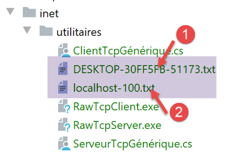
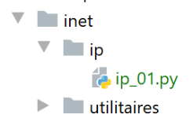
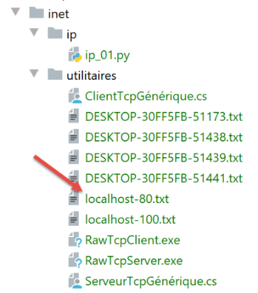
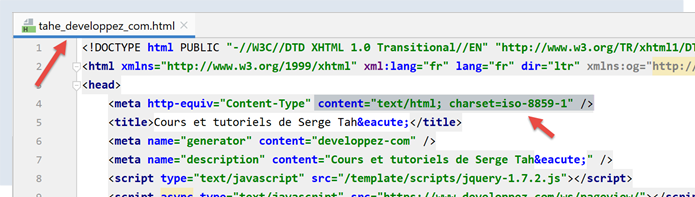
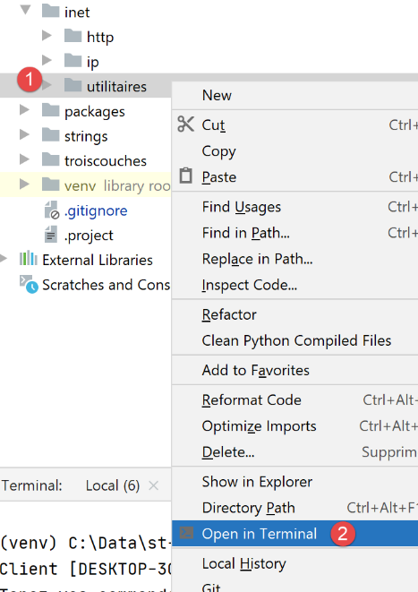
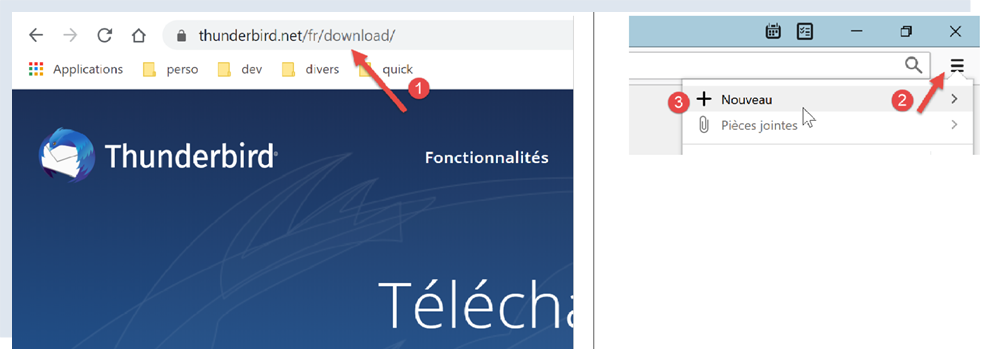
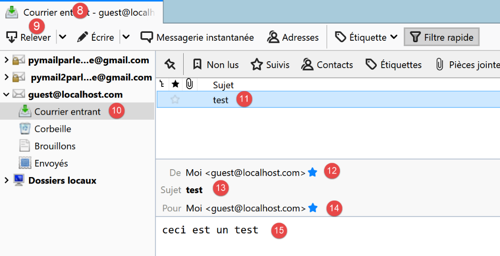
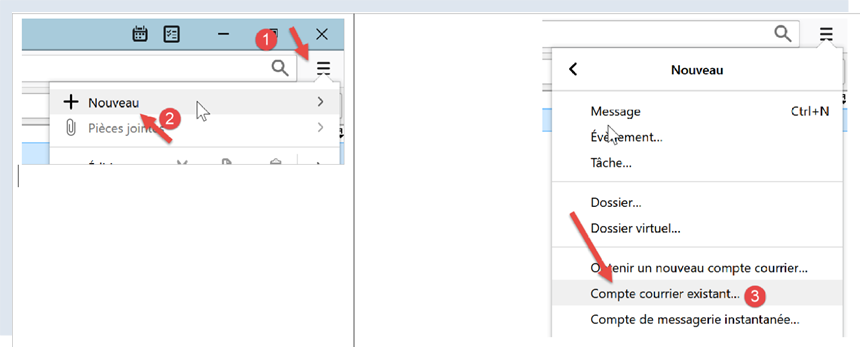
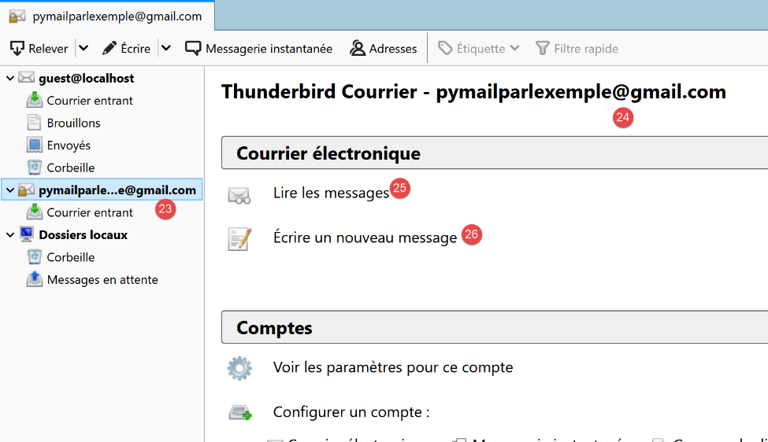
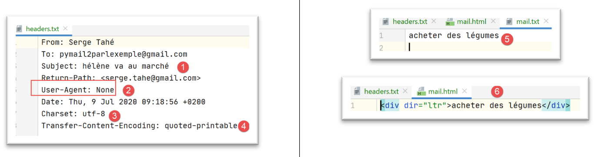

21. 互联网功能
现在我们来探讨Python的互联网功能，这些功能使我们能够进行TCP / IP（传输控制协议 / 互联网协议）编程。

21.1. 互联网编程基础
21.1.1. 概述
考虑两台远程机器 A 和 B 之间的通信：

当机器 A 上的某个 AppA 应用程序想要与互联网上的机器 B 上的某个 AppB 应用程序通信时，它必须知道以下几项信息：
- 机器 B 的 IP 地址（互联网协议）或名称；
- 应用程序 AppB 所使用的端口号。因为机器 B 可能支持许多在互联网上运行的应用程序。当它收到来自网络的信息时，必须知道这些信息是发给哪个应用程序的。 机器B上的应用程序通过称为通信端口的接口访问网络。机器B接收的数据包中包含该信息，以便将其分发给正确的应用程序；
- 机器B所支持的通信协议。在本研究中，我们将仅使用协议TCP-IP；
- AppB应用程序所接受的对话协议。实际上，机器A和机器B将进行“对话”。它们传递的内容将被封装在TCP-IP协议中。 然而，当链路另一端的AppB应用程序接收到AppA应用程序发送的信息时，它必须能够对其进行解析。 这类似于两个人A和B通过电话交流的情况：他们的对话由电话传输。语音将由电话A编码为信号，通过电话线传输，到达电话B后被解码。 此时，B才能听到对方的说话声。这正是对话协议概念的由来：如果A说的是法语，而B不懂这种语言，A和B就无法进行有效的对话；
因此，两个通信的应用程序必须就将采用的对话类型达成一致。 例如，与服务ftp的对话与服务pop的对话并不相同：这两项服务接受的命令不同。它们采用的是不同的对话协议；
21.1.2. TCP协议的特征
本文仅探讨使用 TCP 传输协议的网络通信，其主要特征如下：
- 希望发送信息的进程首先会与接收该信息的目标进程建立连接。该连接建立在发送端机器的一个端口与接收端机器的一个端口之间。两个端口之间由此形成一条虚拟路径，该路径仅供建立连接的两个进程专属使用；
- 源进程发送的所有数据包均沿此虚拟路径传输，并按发送顺序到达；
- 发送的信息具有连续性。发送方按自己的节奏发送信息。这些信息并不一定立即发送：TCP协议会等待收集到足够的信息后再进行发送。它们被存储在一个名为TCP段的结构中。 该分段一旦填满，将被传输至 IP 层，并在该层封装为 IP 数据包；
- TCP协议发送的每个分段都带有编号。接收方TCP协议会验证是否按顺序接收到了分段。对于每个正确接收的分段，它都会向发送方发送一份确认；
- 当发送方收到该确认后，会通知发送进程。因此，发送进程可以得知该分段已成功送达；
- 如果经过一段时间后，发送了某数据段的 TCP 协议未收到确认，它将重发该数据段，从而保证信息传输服务的质量；
- 在两个通信进程之间建立的虚拟电路是 full-duplex：这意味着信息可以双向传输。 因此，即使源进程仍在发送信息，目标进程也可以发送确认。例如，这使得源协议 TCP 能够发送多个数据段，而无需等待确认。 如果经过一段时间后，它发现尚未收到编号为 n 的某数据段的确认，它将从该点重新开始发送数据段；
21.1.3. 客户端-服务器关系
通常，互联网通信是非对称的：机器A发起连接以向机器B请求服务：它明确表示希望与机器B的SB1服务建立连接。机器B接受或拒绝该请求。 若服务器接受，机器A即可向服务SB1发送请求。这些请求必须符合服务SB1所支持的通信协议。 由此，在称为客户端的机器A与称为服务器端的机器B之间建立起一种请求-响应对话。双方中的一方将关闭连接。
21.1.4. 客户端架构
请求服务器应用程序服务的网络程序架构如下：
21.1.5. 服务器的架构
提供服务的程序架构如下：
服务器程序对客户端的初始连接请求与后续获取服务的请求处理方式不同。该程序本身并不提供服务。如果它提供服务，那么在服务期间就无法监听连接请求，客户端将无法获得服务。 其处理方式如下：一旦监听端口接收到连接请求并予以接受，服务器便会创建一个任务，负责提供客户端请求的服务。该服务通过服务器上的另一个端口（称为服务端口）提供。这样便可以同时为多个客户端提供服务。
一个服务任务的结构如下：
21.2. 了解互联网通信协议
21.2.1. 简介
当客户端连接到服务器后，双方之间便建立起对话。这种对话的性质构成了所谓的服务器通信协议。互联网中最常见的协议包括以下几种：
- HTTP：超文本传输协议（HTTP）——与Web服务器（HTTP服务器）进行交互的协议；
- SMTP：简单邮件传输协议（SMTP）——用于与电子邮件发送服务器（SMTP服务器）通信的协议；
- POP：邮局协议（POP）——用于与电子邮件存储服务器（服务器 POP）通信的协议。该协议用于检索已接收的电子邮件，而非发送邮件；
- IMAP：互联网邮件访问协议（IMAP）——用于与电子邮件存储服务器（服务器 IMAP）通信的协议。该协议已逐步取代了较早的 POP 协议；
- FTP：文件传输协议（FTP）——用于与文件存储服务器（服务器 FTP）通信的协议；
所有这些协议的共同特点是均为文本行协议：客户端与服务器之间交换的是文本行。如果有一个客户端能够：
- 与服务器 TCP 建立连接；
- 在控制台显示服务器发送的文本行；
- 将用户通过键盘输入的文本行发送给服务器；
因此，只要了解该协议的规则，我们就能与采用文本行协议的TCP服务器进行通信。
21.2.2. TCP 实用工具

在本文档相关的代码中，包含两个通信工具 TCP：
- [RawTcpClient] 用于连接服务器 S 的 P 端口；
- [RawTcpServer] 用于创建一个在端口 P 上等待客户端的服务器；
这两个都是 C# 程序，其源代码已提供给您，因此您可以对其进行修改。
服务器 TCP [RawTcpServer]调用语法为 [RawTcpServeur port]，用于在本地机器（您正在使用的计算机）的 [port] 端口上创建 TCP 服务：
- 服务器可同时为多个客户端提供服务；
- 服务器执行用户通过键盘输入的命令。这些命令包括：
- list：列出当前连接到服务器的客户端。这些客户端以 [id=x-nom=y] 的形式显示。字段 [id] 用于标识客户端；
- send x [texte]：向第 x 号客户端（id=x）发送文本。方括号 [] 不会被发送，但命令中必须包含它们，用于在视觉上标出发送给客户端的文本；
- close x：关闭与第 x 号客户端的连接；
- quit：关闭所有连接并停止服务；
- 客户端发送给服务器的行将显示在控制台上；
- 所有通信记录将保存在名为 [machine-port.txt] 的文本文件中，其中
- [machine] 是运行该代码的机器名称；
- [port] 是响应客户端请求的服务端口；
客户端 TCP [RawTcpClient] 使用语法 [RawTcpClient serveur port] 调用，以连接到服务器 [serveur] 的端口 [port]：
- 用户通过键盘输入的行被发送至服务器；
- 服务器发送的行显示在控制台上；
- 所有交互内容都会记录在名为 [serveur-port.txt] 的文本文件中；
让我们看一个示例。我们打开两个终端窗口 PyCharm，并在每个窗口中进入工具文件夹：

在其中一个窗口中，在端口 100 上启动 [RawTcpServer] 服务器：
(venv) C:\Data\st-2020\dev\python\cours-2020\python3-flask-2020\inet\utilitaires>RawTcpServer.exe 100
server : Serveur générique lancé sur le port 0.0.0.0:100
server : Attente d'un client...
server : Commandes disponibles : [list, send id [texte], close id, quit]
user :
- 第 1 行，我们位于实用程序文件夹中；
- 第 1 行，我们在端口 100 上启动服务器 TCP；
- 第2-4行，服务器进入等待状态，等待客户端 TCP 连接，并显示用户可通过键盘输入的命令列表；
- 第 5 行，服务器等待用户通过键盘输入命令；
在另一个命令窗口中，启动客户端 TCP：
(venv) C:\Data\st-2020\dev\python\cours-2020\python3-flask-2020\inet\utilitaires>RawTcpClient.exe localhost 100
Client [DESKTOP-30FF5FB:51173] connecté au serveur [localhost-100]
Tapez vos commandes (quit pour arrêter) :
- 第 1 行，我们位于实用程序文件夹中；
- 第 1 行，我们启动客户端 TCP：指示其连接到本地机器（即运行 [RawTcpClient] 代码的机器）的 100 号端口；
- 第2行，客户端已成功连接到服务器。这里显示了客户端的详细信息：它位于机器[DESKTOP-30FF5FB]上（本例中的本地机器），并使用端口[51173]与服务器通信：
- 第3行，客户端正在等待用户通过键盘输入的命令；
回到服务器窗口。其内容已发生变化：
(venv) C:\Data\st-2020\dev\python\cours-2020\python3-flask-2020\inet\utilitaires>RawTcpServer.exe 100
server : Serveur générique lancé sur le port 0.0.0.0:100
server : Attente d'un client...
server : Commandes disponibles : [list, send id [texte], close id, quit]
user : server : Client 1-DESKTOP-30FF5FB-51173 connecté...
server : Attente d'un client...
- 第 5 行，检测到一个客户端。服务器为其分配了编号 1。服务器已正确识别出远程客户端（主机和端口）；
- 第 6 行，服务器重新进入等待新客户端的状态；
回到客户端窗口，向服务器发送一条命令：
(venv) C:\Data\st-2020\dev\python\cours-2020\python3-flask-2020\inet\utilitaires>RawTcpClient.exe localhost 100
Client [DESKTOP-30FF5FB:51173] connecté au serveur [localhost-100]
Tapez vos commandes (quit pour arrêter) :
hello from client
- 第4行，发送给服务器的命令；
回到服务器窗口。其内容已发生变化：
(venv) C:\Data\st-2020\dev\python\cours-2020\python3-flask-2020\inet\utilitaires>RawTcpServer.exe 100
server : Serveur générique lancé sur le port 0.0.0.0:100
server : Attente d'un client...
server : Commandes disponibles : [list, send id [texte], close id, quit]
user : server : Client 1-DESKTOP-30FF5FB-51173 connecté...
server : Attente d'un client...
client 1 : [hello from client]
- 第7行，方括号内，服务器接收到的消息；
向客户发送回复：
(venv) C:\Data\st-2020\dev\python\cours-2020\python3-flask-2020\inet\utilitaires>RawTcpServer.exe 100
server : Serveur générique lancé sur le port 0.0.0.0:100
server : Attente d'un client...
server : Commandes disponibles : [list, send id [texte], close id, quit]
user : server : Client 1-DESKTOP-30FF5FB-51173 connecté...
server : Attente d'un client...
client 1 : [hello from client]
send 1 [hello from server]
user :
- 第8行，发送给客户端1的响应。仅发送方括号内的文本，不包括方括号本身；
回到客户端窗口：
(venv) C:\Data\st-2020\dev\python\cours-2020\python3-flask-2020\inet\utilitaires>RawTcpClient.exe localhost 100
Client [DESKTOP-30FF5FB:51173] connecté au serveur [localhost-100]
Tapez vos commandes (quit pour arrêter) :
hello from client
<-- [hello from server]
- 第5行，客户端收到的响应。收到的文本是方括号内的内容；
回到服务器窗口查看其他命令：
(venv) C:\Data\st-2020\dev\python\cours-2020\python3-flask-2020\inet\utilitaires>RawTcpServer.exe 100
server : Serveur générique lancé sur le port 0.0.0.0:100
server : Attente d'un client...
server : Commandes disponibles : [list, send id [texte], close id, quit]
user : server : Client 1-DESKTOP-30FF5FB-51173 connecté...
server : Attente d'un client...
client 1 : [hello from client]
send 1 [hello from server]
user : list
server : id=1-name=DESKTOP-30FF5FB-51173
user : close 1
server : Connexion client 1 fermée...
user : quit
server : fin du service
- 第9行，我们请求客户端列表；
- 第10行，响应；
- 第11行，我们关闭与第1号客户端的连接；
- 第12行，服务器的确认；
- 第13行，我们停止服务器；
- 第14行，服务器的确认；
回到客户端窗口：
(venv) C:\Data\st-2020\dev\python\cours-2020\python3-flask-2020\inet\utilitaires>RawTcpClient.exe localhost 100
Client [DESKTOP-30FF5FB:51173] connecté au serveur [localhost-100]
Tapez vos commandes (quit pour arrêter) :
hello from client
<-- [hello from server]
Perte de la connexion avec le serveur...
- 第6行，客户端检测到服务结束；
生成了两个日志文件，一个是服务器日志，另一个是客户端日志：

- [1]，服务器日志：文件名即客户端名称，格式为 [machine-port]。这使得不同客户端拥有不同的日志文件；
- [2] 文件为客户端日志：文件名采用 [machine-port] 的格式，即服务器名称；
服务器日志如下：
<-- [hello from client]
--> [hello from server]
客户端日志如下：
--> [hello from client]
<-- [hello from server]
21.3. 获取互联网上某台机器的名称或地址 IP

互联网上的计算机通过地址（IP、IPv4 或 IPv6）进行标识，通常也通过名称进行标识。 但最终，互联网通信协议仅使用 IP 这一地址。因此，对于通过名称标识的计算机，必须知道其 IP 地址。
脚本 [ip-01.py] 如下：
# 导入
import socket
# ------------------------------------------------
def get_ip_and_name(nom_machine: str):
# nom_machine：要获取其地址的机器名称 IP
try:
# nom_machine-->地址 IP
ip = socket.gethostbyname(nom_machine)
print(f"ip[{nom_machine}]={ip}")
except socket.error as erreur:
# 显示错误
print(f"ip[{nom_machine}]={erreur}")
return
try:
# 地址 IP --> nom_machine
names = socket.gethostbyaddr(ip)
print(f"names[{ip}]={names}")
except socket.error as erreur:
# 显示错误
print(f"names[{ip}]={erreur}")
return
# ---------------------------------------- 主
# 互联网机器
hosts = ["istia.univ-angers.fr", "www.univ-angers.fr", "sergetahe.com", "localhost", "xx"]
# IP 设备的地址 HOTES
for host in hosts:
print("-------------------------------------")
get_ip_and_name(host)
# 结束
print("Terminé...")
注释
- 第 2 行：[socket] 模块提供了管理互联网套接字所需的函数。[socket] 意为电源插座、网络插座；
- 第6行：[get_ip_and_name]函数可根据机器的互联网名称获取：
- 该机器的 IP 地址；
- 根据前一个地址 IP 获取的机器名称；
- 第 10 行：函数 [socket.gethostbyname] 可根据其中一个名称（一台互联网机器可能有一个主名称和多个别名）获取该机器的 IP 地址；
- 第 12 行：套接字相关函数在发生错误时会抛出 [socket.error] 异常；
- 第19行：函数 [socket.gethostbyaddr] 可根据其 IP 地址获取一台机器的名称。我们将看到，获取到的名称可能与第6行传入的名称不同；
- 第 30 行：一台机器的名称列表。最后一个名称有误。名称 [localhost] 指的是您正在使用并执行该脚本的机器；
- 第33-35行：显示这些机器的IP信息；
结果：
C:\Data\st-2020\dev\python\cours-2020\python3-flask-2020\venv\Scripts\python.exe C:/Data/st-2020/dev/python/cours-2020/python3-flask-2020/inet/ip/ip_01.py
-------------------------------------
ip[istia.univ-angers.fr]=193.49.144.41
names[193.49.144.41]=('ametys-fo-2.univ-angers.fr', [], ['193.49.144.41'])
-------------------------------------
ip[www.univ-angers.fr]=193.49.144.41
names[193.49.144.41]=('ametys-fo-2.univ-angers.fr', [], ['193.49.144.41'])
-------------------------------------
ip[sergetahe.com]=87.98.154.146
names[87.98.154.146]=('cluster026.hosting.ovh.net', [], ['87.98.154.146'])
-------------------------------------
ip[localhost]=127.0.0.1
names[127.0.0.1]=('DESKTOP-30FF5FB', [], ['127.0.0.1'])
-------------------------------------
ip[xx]=[Errno 11001] getaddrinfo failed
Terminé...
Process finished with exit code 0
21.4. HTTP协议（HyperText传输协议）
21.4.1. 示例 1

当浏览器显示 URL 时，它作为 Web 服务器的客户端，亦即 HTTP 服务器的客户端。浏览器主动发起请求，首先向服务器发送若干命令。以本例为例：
- 服务器即工具 [RawTcpServer]；
- 客户端将是一个浏览器；
我们首先在100端口上启动服务器：
(venv) C:\Data\st-2020\dev\python\cours-2020\python3-flask-2020\inet\utilitaires>RawTcpServer.exe 100
server : Serveur générique lancé sur le port 0.0.0.0:100
server : Attente d'un client...
server : Commandes disponibles : [list, send id [texte], close id, quit]
user :
然后，我们使用浏览器请求 URL [http://localhost:100]，也就是说，我们指定被请求的 HTTP 服务器运行在本地机器的 100 端口上：

让我们回到服务器窗口：
(venv) C:\Data\st-2020\dev\python\cours-2020\python3-flask-2020\inet\utilitaires>RawTcpServer.exe 100
server : Serveur générique lancé sur le port 0.0.0.0:100
server : Attente d'un client...
server : Commandes disponibles : [list, send id [texte], close id, quit]
user : server : Client 1-DESKTOP-30FF5FB-51438 connecté...
server : Attente d'un client...
server : Client 2-DESKTOP-30FF5FB-51439 connecté...
server : Attente d'un client...
client 1 : [GET / HTTP/1.1]
client 1 : [Host: localhost:100]
client 1 : [Connection: keep-alive]
client 1 : [DNT: 1]
client 1 : [Upgrade-Insecure-Requests: 1]
client 1 : [User-Agent: Mozilla/5.0 (Windows NT 10.0; Win64; x64) AppleWebKit/537.36 (KHTML, like Gecko) Chrome/83.0.4103.116 Safari/537.36]
client 1 : [Accept: text/html,application/xhtml+xml,application/xml;q=0.9,image/webp,image/apng,*/*;q=0.8,application/signed-exchange;v=b3;q=0.9]
client 1 : [Sec-Fetch-Site: none]
client 1 : [Sec-Fetch-Mode: navigate]
client 1 : [Sec-Fetch-User: ?1]
client 1 : [Sec-Fetch-Dest: document]
client 1 : [Accept-Encoding: gzip, deflate, br]
client 1 : [Accept-Language: fr-FR,fr;q=0.9,en-US;q=0.8,en;q=0.7]
client 1 : []
server : Client 3-DESKTOP-30FF5FB-51441 connecté...
server : Attente d'un client...
- 第 5 行，已连接的客户端；
- 第 9-22 行：它发送的一系列文本行：
- 第9行：该行的格式为[GET URL HTTP/1.1]。它请求URL，并要求服务器使用HTTP 1.1协议；
- 第10行：该行的格式为[Host: serveur:port]。命令[Host]的大小写不区分。在此重申，客户端正在向运行在100端口的本地服务器发送请求；
- 第 14 行：命令 [User-Agent] 提供了客户端的标识；
- 第15行：命令[Accept]指定了客户端支持的文档类型；
- 第21行：命令[Accept-Language]指定若文档存在多种语言版本，则希望获取哪种语言的文档；
- 第 11 行：命令 [Connection] 指定所需的连接模式：[keep-alive] 表示连接应保持直至数据交换结束；
- 第22行：客户端在命令末尾添加空行；
我们通过关闭服务器来结束连接：
client 1 : []
server : Client 3-DESKTOP-30FF5FB-51441 connecté...
server : Attente d'un client...
quit
server : fin du service
21.4.2. 示例 2
既然我们已经了解了浏览器发送的用于请求 URL 的命令，接下来我们将使用我们的客户端 TCP [RawTcpClient] 来请求该 URL。 Laragon 的 Apache 服务器（参见 |安装 Laragon| 章节）将作为我们的 Web 服务器。
启动 Laragon，然后启动 Apache Web 服务器：


现在，我们使用浏览器访问 URL [http://localhost:80]。 此处我们仅指定了服务器地址，未指定具体文件。因此请求的是 /，即 Web 服务器的根目录：

- ，即请求的 URL。最初输入的是 [http://localhost:80]，而浏览器 （此处为 Firefox）将其简单转换为 [localhost]，因为当未指定协议时默认使用 [http] 协议，当未指定端口时默认使用 [80] 端口；
- 在 [2] 中，即被请求的 Web 服务器的根页面 /；
现在，让我们查看浏览器接收到的文本：

- 右键点击接收到的页面，选择 [2] 选项。我们将获得以下源代码：
<!DOCTYPE html>
<html>
<head>
<title>Laragon</title>
<link href="https://fonts.googleapis.com/css?family=Karla:400" rel="stylesheet" type="text/css">
<style>
html, body {
height: 100%;
}
body {
margin: 0;
padding: 0;
width: 100%;
display: table;
font-weight: 100;
font-family: 'Karla';
}
.container {
text-align: center;
display: table-cell;
vertical-align: middle;
}
.content {
text-align: center;
display: inline-block;
}
.title {
font-size: 96px;
}
.opt {
margin-top: 30px;
}
.opt a {
text-decoration: none;
font-size: 150%;
}
a:hover {
color: red;
}
</style>
</head>
<body>
<div class="container">
<div class="content">
<div class="title" title="Laragon">Laragon</div>
<div class="info">
<br />
Apache/2.4.35 (Win64) OpenSSL/1.1.1b PHP/7.2.19<br />
PHP version: 7.2.19 <span><a title="phpinfo()" href="/?q=info">info</a></span><br />
Document Root: C:/MyPrograms/laragon/www<br />
</div>
<div class="opt">
<div><a title="Getting Started" href="https://laragon.org/docs">Getting Started</a></div>
</div>
</div>
</div>
</body>
</html>
现在使用我们的客户端 TCP 请求 URL [http://localhost:80]：
(venv) C:\Data\st-2020\dev\python\cours-2020\python3-flask-2020\inet\utilitaires>RawTcpClient.exe localhost 80
Client [DESKTOP-30FF5FB:51541] connecté au serveur [localhost-80]
Tapez vos commandes (quit pour arrêter) :
- 第 1 行，我们连接到 localhost 服务器的 80 端口。Laragon 的 Web 服务器就在此运行；
现在，我们输入上一段中发现的命令：
(venv) C:\Data\st-2020\dev\python\cours-2020\python3-flask-2020\inet\utilitaires>RawTcpClient.exe localhost 80
Client [DESKTOP-30FF5FB:51544] connecté au serveur [localhost-80]
Tapez vos commandes (quit pour arrêter) :
GET / HTTP/1.1
Host: localhost:80
<-- [HTTP/1.1 200 OK]
<-- [Date: Sun, 05 Jul 2020 12:42:14 GMT]
<-- [Server: Apache/2.4.35 (Win64) OpenSSL/1.1.1b PHP/7.2.19]
<-- [X-Powered-By: PHP/7.2.19]
<-- [Content-Length: 1776]
<-- [Content-Type: text/html; charset=UTF-8]
<-- []
<-- [<!DOCTYPE html>]
<-- [<html>]
<-- [ <head>]
<-- [ <title>Laragon</title>]
<-- []
<-- [ <link href="https://fonts.googleapis.com/css?family=Karla:400" rel="stylesheet" type="text/css">]
<-- []
<-- [ <style>]
<-- [ html, body {]
<-- [ height: 100%;]
<-- [ }]
<-- []
<-- [ body {]
<-- [ margin: 0;]
<-- [ padding: 0;]
<-- [ width: 100%;]
<-- [ display: table;]
<-- [ font-weight: 100;]
<-- [ font-family: 'Karla';]
<-- [ }]
<-- []
<-- [ .container {]
<-- [ text-align: center;]
<-- [ display: table-cell;]
<-- [ vertical-align: middle;]
<-- [ }]
<-- []
<-- [ .content {]
<-- [ text-align: center;]
<-- [ display: inline-block;]
<-- [ }]
<-- []
<-- [ .title {]
<-- [ font-size: 96px;]
<-- [ }]
<-- []
<-- [ .opt {]
<-- [ margin-top: 30px;]
<-- [ }]
<-- []
<-- [ .opt a {]
<-- [ text-decoration: none;]
<-- [ font-size: 150%;]
<-- [ }]
<-- [ ]
<-- [ a:hover {]
<-- [ color: red;]
<-- [ }]
<-- [ </style>]
<-- [ </head>]
<-- [ <body>]
<-- [ <div class="container">]
<-- [ <div class="content">]
<-- [ <div class="title" title="Laragon">Laragon</div>]
<-- [ ]
<-- [ <div class="info"><br />]
<-- [ Apache/2.4.35 (Win64) OpenSSL/1.1.1b PHP/7.2.19<br />]
<-- [ PHP version: 7.2.19 <span><a title="phpinfo()" href="/?q=info">info</a></span><br />]
<-- [ Document Root: C:/MyPrograms/laragon/www<br />]
<-- []
<-- [ </div>]
<-- [ <div class="opt">]
<-- [ <div><a title="Getting Started" href="https://laragon.org/docs">Getting Started</a></div>]
<-- [ </div>]
<-- [ </div>]
<-- []
<-- [ </div>]
<-- [ </body>]
<-- [</html>]
Perte de la connexion avec le serveur...
- 第4行，输入命令[GET]。请求Web服务器的根目录/；
- 第5行，命令[Host]；
- 这是仅有的两个必不可少的命令。对于其他命令，Web 服务器将采用默认值；
- 第6行，空行，用于结束客户端命令；
- 第6行之后是Web服务器的响应；
- 第7-12行：服务器响应的HTTP头部；
- 第13行：空行，标志着HTTP头信息的结束；
- 第14-82行，即第4行请求的HTML文档；
我们加载日志文件 [localhost-80.txt]：

--> [GET / HTTP/1.1]
--> [Host: localhost:80]
--> []
<-- [HTTP/1.1 200 OK]
<-- [Date: Sun, 05 Jul 2020 12:42:14 GMT]
<-- [Server: Apache/2.4.35 (Win64) OpenSSL/1.1.1b PHP/7.2.19]
<-- [X-Powered-By: PHP/7.2.19]
<-- [Content-Length: 1776]
<-- [Content-Type: text/html; charset=UTF-8]
<-- []
<-- [<!DOCTYPE html>]
<-- [<html>]
<-- [ <head>]
<-- [ <title>Laragon</title>]
<-- []
<-- [ <link href="https://fonts.googleapis.com/css?family=Karla:400" rel="stylesheet" type="text/css">]
<-- []
<-- [ <style>]
<-- [ html, body {]
<-- [ height: 100%;]
<-- [ }]
<-- []
<-- [ body {]
<-- [ margin: 0;]
<-- [ padding: 0;]
<-- [ width: 100%;]
<-- [ display: table;]
<-- [ font-weight: 100;]
<-- [ font-family: 'Karla';]
<-- [ }]
<-- []
<-- [ .container {]
<-- [ text-align: center;]
<-- [ display: table-cell;]
<-- [ vertical-align: middle;]
<-- [ }]
<-- []
<-- [ .content {]
<-- [ text-align: center;]
<-- [ display: inline-block;]
<-- [ }]
<-- []
<-- [ .title {]
<-- [ font-size: 96px;]
<-- [ }]
<-- []
<-- [ .opt {]
<-- [ margin-top: 30px;]
<-- [ }]
<-- []
<-- [ .opt a {]
<-- [ text-decoration: none;]
<-- [ font-size: 150%;]
<-- [ }]
<-- [ ]
<-- [ a:hover {]
<-- [ color: red;]
<-- [ }]
<-- [ </style>]
<-- [ </head>]
<-- [ <body>]
<-- [ <div class="container">]
<-- [ <div class="content">]
<-- [ <div class="title" title="Laragon">Laragon</div>]
<-- [ ]
<-- [ <div class="info"><br />]
<-- [ Apache/2.4.35 (Win64) OpenSSL/1.1.1b PHP/7.2.19<br />]
<-- [ PHP version: 7.2.19 <span><a title="phpinfo()" href="/?q=info">info</a></span><br />]
<-- [ Document Root: C:/MyPrograms/laragon/www<br />]
<-- []
<-- [ </div>]
<-- [ <div class="opt">]
<-- [ <div><a title="Getting Started" href="https://laragon.org/docs">Getting Started</a></div>]
<-- [ </div>]
<-- [ </div>]
<-- []
<-- [ </div>]
<-- [ </body>]
<-- [</html>]
- 第 11-79 行：接收到的文档 HTML。在前面的示例中，Firefox 也接收到了相同的文档；
现在我们已经掌握了编写 TCP 客户端的基础，该客户端将请求 URL。
21.4.3. 示例 3

脚本 [http/01/main.py] 是一个由文件 [config.py] 配置的 HTTP 客户端。该文件的内容如下：
def configure():
# 待查询的 URLs
urls = [
# 网站：要连接的网站名称
# 端口：Web 服务的端口
# GET：请求的 URL
# headers：请求中需发送的 HTTP 头部信息
# endOfLine：发送的 HTTP 头部中的行结束标记
# encoding：服务器响应的编码
# timeout：服务器响应的最大等待时间
{
"site": "localhost",
"port": 80,
"GET": "/",
"headers": {
"Host": "localhost:80",
"User-Agent": "client Python",
"Accept": "text/HTML",
"Accept-Language": "fr"
},
"endOfLine": "\r\n",
"encoding": "utf-8",
"timeout": 0.5
},
{
"site": "sergetahe.com",
"port": 80,
"GET": "/",
"headers": {
"Host": "sergetahe.com:80",
"User-Agent": "client Python",
"Accept": "text/HTML",
"Accept-Language": "fr"
},
"endOfLine": "\r\n",
"encoding": "utf-8",
"timeout": 5
},
{
"site": "tahe.developpez.com",
"port": 443,
"GET": "/",
"headers": {
"Host": "tahe.developpez.com:443",
"User-Agent": "client Python",
"Accept": "text/HTML",
"Accept-Language": "fr"
},
"endOfLine": "\r\n",
"encoding": "utf-8",
"timeout": 2
},
{
"site": "www.sergetahe.com",
"port": 80,
"GET": "/cours-tutoriels-de-programmation/",
"headers": {
"Host": "sergetahe.com:80",
"User-Agent": "client Python",
"Accept": "text/HTML",
"Accept-Language": "fr"
},
"endOfLine": "\r\n",
"encoding": "utf-8",
"timeout": 5
}
]
# 返回配置
return {
"urls": urls
}
- 文件内容是一组URL的列表，列表中的每个元素都是一个字典。该字典说明了如何连接到由键[site]指定的网站；
- 第4-10行：各字典中键的含义；
脚本[http/01/main.py]如下：
# 导入
import codecs
import socket
# -----------------------------------------------------------------------
def get_url(url: dict, suivi: bool = True):
# 读取网站 url["GET"] 的 URL URL，并将其存储在文件 url[site].html 中
# 客户端/服务器对话遵循词典 [url] 中指定的 HTTP 协议
# 允许异常向上传递
sock = None
html = None
try:
# 通过端口 80 连接到 [site]，并设置超时
site = url['site']
sock = socket.create_connection((site, int(url['port'])), float(url['timeout']))
# 连接代表双向通信流
# 在客户端（本程序）与所连接的Web服务器之间
# 该通道用于交换命令和信息
# 通信协议为 HTTP
# 创建文件 site.html - 将干扰字符替换为文件名
site2 = site.replace("/", "_")
site2 = site2.replace(".", "_")
html_filename = f'{site2}.html'
html = codecs.open(f"output/{html_filename}", "w", "utf-8")
# 客户端将与服务器建立 HTTP 对话
if suivi:
print(f"Client : début de la communication avec le serveur [{site}]")
# 根据服务器不同，客户端的行末需以 \n 或 \r\n 结尾
end_of_line = url["endOfLine"]
# 客户端发送命令 GET 以请求 URL 配置 ["GET"]
# 语法 GET URL HTTP/1.1
commande = f"GET {url['GET']} HTTP/1.1{end_of_line}"
# 跟踪？
if suivi:
print(f"--> {commande}", end='')
# 将命令发送至服务器
sock.send(bytearray(commande, 'utf-8'))
# 发送头信息 HTTP
for verb, value in url['headers'].items():
# 构建待发送的命令
commande = f"{verb}: {value}{end_of_line}"
# 后续？
if suivi:
print(f"--> {commande}", end='')
# 向服务器发送命令
sock.send(bytearray(commande, 'utf-8'))
# 发送标头 HTTP [Connection: close] 以请求 Web 服务器
# 在发送完所请求的文档后关闭连接
sock.send(bytearray(f"Connection: close{end_of_line}", 'utf-8'))
# HTTP 协议的头部（headers）必须以空行结尾
sock.send(bytearray(end_of_line, 'utf-8'))
#
# 服务器现在将通过 sock 通道进行响应。它将发送所有
# 数据，随后关闭通道。因此客户端会读取来自 sock
# 直到通道关闭
#
# 首先读取服务器发送的 HTTP 头部
# 这些头部同样以空行结尾
if suivi:
print(f"Réponse du serveur [{site}]")
# 将套接字视为文本文件进行读取
encoding = f"{url['encoding']}" if url['encoding'] else None
if encoding:
file = sock.makefile(encoding=encoding)
else:
file = sock.makefile()
# 逐行处理该文件
fini = False
while not fini:
# 读取当前行
ligne = file.readline().strip()
# 是否有一行不为空？
if ligne:
if suivi:
# 显示标题 HTTP
print(f"<-- {ligne}")
else:
# 这是空行——标题部分结束 HTTP
fini = True
# 正在读取紧随空行之后的文档 HTML
# 读取当前行
ligne = file.readline()
while ligne:
# 写入日志文件
html.write(str(ligne))
# 下一行
ligne = file.readline()
# 当服务器关闭连接时，循环结束
finally:
# 客户端关闭连接
if sock:
sock.close()
# 关闭 HTML 文件
if html:
html.close()
# -------------------main
# 配置应用程序
import config
config = config.configure()
# 从配置文件中获取 URL
for url in config['urls']:
print("-------------------------")
print(url['site'])
print("-------------------------")
try:
# 从网站 [site] 读取 URL
get_url(url)
except BaseException as erreur:
print(f"L'erreur suivante s'est produite : {erreur}")
finally:
pass
# 结束
print("Terminé...")
代码注释：
- 第108-109行：获取模块[config.py]中的字典[config]；
- 第 111-122 行：调用该字典；
- 第 118 行、第 7 行：函数 [get_url(url)] 请求网站 url[site] 上的文档，并将其存储在文本文件 url[site].HTML 中。 默认情况下，客户端/服务器通信会记录在控制台（跟踪=True）；
- 所有操作都在 [try / finally] 中完成（第 14-96 行）。没有 [except] 子句。异常将回传至调用代码，由调用代码进行捕获并显示（第 119-120 行）；
- 第16-17行：建立与Web服务器的连接。函数[socket.create_connection]接受三个参数：
- [param1]：是要访问的互联网主机的名称；
- [param2]：是要连接的服务端口号；
- [param3]：[socket.create_connection]返回一个套接字，而[param3]（若存在）则指定所创建套接字的超时时间。超时时间是指套接字在等待远程机器响应时的最大等待时限；
- 第27-28行：创建文件[site.html]，用于存储接收到的文档HTML；
- 第34-43行：客户端的第一个命令必须是[GET URL HTTP/1.1]；
- 第 43 行：函数 [sock.send] 允许客户端向服务器发送数据。此处发送的文本行含义如下：“我想要（GET）当前连接的网站上的页面 [URL]。 我使用的是 HTTP 协议 1.1 版"；
- 第43行：指令[sock.send(bytearray(commande, 'utf-8'))]发送一个字节数组（bytearray）。该数组是通过将字符串[commande]转换为按UTF-8编码的字节序列而获得的；
- 第44-52行：发送协议的其余行 HTTP [Host, User-Agent, Accept, Accept-Language…]。它们的顺序无关紧要；
- 第53-55行：发送头部HTTP [Connection: close]，要求服务器在发送完所请求的文档后关闭连接。默认情况下服务器不会这样做。 因此必须明确要求服务器执行此操作。这样做的好处在于，客户端能够检测到连接关闭，从而确认已完整接收所请求的文档；
- 第56-57行：向服务器发送一个空行，表示客户端已发送完其HTTP头部，并开始等待所请求的文档；
- 第 68-86 行：服务器首先会发送一系列 HTTP 头部，提供有关所请求文档的各种信息。这些头部以空行结尾；
- 第 69-73 行：为了能够逐行读取服务器的响应，我们使用 [sock.makefile(encoding=encoding)] 方法。可选参数 [encoding] 指定了预期文本的编码。完成此操作后，服务器发送的行流即可像普通文本文件一样被读取；
- 第 78 行：使用 [readline] 方法读取服务器发送的一行数据。去除行首和行尾的空格（包括换行符）；
- 第 81-83 行：如果该行不为空且已请求跟踪，则将接收到的行显示在控制台上；
- 第84-86行：若已获取到标记服务器发送的HTTP头部结束的空行，则终止第76行的循环；
- 第 90-95 行：服务器响应中的文本行可通过 while 循环逐行读取，并保存到文本文件 [html] 中。当 Web 服务器发送完所请求的整页内容后，它将关闭与客户端的连接。 在客户端，这将被检测为文件结束，并退出第90-95行的循环；
- 第96-102行：无论是否发生错误，都会释放代码所使用的所有资源；
结果：
控制台显示以下日志：
C:\Data\st-2020\dev\python\cours-2020\python3-flask-2020\venv\Scripts\python.exe C:/Data/st-2020/dev/python/cours-2020/python3-flask-2020/inet/http/01/main.py
-------------------------
localhost
-------------------------
Client : début de la communication avec le serveur [localhost]
--> GET / HTTP/1.1
--> Host: localhost:80
--> User-Agent: client Python
--> Accept: text/HTML
--> Accept-Language: fr
Réponse du serveur [localhost]
<-- HTTP/1.1 200 OK
<-- Date: Sun, 05 Jul 2020 16:27:46 GMT
<-- Server: Apache/2.4.35 (Win64) OpenSSL/1.1.1b PHP/7.2.19
<-- X-Powered-By: PHP/7.2.19
<-- Content-Length: 1776
<-- Connection: close
<-- Content-Type: text/html; charset=UTF-8
-------------------------
sergetahe.com
-------------------------
Client : début de la communication avec le serveur [sergetahe.com]
--> GET / HTTP/1.1
--> Host: sergetahe.com:80
--> User-Agent: client Python
--> Accept: text/HTML
--> Accept-Language: fr
Réponse du serveur [sergetahe.com]
<-- HTTP/1.1 302 Found
<-- Date: Sun, 05 Jul 2020 16:27:45 GMT
<-- Content-Type: text/html; charset=UTF-8
<-- Transfer-Encoding: chunked
<-- Connection: close
<-- Server: Apache
<-- X-Powered-By: PHP/7.3
<-- Location: http://sergetahe.com:80/编程教程
<-- Set-Cookie: SERVERID68971=2620178|XwH/h|XwH/h; path=/
<-- X-IPLB-Instance: 17106
-------------------------
tahe.developpez.com
-------------------------
Client : début de la communication avec le serveur [tahe.developpez.com]
--> GET / HTTP/1.1
--> Host: tahe.developpez.com:443
--> User-Agent: client Python
--> Accept: text/HTML
--> Accept-Language: fr
Réponse du serveur [tahe.developpez.com]
<-- HTTP/1.1 400 Bad Request
<-- Date: Sun, 05 Jul 2020 16:27:45 GMT
<-- Server: Apache/2.4.38 (Debian)
<-- Content-Length: 453
<-- Connection: close
<-- Content-Type: text/html; charset=iso-8859-1
-------------------------
www.sergetahe.com
-------------------------
Client : début de la communication avec le serveur [www.sergetahe.com]
--> GET /cours-tutoriels-de-programmation/ HTTP/1.1
--> Host: sergetahe.com:80
--> User-Agent: client Python
--> Accept: text/HTML
--> Accept-Language: fr
Réponse du serveur [www.sergetahe.com]
<-- HTTP/1.1 301 Moved Permanently
<-- Date: Sun, 05 Jul 2020 16:27:45 GMT
<-- Content-Type: text/html; charset=iso-8859-1
<-- Content-Length: 263
<-- Connection: close
<-- Server: Apache
<-- Location: https://sergetahe.com/编程教程-课程/
<-- Set-Cookie: SERVERID68971=2620178|XwH/h|XwH/h; path=/
<-- X-IPLB-Instance: 17095
Terminé...
Process finished with exit code 0
注释
- 第 12 行：已找到 URL [http://localhost/]（代码 200）；
- 第29行：未找到URL [http://sergetahe.com/]（状态码302）。状态码302表示所请求的页面已更改为URL。 第36行的HTTP [Location]标头指明了新的URL；
- 第49行：发送到服务器的请求[http://tahe.developpez.com]不正确（状态码400）；
- 第65行：未找到URL [http://www.sergetahe.com/]（状态码301）。状态码301表示所请求的页面已永久更改为URL。 新地址由第71行的HTTP [Location]标头指示；
通常情况下，HTTP服务器的3xx、4xx和5xx代码均为错误代码。
执行生成了以下文件：

收到的文件 [output/localhost.HTML] 内容如下：
<!DOCTYPE html>
<html>
<head>
<title>Laragon</title>
<link href="https://fonts.googleapis.com/css?family=Karla:400" rel="stylesheet" type="text/css">
<style>
html, body {
height: 100%;
}
body {
margin: 0;
padding: 0;
width: 100%;
display: table;
font-weight: 100;
font-family: 'Karla';
}
.container {
text-align: center;
display: table-cell;
vertical-align: middle;
}
.content {
text-align: center;
display: inline-block;
}
.title {
font-size: 96px;
}
.opt {
margin-top: 30px;
}
.opt a {
text-decoration: none;
font-size: 150%;
}
a:hover {
color: red;
}
</style>
</head>
<body>
<div class="container">
<div class="content">
<div class="title" title="Laragon">Laragon</div>
<div class="info"><br />
Apache/2.4.35 (Win64) OpenSSL/1.1.1b PHP/7.2.19<br />
PHP version: 7.2.19 <span><a title="phpinfo()" href="/?q=info">info</a></span><br />
Document Root: C:/MyPrograms/laragon/www<br />
</div>
<div class="opt">
<div><a title="Getting Started" href="https://laragon.org/docs">Getting Started</a></div>
</div>
</div>
</div>
</body>
</html>
我们确实获得了与Firefox浏览器生成的文档完全相同的文件。
收到的 [output/sergetahe_com.html] 文档如下：

大多数HTTP服务器会分段发送对请求的响应。每个发送的分段前都有一行，标明后续分段的字节数。这使得客户端能够读取确切数量的字节以获取该分段。此处的0表示后续分段为零字节。 需要指出的是，服务器此前已通知文档 [http://sergetahe.com/] 已从 URL 更新。因此，此次并未发送任何文档。
文档 [output/tahe_developpez_com.html] 内容如下：
<!DOCTYPE HTML PUBLIC "-//IETF//DTD HTML 2.0//EN">
<html><head>
<title>400 Bad Request</title>
</head><body>
<h1>Bad Request</h1>
<p>Your browser sent a request that this server could not understand.<br />
Reason: You're speaking plain HTTP to an SSL-enabled server port.<br />
Instead use the HTTPS scheme to access this URL, please.<br />
</p>
<hr>
<address>Apache/2.4.38 (Debian) Server at 2eurocents.developpez.com Port 80</address>
</body></html>
- 第1-12行：尽管请求存在错误（结果第49行），服务器仍发送了文档HTML。文档HTML使服务器能够说明错误原因。该原因在第6和第7行中指出：
- 第 7 行：我们的客户端使用了 HTTP 协议；
- 第8行：服务器使用的是HTTPS协议（S=安全），且不支持HTTP协议；
[output/www_sergetahe_com.html]文档内容如下：
<!DOCTYPE HTML PUBLIC "-//IETF//DTD HTML 2.0//EN">
<html><head>
<title>301 Moved Permanently</title>
</head><body>
<h1>Moved Permanently</h1>
<p>The document has moved <a href="https://sergetahe.com/cours-tutoriels-de-programmation/">here</a>.</p>
</body></html>
此处同样发生了一个错误（第3行）。不过，服务器会发送一份HTML文档来详细说明该错误（第1-7行）。
21.4.4. 示例 4
前面的示例表明，我们的 HTTP 客户端功能尚不完善。 现在我们将介绍一个名为 [curl] 的工具，它能够通过处理上述问题（如 HTTPS 协议、分段发送的文档、重定向等）来抓取网页文档。该工具 [curl] 已随 Laragon 一起安装：

打开终端 PyCharm [1]：

- 在 [1] 中，访问 PyCharm 的终端；
- 在 [2-3] 中，显示已激活的终端；
- 在 [4] 中，您当前所在的文件夹。下文中该文件夹名称无关紧要；
在终端中输入以下命令：
(venv) C:\Data\st-2020\dev\python\cours-2020\python3-flask-2020\inet\utilitaires>curl --help
Usage: curl [options...] <url>
--abstract-unix-socket <path> Connect via abstract Unix domain socket
--anyauth Pick any authentication method
-a, --append Append to target file when uploading
--basic Use HTTP Basic Authentication
--cacert <CA certificate> CA certificate to verify peer against
…
命令 [curl –help] 产生了结果，这表明命令 [curl] 位于终端的 PATH 中。 在 Windows 系统中，PATH 代表用户输入可执行命令（此处为 [curl]）时所遍历的所有文件夹。PATH 的值可通过以下方式得知：
(venv) C:\Data\st-2020\dev\python\cours-2020\python3-flask-2020\inet\utilitaires>echo %PATH%
C:\Data\st-2020\dev\python\cours-2020\python3-flask-2020\venv\Scripts;C:\Program Files (x86)\Common Files\Oracle\Java\javapath;C:\Program Files\Python38\Scripts\;C:\Program Files\Python38\;C:\windows\system32;C:\windows;C:\windows\System32\Wbem;C:\windows\System32\WindowsPowerShell\v1.0\;C:\windows\System32\OpenSSH\;C:\Program Files\Git\cmd;C:\Users\serge\AppData\Local\Microsoft\WindowsApps;;C:\Program Files\JetBrains\PyCharm Community Edition 2020.1.2\bin;
第 2 行，PATH 的文件夹以分号分隔。该列表中未出现与 Laragon 相关的文件夹。稍作调查后，发现 [c:\windows\system32] 文件夹中存在一个 [curl]。 此前响应的正是该文件。
若要使用 Laragon 自带的 [curl] 工具，可按以下步骤操作：


- 在 [2] 中，即 Laragon 终端；
- 在 [3] 中，此按钮可用于创建新终端，每个终端都会安装在上述窗口的一个标签页中；
- 在 [4] 中，调用 Laragon 终端的 PATH；
- 结果与在 PyCharm 终端中获得的内容大不相同。该 PATH 终端包含许多在安装 Laragon 时创建的文件夹。其中就包括存放 [curl] 工具的文件夹：

接下来，您可以使用任意终端。只需注意，当您需要使用 Laragon 提供的工具时，建议优先使用 Laragon 终端。
命令 [curl --help] 可显示 [curl] 的所有配置选项。这些选项多达数十个。 但我们实际只会用到其中极少数。若要请求 URL，只需输入命令 [curl URL]。该命令将在控制台显示所请求的文档。 如果还想查看客户端与服务器之间的 HTTP 通信记录，则输入 [curl --verbose URL]。最后，若要将请求的 HTML 文档保存到文件中，请输入 [curl --verbose --output fichier URL]。
为避免污染本机的文件系统，请切换到其他位置（此处我使用的是 Laragon 终端）：
λ cd \Temp\
C:\Temp
λ mkdir curl
C:\Temp
λ cd curl\
C:\Temp\curl
λ dir
Le volume dans le lecteur C s’appelle Local Disk
Le numéro de série du volume est B84C-D958
Répertoire de C:\Temp\curl
05/07/2020 19:31 <DIR> .
05/07/2020 19:31 <DIR> ..
0 fichier(s) 0 octets
2 Rép(s) 892 388 098 048 octets libres
- 第 3 行，进入 [c:\temp] 文件夹。如果该文件夹不存在，您可以创建它或选择其他文件夹；
- 第 6 行，创建一个名为 [curl] 的文件夹；
- 第 9 行，进入该文件夹；
- 第12行，列出其内容。该文件夹为空（第20行）；
请确保 Laragon 的 Apache 服务器已启动，并使用 [curl] 文件，通过 [curl –verbose –output localhost.html http://localhost/] 命令请求 URL 和 [http://localhost/]。结果如下：
λ curl --verbose --output localhost.html http://localhost/
% Total % Received % Xferd Average Speed Time Time Time Current
Dload Upload Total Spent Left Speed
0 0 0 0 0 0 0 0 --:--:-- --:--:-- --:--:-- 0* Trying ::1...
* TCP_NODELAY set
* Trying 127.0.0.1...
* TCP_NODELAY set
0 0 0 0 0 0 0 0 --:--:-- 0:00:01 --:--:-- 0* Connected to localhost (::1) port 80 (#0)
0 0 0 0 0 0 0 0 --:--:-- 0:00:01 --:--:-- 0> GET / HTTP/1.1
> Host: localhost
> User-Agent: curl/7.63.0
> Accept: */*
>
< HTTP/1.1 200 OK
< Date: Sun, 05 Jul 2020 17:35:43 GMT
< Server: Apache/2.4.35 (Win64) OpenSSL/1.1.1b PHP/7.2.19
< X-Powered-By: PHP/7.2.19
< Content-Length: 1776
< Content-Type: text/html; charset=UTF-8
<
{ [1776 bytes data]
100 1776 100 1776 0 0 1062 0 0:00:01 0:00:01 --:--:-- 1062
* Connection #保留 0 指向 localhost
- 第10-13行：由[curl]发送至服务器[localhost]的行。可识别出HTTP协议；
- 第14-20行：服务器发送的响应行；
- 第14行：表明已成功获取所请求的文档；
文件 [localhost.html] 包含所请求的文档。您可以通过在文本编辑器中打开该文件进行验证。
现在请求 URL 和 [https://tahe.developpez.com:443/]。 要获取该 URL，客户端 HTTP 必须支持 HTTPS 格式。客户端 [curl] 正是如此。
控制台输出结果如下：
C:\Temp\curl
λ curl --verbose --output tahe.developpez.com.html https://tahe.developpez.com:443/
% Total % Received % Xferd Average Speed Time Time Time Current
Dload Upload Total Spent Left Speed
0 0 0 0 0 0 0 0 --:--:-- --:--:-- --:--:-- 0* Trying 87.98.130.52...
* TCP_NODELAY set
0 0 0 0 0 0 0 0 --:--:-- --:--:-- --:--:-- 0* Connected to tahe.developpez.com (87.98.130.52) port 443 (#0)
* ALPN, offering h2
* ALPN, offering http/1.1
* successfully set certificate verify locations:
* CAfile: C:\MyPrograms\laragon\bin\laragon\utils\curl-ca-bundle.crt
CApath: none
} [5 bytes data]
* TLSv1.3 (OUT), TLS handshake, Client hello (1):
} [512 bytes data]
* TLSv1.3 (IN), TLS handshake, Server hello (2):
{ [122 bytes data]
* TLSv1.3 (IN), TLS handshake, Encrypted Extensions (8):
{ [25 bytes data]
* TLSv1.3 (IN), TLS handshake, Certificate (11):
{ [2563 bytes data]
* TLSv1.3 (IN), TLS handshake, CERT verify (15):
{ [264 bytes data]
* TLSv1.3 (IN), TLS handshake, Finished (20):
{ [52 bytes data]
* TLSv1.3 (OUT), TLS change cipher, Change cipher spec (1):
} [1 bytes data]
* TLSv1.3 (OUT), TLS handshake, Finished (20):
} [52 bytes data]
* SSL connection using TLSv1.3 / TLS_AES_256_GCM_SHA384
* ALPN, server accepted to use http/1.1
* Server certificate:
* subject: CN=*.developpez.com
* start date: Jul 1 15:38:30 2020 GMT
* expire date: Sep 29 15:38:30 2020 GMT
* subjectAltName: host "tahe.developpez.com" matched cert's "*.developpez.com"
* issuer: C=US; O=Let's Encrypt; CN=Let's Encrypt Authority X3
* SSL certificate verify ok.
} [5 bytes data]
> GET / HTTP/1.1
> Host: tahe.developpez.com
> User-Agent: curl/7.63.0
> Accept: */*
>
{ [5 bytes data]
* TLSv1.3 (IN), TLS handshake, Newsession Ticket (4):
{ [281 bytes data]
* TLSv1.3 (IN), TLS handshake, Newsession Ticket (4):
{ [297 bytes data]
* old SSL session ID is stale, removing
{ [5 bytes data]
< HTTP/1.1 200 OK
< Date: Sun, 05 Jul 2020 17:39:53 GMT
< Server: Apache/2.4.38 (Debian)
< X-Powered-By: PHP/5.3.29
< Vary: Accept-Encoding
< Transfer-Encoding: chunked
< Content-Type: text/html
<
{ [6 bytes data]
100 99k 0 99k 0 0 79343 0 --:--:-- 0:00:01 --:--:-- 79343
* Connection #0 到主机 tahe.developpez.com 保持不变
- 第10-39行：客户端与服务器之间的通信，用于建立安全连接：该连接将被加密；
- 第 41-44 行：客户端 [curl] 向服务器发送的 HTTP 请求头；
- 第 52 行：成功找到所请求的文档；
- 第57行：文档以分块形式发送；
[curl] 既正确处理了安全协议 HTTPS，也正确处理了文档分段发送的情况。发送的文档可在此处的 [tahe.developpez.com.html] 文件中找到。
现在我们来请求 URL [http://sergetahe.com/cours-tutoriels-de-programmation]。 我们之前看到，对于该 URL，存在重定向至 URL 和 [http://sergetahe.com/cours-tutoriels-de-programmation/]（末尾带有 /）。
此时控制台输出结果如下：
C:\Temp\curl
λ curl --verbose --output sergetahe.com.html --location http://sergetahe.com/编程教程
% Total % Received % Xferd Average Speed Time Time Time Current
Dload Upload Total Spent Left Speed
0 0 0 0 0 0 0 0 --:--:-- --:--:-- --:--:-- 0* Trying 87.98.154.146...
* TCP_NODELAY set
* Connected to sergetahe.com (87.98.154.146) port 80 (#0)
> GET /cours-tutoriels-de-programmation HTTP/1.1
> Host: sergetahe.com
> User-Agent: curl/7.63.0
> Accept: */*
>
< HTTP/1.1 301 Moved Permanently
< Date: Sun, 05 Jul 2020 17:44:17 GMT
< Content-Type: text/html; charset=iso-8859-1
< Content-Length: 262
< Server: Apache
< Location: http://sergetahe.com/编程课程与教程/
< Set-Cookie: SERVERID68971=2620178|XwIRd|XwIRd; path=/
< X-IPLB-Instance: 17095
<
* Ignoring the response-body
{ [262 bytes data]
100 262 100 262 0 0 1858 0 --:--:-- --:--:-- --:--:-- 1858
* Connection #0 保留 sergetahe.com 原样
* Issue another request to this URL: 'http://sergetahe.com/编程教程课程/'
* Found bundle for host sergetahe.com: 0x14385f8 [can pipeline]
* Could pipeline, but not asked to!
* Re-using existing connection! (#0) 主机为 sergetahe.com
* Connected to sergetahe.com (87.98.154.146) port 80 (#0)
> GET /cours-tutoriels-de-programmation/ HTTP/1.1
> Host: sergetahe.com
> User-Agent: curl/7.63.0
> Accept: */*
>
< HTTP/1.1 301 Moved Permanently
< Date: Sun, 05 Jul 2020 17:44:17 GMT
< Content-Type: text/html; charset=iso-8859-1
< Content-Length: 263
< Server: Apache
< Location: https://sergetahe.com/编程教程课程/
< Set-Cookie: SERVERID68971=2620178|XwIRd|XwIRd; path=/
< X-IPLB-Instance: 17095
<
* Ignoring the response-body
{ [263 bytes data]
100 263 100 263 0 0 764 0 --:--:-- --:--:-- --:--:-- 764
* Connection #0 至主机 sergetahe.com 保持不变
* Issue another request to this URL: 'https://sergetahe.com/编程教程/'
* Trying 87.98.154.146...
* TCP_NODELAY set
* Connected to sergetahe.com (87.98.154.146) port 443 (#1)
* ALPN, offering h2
* ALPN, offering http/1.1
* successfully set certificate verify locations:
* CAfile: C:\MyPrograms\laragon\bin\laragon\utils\curl-ca-bundle.crt
CApath: none
} [5 bytes data]
* TLSv1.3 (OUT), TLS handshake, Client hello (1):
} [512 bytes data]
* TLSv1.3 (IN), TLS handshake, Server hello (2):
{ [102 bytes data]
* TLSv1.2 (IN), TLS handshake, Certificate (11):
{ [2572 bytes data]
* TLSv1.2 (IN), TLS handshake, Server key exchange (12):
{ [333 bytes data]
* TLSv1.2 (IN), TLS handshake, Server finished (14):
{ [4 bytes data]
* TLSv1.2 (OUT), TLS handshake, Client key exchange (16):
} [70 bytes data]
* TLSv1.2 (OUT), TLS change cipher, Change cipher spec (1):
} [1 bytes data]
* TLSv1.2 (OUT), TLS handshake, Finished (20):
} [16 bytes data]
0 0 0 0 0 0 0 0 --:--:-- --:--:-- --:--:-- 0* TLSv1.2 (IN), TLS handshake, Finished (20):
{ [16 bytes data]
* SSL connection using TLSv1.2 / ECDHE-RSA-AES128-GCM-SHA256
* ALPN, server accepted to use h2
* Server certificate:
* subject: CN=sergetahe.com
* start date: May 10 01:41:15 2020 GMT
* expire date: Aug 8 01:41:15 2020 GMT
* subjectAltName: host "sergetahe.com" matched cert's "sergetahe.com"
* issuer: C=US; O=Let's Encrypt; CN=Let's Encrypt Authority X3
* SSL certificate verify ok.
* Using HTTP2, server supports multi-use
* Connection state changed (HTTP/2 confirmed)
* Copying HTTP/2 data in stream buffer to connection buffer after upgrade: len=0
} [5 bytes data]
* Using Stream ID: 1 (easy handle 0x2bee870)
} [5 bytes data]
> GET /cours-tutoriels-de-programmation/ HTTP/2
> Host: sergetahe.com
> User-Agent: curl/7.63.0
> Accept: */*
>
{ [5 bytes data]
* Connection state changed (MAX_CONCURRENT_STREAMS == 128)!
} [5 bytes data]
0 0 0 0 0 0 0 0 --:--:-- 0:00:01 --:--:-- 0< HTTP/2 200
< date: Sun, 05 Jul 2020 17:44:19 GMT
< content-type: text/html; charset=UTF-8
< server: Apache
< x-powered-by: PHP/7.3
< link: <https://sergetahe.com/编程教程课程/wp-json/>; rel="https://api.w.org/"
< link: <https://sergetahe.com/编程教程-课程/>; rel=shortlink
< vary: Accept-Encoding
< x-iplb-instance: 17080
< set-cookie: SERVERID68971=2620178|XwIRd|XwIRd; path=/
<
{ [5 bytes data]
100 49634 0 49634 0 0 26040 0 --:--:-- 0:00:01 --:--:-- 37830
* Connection #1 将保留 sergetahe.com 原样
- 第 2 行：使用 [--location] 选项，表示将遵循服务器发送的重定向；
- 第 13 行：服务器提示所请求的文档已更改为 URL；
- 第 18 行：它给出了所请求文档的新 URL；
- 第 31 行：[curl] 向新的 URL 发出新请求；
- 第36行：服务器再次响应，指出URL已发生变更；
- 第41行：新的URL与被重定向的那个完全相同，仅有一处细微差别：协议已更改。它变成了HTTPS（第41行），而之前是http（第31行）；
- 第49行：向新的URL发出新请求。该请求经过加密。因此，第53至91行展开了一整段安全配置对话；
- 第92行：请求新的URL，此次采用HTTP/2协议；
- 第100行：已找到该文档；
所请求的文档将保存在文件 [sergetahe.com.html] 中。
C:\Temp\curl
λ dir
Le volume dans le lecteur C s’appelle Local Disk
Le numéro de série du volume est B84C-D958
Répertoire de C:\Temp\curl
05/07/2020 19:44 <DIR> .
05/07/2020 19:44 <DIR> ..
05/07/2020 19:35 1 776 localhost.html
05/07/2020 19:44 49 634 sergetahe.com.html
05/07/2020 19:39 101 639 tahe.developpez.com.html
3 fichier(s) 153 049 octets
2 Rép(s) 892 385 628 160 octets libres
21.4.5. 示例 5
Python 提供了一个名为 [pyccurl] 的模块，允许在 Python 程序中使用 [curl] 工具的功能。我们安装该模块：

我们将编写一个新的脚本 [http/02/main.py]：

文件 [http/02/config] 的内容如下：
def configure():
# 待查询的 URL 列表
urls = [
# 站点：要连接的服务器
# 超时：等待服务器响应的最长时限
# 目标：要请求的 URL
# 编码：服务器响应的编码
{
"site": "sergetahe.com",
"timeout": 2000,
"target": "http://sergetahe.com",
"encoding": "utf-8"
},
{
"site": "tahe.developpez.com",
"timeout": 500,
"target": "https://tahe.developpez.com",
"encoding": "iso-8859-1"
},
{
"site": "www.polytech-angers.fr",
"timeout": 500,
"target": "http://www.polytech-angers.fr",
"encoding": "utf-8"
},
{
"site": "localhost",
"timeout": 500,
"target": "http://localhost",
"encoding": "utf-8"
}
]
# 生成配置
return {
''urls'：URL
}
该文件包含一组词典列表，其中每个词典的结构如下：
- site：Web 服务器的名称；
- encoding：预期文档的编码类型；
- timeout：服务器响应的最大等待时间（以毫秒为单位）。超过该时间，客户端将断开连接；
- url：所请求文档的 URL 值；
脚本代码 [http/02/main.py] 如下：
# 导入
import codecs
from io import BytesIO
import pycurl
# -----------------------------------------------------------------------
def get_url(url: dict, suivi=True):
# 读取 urlURL 并将其存储在 output/url['site'].html 文件中
# 如果 [suivi=True] 成立，则对客户端/服务器交互进行控制台跟踪
# url[timeout] 是客户端调用的超时时间；
# URL [encoding] 表示请求文档的编码
# 获取配置数据
server = url['site']
timeout = url['timeout']
target = url['target']
encoding = url['encoding']
# 跟踪
print(f"Client : début de la communication avec le serveur [{server}]")
# 允许异常上报
html = None
curl = None
try:
# 初始化会话 cURL
curl = pycurl.Curl()
# 二进制流
flux = BytesIO()
# curl 选项
options = {
# URL
curl.URL: target,
# WRITEDATA：接收到的数据将存储在此处
curl.WRITEDATA: flux,
# 详细模式
curl.VERBOSE: suivi,
# 新建连接 - 不使用缓存
curl.FRESH_CONNECT: True,
# 请求超时（以秒为单位）
curl.TIMEOUT: timeout,
curl.CONNECTTIMEOUT: timeout,
# 不验证证书有效性SSL
curl.SSL_VERIFYPEER: False,
# 跟随重定向
curl.FOLLOWLOCATION: True
}
# curl 配置
for option, value in options.items():
curl.setopt(option, value)
# 执行按此配置的请求 CURL
curl.perform()
# 创建文件 server.html - 将文件名中不合适的字符替换掉
server2 = server.replace("/", "_")
server2 = server2.replace(".", "_")
html_filename = f'{server2}.html'
html = codecs.open(f"output/{html_filename}", "w", encoding)
# 将接收到的文档保存到文件 HTML 中
html.write(flux.getvalue().decode(encoding))
finally:
# 释放资源
if curl:
curl.close()
if html:
html.close()
# -------------------主程序
# 配置应用程序
import config
config = config.configure()
# 从配置文件中获取 URL
for url in config['urls']:
print("-------------------------")
print(url['site'])
print("-------------------------")
try:
# 从网站 [site] 读取 URL
get_url(url)
# except BaseException as 错误:
# print(f"发生以下错误：{错误}")
finally:
pass
# 结束
print("Terminé...")
注释
- 第 5 行：导入模块 [pycurl]；
- 第 3 行：导入类 [BytesIO]，该类将用于将从服务器接收的数据存储在二进制流中；
- 第 70-72 行：获取应用程序的配置；
- 第75-85行：遍历配置中找到的URL列表；
- 第 81 行：对于每个 URL， 调用函数 [get_url]，该函数将下载 urlURL，并设置超时参数 url[‘target’]；
- 第 9 行：函数 [get_url] 接收待查询的 URL 的配置；
- 第16-19行：将URL的配置信息分别存入独立变量中；
- 第26、61行：所有操作都在try/finally块内进行。不捕获异常，异常将向上传递至调用方代码，由其进行处理；
- 第28行：准备一个[curl]会话。[pycurl.Curl()]返回一个[curl]资源，该资源将与服务器进行交易；
- 第 30 行：实例化二进制流，用于存储接收到的数据；
- 第32-48行：字典[options]将配置与服务器的连接[curl]。其作用在注释中说明；
- 第49-51行：将连接选项传递给资源[curl]；
- 第 53 行：使用已定义的选项请求连接 URL。 由于第36行的[curl.WRITEDATA: flux]选项，函数[curl.perform()]将把接收到的数据存储在[flux]中；
- 第54-60行：创建文件HTML，用于存储接收到的文档HTML；
- 第60行：二进制流[flux.getvalue()]将作为字符串存储在文件HTML中。该字符串的编码在方法[decode(encoding)]中指定。 因此必须知道服务器发送的文档的编码。如果编码错误，二进制流的解码操作将会失败。编码在 URL 的配置文件中指定（例如第 12 行）。 由于服务器会将该信息包含在 HTTP 头部中，本可以动态处理此信息。这种做法更为理想。但为了保持代码简洁，我们并未采用该方案。若要了解文档的编码类型， 只需使用浏览器请求所需的URL，并在浏览器的调试模式下查看其发送的HTTP头部（F12），或者直接查看文档本身，因为文档中也明确了编码信息：


- 第 61-66 行：释放已分配的资源；
执行脚本 [main.py] 时，控制台输出如下：
C:\Data\st-2020\dev\python\cours-2020\python3-flask-2020\venv\Scripts\python.exe C:/Data/st-2020/dev/python/cours-2020/python3-flask-2020/inet/http/02/main.py
-------------------------
sergetahe.com
-------------------------
Client : début de la communication avec le serveur [sergetahe.com]
* Trying 87.98.154.146:80...
* TCP_NODELAY set
* Connected to sergetahe.com (87.98.154.146) port 80 (#0)
> GET / HTTP/1.1
Host: sergetahe.com
User-Agent: PycURL/7.43.0.5 libcurl/7.68.0 OpenSSL/1.1.1d zlib/1.2.11 c-ares/1.15.0 WinIDN libssh2/1.9.0 nghttp2/1.40.0
Accept: */*
* Mark bundle as not supporting multiuse
< HTTP/1.1 302 Found
< Date: Mon, 06 Jul 2020 06:45:52 GMT
< Content-Type: text/html; charset=UTF-8
< Transfer-Encoding: chunked
< Server: Apache
< X-Powered-By: PHP/7.3
< Location: http://sergetahe.com/编程教程
< Set-Cookie: SERVERID68971=26218|XwLIo|XwLIo; path=/
< X-IPLB-Instance: 17102
<
* Ignoring the response-body
* Connection #0 保留 sergetahe.com 原样
* Issue another request to this URL: 'http://sergetahe.com/编程课程-教程'
* Found bundle for host sergetahe.com: 0x25eacafb5d0 [serially]
* Can not multiplex, even if we wanted to!
* Re-using existing connection! (#0) 主机为 sergetahe.com
* Connected to sergetahe.com (87.98.154.146) port 80 (#0)
> GET /cours-tutoriels-de-programmation HTTP/1.1
Host: sergetahe.com
User-Agent: PycURL/7.43.0.5 libcurl/7.68.0 OpenSSL/1.1.1d zlib/1.2.11 c-ares/1.15.0 WinIDN libssh2/1.9.0 nghttp2/1.40.0
Accept: */*
* Mark bundle as not supporting multiuse
< HTTP/1.1 301 Moved Permanently
< Date: Mon, 06 Jul 2020 06:45:52 GMT
< Content-Type: text/html; charset=iso-8859-1
< Content-Length: 262
< Server: Apache
< Location: http://sergetahe.com/编程课程与教程/
< Set-Cookie: SERVERID68971=26218|XwLIo|XwLIo; path=/
< X-IPLB-Instance: 17102
<
* Ignoring the response-body
* Connection #0 至主机 sergetahe.com 保持不变
* Issue another request to this URL: 'http://sergetahe.com/编程教程课程/'
* Found bundle for host sergetahe.com: 0x25eacafb5d0 [serially]
* Can not multiplex, even if we wanted to!
* Re-using existing connection! (#0) 主机为 sergetahe.com
* Connected to sergetahe.com (87.98.154.146) port 80 (#0)
> GET /cours-tutoriels-de-programmation/ HTTP/1.1
Host: sergetahe.com
User-Agent: PycURL/7.43.0.5 libcurl/7.68.0 OpenSSL/1.1.1d zlib/1.2.11 c-ares/1.15.0 WinIDN libssh2/1.9.0 nghttp2/1.40.0
Accept: */*
* Mark bundle as not supporting multiuse
< HTTP/1.1 301 Moved Permanently
< Date: Mon, 06 Jul 2020 06:45:52 GMT
< Content-Type: text/html; charset=iso-8859-1
< Content-Length: 263
< Server: Apache
< Location: https://sergetahe.com/编程教程课程/
< Set-Cookie: SERVERID68971=26218|XwLIo|XwLIo; path=/
< X-IPLB-Instance: 17102
<
* Ignoring the response-body
* Connection #0 至主机 sergetahe.com 保持不变
* Issue another request to this URL: 'https://sergetahe.com/编程课程与教程/'
* Trying 87.98.154.146:443...
* TCP_NODELAY set
* ….
* Using Stream ID: 1 (easy handle 0x25eaec77010)
> GET /cours-tutoriels-de-programmation/ HTTP/2
Host: sergetahe.com
user-agent: PycURL/7.43.0.5 libcurl/7.68.0 OpenSSL/1.1.1d zlib/1.2.11 c-ares/1.15.0 WinIDN libssh2/1.9.0 nghttp2/1.40.0
accept: */*
* Connection state changed (MAX_CONCURRENT_STREAMS == 128)!
< HTTP/2 200
< date: Mon, 06 Jul 2020 06:45:53 GMT
< content-type: text/html; charset=UTF-8
< server: Apache
< x-powered-by: PHP/7.3
< link: <https://sergetahe.com/编程教程课程/wp-json/>; rel="https://api.w.org/"
< link: <https://sergetahe.com/编程教程-课程/>; rel=shortlink
< vary: Accept-Encoding
< x-iplb-instance: 17080
< set-cookie: SERVERID68971=26218|XwLIp|XwLIp; path=/
<
* Connection #1 至主机 sergetahe.com 保持原样
-------------------------
tahe.developpez.com
-------------------------
Client : début de la communication avec le serveur [tahe.developpez.com]
* Trying 87.98.130.52:443...
* TCP_NODELAY set
* Connected to tahe.developpez.com (87.98.130.52) port 443 (#0)
* ALPN, offering h2
* ALPN, offering http/1.1
* SSL connection using TLSv1.3 / TLS_AES_256_GCM_SHA384
* ALPN, server accepted to use http/1.1
* Server certificate:
* subject: CN=*.developpez.com
* start date: Jul 1 15:38:30 2020 GMT
* expire date: Sep 29 15:38:30 2020 GMT
* subjectAltName: host "tahe.developpez.com" matched cert's "*.developpez.com"
* issuer: C=US; O=Let's Encrypt; CN=Let's Encrypt Authority X3
* SSL certificate verify result: unable to get local issuer certificate (20), continuing anyway.
> GET / HTTP/1.1
Host: tahe.developpez.com
User-Agent: PycURL/7.43.0.5 libcurl/7.68.0 OpenSSL/1.1.1d zlib/1.2.11 c-ares/1.15.0 WinIDN libssh2/1.9.0 nghttp2/1.40.0
Accept: */*
* old SSL session ID is stale, removing
* Mark bundle as not supporting multiuse
< HTTP/1.1 200 OK
< Date: Mon, 06 Jul 2020 06:45:53 GMT
< Server: Apache/2.4.38 (Debian)
< X-Powered-By: PHP/5.3.29
< Vary: Accept-Encoding
< Transfer-Encoding: chunked
< Content-Type: text/html
<
* Connection #0 保留 tahe.developpez.com 原样
-------------------------
www.polytech-angers.fr
-------------------------
Client : début de la communication avec le serveur [www.polytech-angers.fr]
* Trying 193.49.144.41:80...
* TCP_NODELAY set
* Connected to www.polytech-angers.fr (193.49.144.41) port 80 (#0)
> GET / HTTP/1.1
Host: www.polytech-angers.fr
User-Agent: PycURL/7.43.0.5 libcurl/7.68.0 OpenSSL/1.1.1d zlib/1.2.11 c-ares/1.15.0 WinIDN libssh2/1.9.0 nghttp2/1.40.0
Accept: */*
* Mark bundle as not supporting multiuse
< HTTP/1.1 301 Moved Permanently
< Date: Mon, 06 Jul 2020 06:45:54 GMT
< Server: Apache/2.4.29 (Ubuntu)
< Location: http://www.polytech-angers.fr/fr/index.html
< Cache-Control: max-age=1
< Expires: Mon, 06 Jul 2020 06:45:55 GMT
< Content-Length: 339
< Content-Type: text/html; charset=iso-8859-1
<
* Ignoring the response-body
* Connection #0 用于托管 www.polytech-angers.fr 保持原样
* Issue another request to this URL: 'http://www.polytech-angers.fr/fr/index.html'
* Found bundle for host www.polytech-angers.fr: 0x25eacafb490 [serially]
* Can not multiplex, even if we wanted to!
* Re-using existing connection! (#0) 与主机 www.polytech-angers.fr
* Connected to www.polytech-angers.fr (193.49.144.41) port 80 (#0)
> GET /fr/index.html HTTP/1.1
Host: www.polytech-angers.fr
User-Agent: PycURL/7.43.0.5 libcurl/7.68.0 OpenSSL/1.1.1d zlib/1.2.11 c-ares/1.15.0 WinIDN libssh2/1.9.0 nghttp2/1.40.0
Accept: */*
* Mark bundle as not supporting multiuse
< HTTP/1.1 200 OK
< Date: Mon, 06 Jul 2020 06:45:54 GMT
< Server: Apache/2.4.29 (Ubuntu)
< Last-Modified: Mon, 06 Jul 2020 04:50:09 GMT
< ETag: "85be-5a9be9bfcf228"
< Accept-Ranges: bytes
< Content-Length: 34238
< Cache-Control: max-age=1
< Expires: Mon, 06 Jul 2020 06:45:55 GMT
< Vary: Accept-Encoding
< Content-Type: text/html; charset=UTF-8
< Content-Language: fr
<
* Connection #0 到主机 www.polytech-angers.fr 保持不变
-------------------------
localhost
-------------------------
Client : début de la communication avec le serveur [localhost]
* Trying ::1:80...
* TCP_NODELAY set
* Connected to localhost (::1) port 80 (#0)
> GET / HTTP/1.1
Host: localhost
User-Agent: PycURL/7.43.0.5 libcurl/7.68.0 OpenSSL/1.1.1d zlib/1.2.11 c-ares/1.15.0 WinIDN libssh2/1.9.0 nghttp2/1.40.0
Accept: */*
* Mark bundle as not supporting multiuse
< HTTP/1.1 200 OK
< Date: Mon, 06 Jul 2020 06:45:54 GMT
< Server: Apache/2.4.35 (Win64) OpenSSL/1.1.1b PHP/7.2.19
< X-Powered-By: PHP/7.2.19
< Content-Length: 1776
< Content-Type: text/html; charset=UTF-8
<
* Connection #0 发往主机 localhost，邮件保持原样
Terminé...
Process finished with exit code 0
注释
- 蓝色部分为发送至服务器的 HTTP 命令；
- 绿色部分为客户端收到的响应数据；
- 与使用工具 [curl] 时获得的交互内容相同；
- 第9行：请求了URL [http://sergetahe.com/]；
- 第15行：服务器响应称页面已移动。第21行，新的URL；
- 第32行：请求URL [http://sergetahe.com/cours-tutoriels-de-programmation]；
- 第38行：服务器响应页面已移动。第43行，新的URL；
- 第54行：请求URL [http://sergetahe.com/cours-tutoriels-de-programmation/]；
- 第60行：服务器响应称该页面已移动。第65行，新的URL。它使用安全协议[HTTPS]；
- 第71-75行：与服务器建立了安全协议；
- 第76行：请求URL [https://sergetahe.com/cours-tutoriels-de-programmation/]；
- 第82行：已找到所请求的文档；
21.4.6. 结论
在本节中，我们了解了 HTTP 协议，并编写了一个能够从网络下载 URL 的脚本。
21.5. SMTP协议（简单邮件传输协议）
21.5.1. 简介

本章内容：
- [Serveur B] 将作为我们将要安装的本地 SMTP 服务器；
- [Client A] 将作为多种形式的 SMTP 客户端：
- 用于探索 SMTP 协议的 [RawTcpClient] 客户端；
- 一个重现客户端 [RawTcpClient] 的 SMTP 协议的 Python 脚本；
- 一个使用[smtplib]模块的Python脚本，用于发送各类邮件；
21.5.2. 创建 [gmail] 邮箱地址
为了进行 SMTP 测试，我们需要一个收件邮箱地址。为此，我们将创建一个 Gmail 地址 [https://www.google.com/intl/fr/gmail/about/]：

注意：请向您创建的邮箱地址发送几封邮件。只有在确认该账户能够接收邮件后，才继续后续操作。
21.5.3. 安装 SMTP 服务器
为了进行测试，我们将安装 [hMailServer] 邮件服务器，该服务器同时具备以下功能：SMTP 服务器（用于发送邮件）， POP3（邮局协议）服务器（用于读取服务器上存储的邮件），以及IMAP（互联网邮件访问协议）服务器（同样用于读取服务器上存储的邮件，但功能更为全面）。它特别支持管理服务器上的邮件存储。
邮件服务器 [hMailServer] 可在 URL [https://www.hmailserver.com/] 上使用（2019年5月）。

安装过程中，系统将要求您提供以下信息：

- 在 [1-2] 步骤中，请同时选择邮件服务器及其管理工具；
- 安装过程中会要求输入管理员密码：请记录下来，因为后续会用到；
[hMailServer] 默认安装为 Windows 服务，系统启动时会自动运行。建议选择手动启动：
- 在 [3] 中，在状态栏的输入框中输入 [services]；

- 在 [4-8] 中，将服务设置为 [manuel] 模式 (6)，然后启动它 (7)；
启动后，需配置 [hMailServer] 服务器。该服务器随 [hMailServer Administrator] 管理程序一同安装：

- 在 [2] 中，于状态栏的输入框内输入 [hmailserver]；
- 在 [3] 中，启动管理员；
- 在 [4] 中，将管理员连接到服务器 [hMailServer]；
- 在 [5] 中，输入安装 [hMailServer] 时设置的密码；
如果您忘记了密码，请按以下步骤操作：
- 停止 [hMailServer] 服务器；
- 打开文件 [<hmailserver>/bin/hmailserver.ini]，其中 <hmailserver> 是服务器的安装目录：

- 在 [100] 中，删除 [AdministratorPassword] 行中的密码。这样一来，管理员将不再有密码。当系统提示输入密码时，只需输入 [Entrée]；
ValidLanguages=english,swedish
[Security]
AdministratorPassword=
[Database]
继续进行服务器配置：

- 在 [1-2] 中，添加一个域名（如果尚未存在）；

- 在 [3] 中，为了进行测试，我们可以输入几乎任何内容。实际上，应输入一个现有的域名；

我们将创建一个用户账户：
- 右键单击 [Accounts] (7)，然后 (8) 添加新用户；
- 在 [General] (9) 选项卡中，我们定义用户 [guest] (10)，密码为 [guest] (11)。 该用户的邮箱地址为 [guest@localhost] (10)；
- 在 [12] 中，用户 [guest] 已被激活；

- 在 [13-14] 中，创建了用户；

- 在 [27] 中，服务端口为 SMTP；
- 在 [28] 中，该服务无需身份验证；
- 在 [30] 中，填写 SMTP 服务器将发送给其客户端的欢迎信息；

对服务器 POP3 也进行同样的设置：

对于服务器 IMAP 也重复上述操作：

我们指定服务器 [hMailServer] 的默认域名（可能有多个） ：

- 在 [37] 中，指定服务器 SMTP 的默认域为你在 [38] 中创建的那个；
保存此配置后，可通过以下方式进行测试。在工具文件夹中打开终端 PyCharm：

然后输入以下命令：
(venv) C:\Data\st-2020\dev\python\cours-2020\python3-flask-2020\inet\utilitaires>RawTcpClient.exe localhost 25
Client [DESKTOP-30FF5FB:50170] connecté au serveur [localhost-25]
Tapez vos commandes (quit pour arrêter) :
<-- [220 Bienvenue sur le serveur SMTP localhost.com]
- 第 1 行：连接到 [localhost] 机器的 25 号端口。该端口上运行着 [hMailServer] 服务器的一个非安全 SMTP 服务器；
- 第 4 行：收到我们在前一步（第 30 步）配置的欢迎信息；
因此，服务器 SMTP 已正常运行。输入命令 [quit] 以结束与服务器 SMTP 25 的通信。
现在对端口 587 执行相同操作，该端口是 SMTP 安全邮件中继服务的默认端口：
(venv) C:\Data\st-2020\dev\python\cours-2020\python3-flask-2020\inet\utilitaires>RawTcpClient.exe localhost 587
Client [DESKTOP-30FF5FB:50217] connecté au serveur [localhost-587]
Tapez vos commandes (quit pour arrêter) :
<-- [220 Bienvenue sur le serveur SMTP localhost.com]
- 第 4 行，运行在 587 端口的 SMTP 服务器的响应；
现在对端口 110 进行同样的操作，该端口是邮件中继服务 POP3 的默认端口：
(venv) C:\Data\st-2020\dev\python\cours-2020\python3-flask-2020\inet\utilitaires>RawTcpClient.exe localhost 110
Client [DESKTOP-30FF5FB:50210] connecté au serveur [localhost-110]
Tapez vos commandes (quit pour arrêter) :
<-- [+OK Bienvenue sur le serveur POP3 localhost.com]
- 第4行，我们收到了来自服务器POP3的欢迎信息；
现在对端口 143 进行同样的操作，该端口是邮件中继服务 IMAP 的默认端口：
(venv) C:\Data\st-2020\dev\python\cours-2020\python3-flask-2020\inet\utilitaires>RawTcpClient.exe localhost 143
Client [DESKTOP-30FF5FB:50212] connecté au serveur [localhost-143]
Tapez vos commandes (quit pour arrêter) :
<-- [* OK Bienvenue sur le serveur IMAP localhost.com]
- 第4行，我们收到了来自服务器IMAP的欢迎信息；
21.5.4. 安装邮件阅读器
要阅读我们将要发送的邮件，我们需要一个邮件阅读器。对于尚未安装的用户，我们将演示如何安装和配置 [Thunderbird] 阅读器：
- 在 [1] 中：下载 [thunderbird] 并进行安装；

- 若邮件服务器尚未启动，请启动 [hMailServer]；
- 在 [2-3] 中：启动 Thunderbird 后，我们将为邮件服务器 [hMailServer] 上的用户 [guest@localhost] 创建一个邮箱账户；


- 在 [7-11] 中：允许我们读取邮件服务器 [hMailServer] 邮件的服务器 POP3 位于地址 [localhost]，并运行在 110 端口上；
- 在 [12-16] 中： SMTP 服务器将允许我们代表 [hMailServer] 邮件服务器的用户发送邮件，其地址为 [localhost]，运行在 25 端口；
- [18]：可测试此配置是否有效；


- 在 [26]：由于未启用加密，Thunderbird 提示该配置存在风险；
- 在 [28] 中：账户已创建；
为测试已创建的账户，我们将使用 Thunderbird：
- 向用户 [guest@localhost.com] 发送邮件（协议 SMTP）；
- 阅读该用户收到的邮件（协议 POP3）；

- 在 [3] 中：发件人；
- 在 [4] 中：收件人；
- 在 [5] 中：邮件主题；
- 在 [6] 中：邮件正文；
- 在 [7] 中：用于发送邮件；

- 在 [8-9] 中：收取用户 [guest@localhost] 的邮件；
- 在 [10-15] 中：收到的邮件；
我们还将向用户 [pymailparlexemple@gmail.com] 发送邮件。为他在 Thunderbird 中创建一个账户，以便阅读收到的邮件：


- 在 [4] 中：填写您想要的内容；
- 在 [5] 处：该地址为 [pymailparlexemple@gmail.com]；
- 在 [6] 中：输入您在创建该用户时为其设置的密码；
- 在 [7] 中：确认此配置；

- 在 [8] 中：Thunderbird 已从其数据库中检索到以下信息；
- 在 [9]：邮件读取协议已从 POP3 更改为 IMAP。 两者的主要区别在于：[POP3] 会将已读邮件下载到邮件客户端所在的本地机器，并从远程服务器中删除，而 [IMAP] 则将邮件保留在远程服务器上；
- 在 [10] 中：识别服务器 SMTP；
- 在 [13] 中：若需获取有关 IMAP 和 SMTP 服务器的更多信息，请切换至手动配置；

- 转换为 [14-17]：服务器 IMAP 的特性；
- 转换为 [18-21]：采用 SMTP 服务器的配置；
- 在 [22] 中：完成配置；

- 在 [23-24] 中：新的 Thunderbird 账户；
- 在 [26] 中：撰写新邮件；

- 在 [27] 中：发件人为 [pymailparlexemple@gmail.com]；
- 在 [28] 中：收件人是 [pymailparlexemple@gmail.com]；
- 在 [29-30] 中：消息；
- 在 [31] 中：用于发送；

- 在 [32] 中：收取各个账户的邮件；

- 在 [33-36] 中：用户收到的邮件 [pymailparlexemple@gmail.com]
我们同样创建：
- 一个新的Gmail账户[pymail2parlexemple@gmail.com]；
- 一个新的 Thunderbird 账户 [pymail2parlexemple@gmail.com]，用于收取同名用户的邮件：

现在我们已具备探索协议 SMTP、POP3 和 IMAP 的工具。我们先从协议 SMTP 开始。
21.5.5. 协议 SMTP

我们将通过查看 [hMailServer] 服务器的日志来了解 SMTP 协议。为此，我们将使用 [hmailServerAdministrator] 工具启用这些日志：


- 在 [2] 中，日志已启用；
- 在 [3-5] 中：为协议 SMTP、POP3、IMAP 启用日志；
- 在 [7] 中，请求查看日志；
- 在 [8] 中，使用任意文本编辑器打开日志文件；
在下面的示例中，客户端为 [Thunderbird]，服务器为 [hMailServer]。 使用 Thunderbird，让用户 [guest@localhost.com] 给自己发送一封邮件：

此时日志如下：
"SMTPD" 5828 22 "2020-07-07 10:02:54.263" "127.0.0.1" "SENT: 220 Bienvenue sur le serveur SMTP localhost.com"
"SMTPD" 21956 22 "2020-07-07 10:02:54.360" "127.0.0.1" "RECEIVED: EHLO [127.0.0.1]"
"SMTPD" 21956 22 "2020-07-07 10:02:54.362" "127.0.0.1" "SENT: 250-DESKTOP-30FF5FB[nl]250-SIZE 20480000[nl]250-AUTH LOGIN[nl]250 HELP"
"SMTPD" 5828 22 "2020-07-07 10:02:54.381" "127.0.0.1" "RECEIVED: MAIL FROM:<guest@localhost.com> SIZE=433"
"SMTPD" 5828 22 "2020-07-07 10:02:54.386" "127.0.0.1" "SENT: 250 OK"
"SMTPD" 21956 22 "2020-07-07 10:02:54.470" "127.0.0.1" "RECEIVED: RCPT TO:<guest@localhost.com>"
"SMTPD" 21956 22 "2020-07-07 10:02:54.473" "127.0.0.1" "SENT: 250 OK"
"SMTPD" 21956 22 "2020-07-07 10:02:54.478" "127.0.0.1" "RECEIVED: DATA"
"SMTPD" 21956 22 "2020-07-07 10:02:54.479" "127.0.0.1" "SENT: 354 OK, send."
"SMTPD" 21860 22 "2020-07-07 10:02:54.496" "127.0.0.1" "SENT: 250 Queued (0.016 seconds)"
"SMTPD" 21568 22 "2020-07-07 10:02:54.505" "127.0.0.1" "RECEIVED: QUIT"
"SMTPD" 21568 22 "2020-07-07 10:02:54.506" "127.0.0.1" "SENT: 221 goodbye"
上述行描述了客户端 SMTP（Thunderbird 邮件客户端）与服务器 SMTP（hMailServer）之间的通信。 [SENT] 行显示了服务器 SMTP 发送给其客户端的内容。[RECEIVED] 行显示了服务器 SMTP 从其客户端接收到的内容。
- 第 1 行：客户端连接到服务器 SMTP 后，服务器立即向客户端发送欢迎信息；
- 第 2 行：客户端发送 [EHLO] 命令进行身份验证。 在此，它提供了其地址 IP [127.0.0.1]，该地址指向机器 [localhost]，即运行客户端 SMTP 的机器；
- 第3行：服务器发送了一系列响应 [250]。 [nl] 表示 [newline]，即字符 \n。响应的格式为 [250-]，但最后一个响应的格式为 [250 ]。 因此，客户端 SMTP 知道服务器 SMTP 的响应已结束，并可发送命令。 命令序列 [250] 的目的是向客户端 SMTP 指示其可使用的命令序列；
- 第 4 行：客户端 SMTP 发送命令 [MAIL FROM : adresse_mail_expéditeur]，该命令指明了消息的发送者；
- 第5行：服务器SMTP以[250 OK]作为响应，表明其已理解该命令；
- 第6行：客户端SMTP发送命令[RCPT TO : adresse_mail_destinataire]，指定收件人地址；
- 第7行：服务器SMTP再次确认已收到该命令；
- 第8行：服务器SMTP发送命令[DATA]。这意味着它将发送消息内容；
- 第9行：服务器SMTP通过响应[354 OK]表示已准备好接收消息。 文本 [send .] 表示客户端 SMTP 必须在消息末尾添加仅包含一个句点的行；
- 随后未显示的是客户端 SMTP 发送了其消息。日志中未显示该操作；
- 第10行：客户端SMTP发送了表示消息结束的句点。服务器SMTP回复称已将消息放入队列（queued）；
- 客户端 SMTP 向其发送命令 [QUIT]，表示即将关闭连接；
- 第12行：服务器向其响应；
既然我们已经了解了 SMTP 协议的客户端/服务器对话，现在让我们尝试使用我们的客户端 [RawTcpClient] 重现这一过程。我们使用终端 PyCharm：

让我们研究一个新示例：
- 客户端 A 将是通用客户端 TCP（即 [RawTcpClient]）；
- 服务器 B 将是邮件服务器 [hMailServer]；
- 客户端 A 将请求服务器 B 转发用户 [guest@localhost.com] 发给自己的一封邮件；
- 我们将验证收件人是否已成功收到该邮件；
我们按以下方式启动客户端：
(venv) C:\Data\st-2020\dev\python\cours-2020\python3-flask-2020\inet\utilitaires>RawTcpClient.exe localhost 25 --quit bye
Client [DESKTOP-30FF5FB:53122] connecté au serveur [localhost-25]
Tapez vos commandes (quit pour arrêter) :
<-- [220 Bienvenue sur le serveur SMTP localhost.com]
- 在 [1] 行，我们连接到本地机器的 25 号端口，该端口上运行着 SMTP 服务（由 [hMailServer] 提供）。 参数 [--quit bye] 表示用户将通过输入命令 [bye] 退出程序。如果没有此参数，程序结束命令为 [quit]。 然而，[quit] 也是 SMTP 协议中的一条命令。因此，我们需要避免这种歧义；
- 第 [2] 行，客户端已成功连接；
- 第 [3] 行，客户端正在等待键盘输入的命令；
- [4] 行，服务器向其发送欢迎信息；
我们按以下方式继续对话：
(venv) C:\Data\st-2020\dev\python\cours-2020\python3-flask-2020\inet\utilitaires>RawTcpClient.exe localhost 25
Client [DESKTOP-30FF5FB:53155] connecté au serveur [localhost-25]
Tapez vos commandes (quit pour arrêter) :
<-- [220 Bienvenue sur le serveur SMTP localhost.com]
EHLO localhost
<-- [250-DESKTOP-30FF5FB]
<-- [250-SIZE 20480000]
<-- [250-AUTH LOGIN]
<-- [250 HELP]
MAIL FROM: guest@localhost.com
<-- [250 OK]
RCPT TO: guest@localhost.com
<-- [250 OK]
DATA
<-- [354 OK, send.]
from: guest@localhost.com
to: guest@localhost.com
subject: ceci est un test
ligne1
ligne2
.
<-- [250 Queued (37.824 seconds)]
QUIT
Fin de la connexion avec le serveur
- 在 [5] 行，客户端发送了 [EHLO nom-de-la-machine-client] 命令。 服务器以一系列形式为 [250-xx] (6) 的消息进行响应。代码 [250] 表示客户端发送的命令成功；
- 在 [10] 中，客户端指明了消息的发送方，此处为 [guest@localhost.com]；
- [11] 表示服务器的响应；
- 在 [12] 中，指明了消息的接收方，此处为用户 [guest@localhost.com]；
- 在 [13] 中，服务器响应；
- 在 [14] 中，命令 [DATA] 告知服务器客户端即将发送消息内容；
- 在 [15] 中，服务器响应；
- 在 [16-22] 中，客户端必须发送一列文本行，末尾为仅包含一个句点的行。消息中可包含 [Subject:, From:, To:]（16-18）行，分别用于定义消息主题、发件人和收件人；
- 在 [19] 中，上述标头后必须跟一个空行；
- 在 [20-21] 中，为消息正文；
- 在 [22] 中，仅包含一个句点的行，表示消息结束；
- 在 [23] 中，一旦服务器收到仅包含一个点的行，就会将消息放入队列；
- 在 [24] 中，客户端通知服务器已完成操作；
- 在 [25] 中，可以看到服务器已关闭与客户端的连接；
现在我们通过 Thunderbird 验证用户 [guest@localhost.com] 是否确实收到了该消息：

- 在 [1-6] 中，可以看到用户 [guest@localhost.com] 已成功收到该消息；
最终，我们的客户 [RawTcpClient] 成功通过服务器 SMTP [localhost] 发送了一条消息。现在，我们使用相同的方法向 [pymailparlexemple@gmail.com] 发送一条消息：
(venv) C:\Data\st-2020\dev\python\cours-2020\python3-flask-2020\inet\utilitaires>RawTcpClient.exe smtp.gmail.com 587
Client [DESKTOP-30FF5FB:53210] connecté au serveur [smtp.gmail.com-587]
Tapez vos commandes (quit pour arrêter) :
<-- [220 smtp.gmail.com ESMTP w13sm643278wrr.67 - gsmtp]
EHLO localhost
<-- [250-smtp.gmail.com at your service, [2a01:cb05:80e8:b500:3c4b:2203:91fa:9b00]]
<-- [250-SIZE 35882577]
<-- [250-8BITMIME]
<-- [250-STARTTLS]
<-- [250-ENHANCEDSTATUSCODES]
<-- [250-PIPELINING]
<-- [250-CHUNKING]
<-- [250 SMTPUTF8]
MAIL FROM: pymailparlexemple@gmail.com
<-- [530 5.7.0 Must issue a STARTTLS command first. w13sm643278wrr.67 - gsmtp]
QUIT
Fin de la connexion avec le serveur
- 第 1 行：使用 Gmail 的 SMTP 服务器，该服务器运行在 587 端口上；
- 第 15 行：我们被阻挡了，因为服务器 SMTP 要求我们建立安全连接，而我们不知道如何操作。与前面的示例不同，服务器 [smtp.gmail.com]（第 1 行）要求进行身份验证。 它只接受在 [gmail.com] 域中注册的用户作为客户端。这种身份验证是安全的，并在加密连接中进行。
第一个示例为我们提供了使用 Python 构建一个基本 SMTP 客户端的基础。第二个示例向我们展示了某些 SMTP 服务器（实际上是大多数）需要通过加密连接进行身份验证。
21.5.6. [smtp/01]脚本：一个基本的SMTP客户端
我们将用 Python 重现之前学到的 SMTP 协议相关内容。

文件 [smtp/01/config] 按以下方式配置应用程序：
def configure() -> dict:
return {
# 描述：已发送邮件的描述
# smtp-server：服务器 SMTP
# smtp-port：服务器端口 SMTP
# 发件人：发件人
# 收件人：收件人
# 主题：邮件主题
# 邮件正文：邮件正文
"mails": [
{
"description": "mail to localhost via localhost",
"smtp-server": "localhost",
"smtp-port": "25",
"from": "guest@localhost.com",
"to": "guest@localhost.com",
"subject": "to localhost via localhost",
# 发送 UTF-8
"content-type": 'text/plain; charset="utf-8"',
# 测试带重音的字符
"message": "aglaë séléné\nva au marché\nacheter des fleurs"
},
{
"description": "mail to gmail via gmail",
"smtp-server": "smtp.gmail.com",
"smtp-port": "587",
"from": "pymailparlexemple@gmail.com",
"to": "pymailparlexemple@gmail.com",
"subject": "to gmail via gmail",
# 发送 UTF-8
"Content-type": 'text/plain; charset="utf-8"',
# 测试带重音的字符
"message": "aglaë séléné\nva au marché\nacheter des fleurs"
}
]
}
- 第 10-35 行：待发送邮件的列表。每封邮件都需提供以下信息：
- [description]：描述该邮件的文本；
- [smtp-server]：要使用的服务器 SMTP；
- [smtp-port]：其服务端口；
- [from]：邮件发件人；
- [to]：邮件的收件人；
- [subject]：邮件主题；
- [content-type]：邮件编码；
- [message]：邮件正文；
客户端 SMTP 的代码 [01/main] 如下：
# 导入
import socket
# -----------------------------------------------------------------------
def sendmail(mail: dict, verbose: bool):
# 代表发件人向 smtpserver SMTP 服务器发送消息
# 发送给收件人。如果 verbose=True，则记录客户端与服务器的交互
# 允许系统错误上报
connexion = None
try:
# 本地机器名称（SMTP协议所需）
client = socket.gethostbyaddr(socket.gethostbyname("localhost"))[0]
# 在 smtpServer 的 25 端口上建立连接
connexion = socket.create_connection((mail["smtp-server"], 25))
# 连接代表一种双向通信流
# 在客户端（本程序）与所连接的 SMTP 服务器之间
# 该通道用于交换命令和信息
# 连接建立后，服务器会发送一条欢迎信息，我们读取该信息
send_command(connexion, "", verbose, True)
# ehlo命令：
send_command(connexion, f"EHLO {client}", verbose, True)
# 命令 mail from:
send_command(connexion, f"MAIL FROM: <{mail['from']}>", verbose, True)
# 命令 rcpt to:
send_command(connexion, f"RCPT TO: <{mail['to']}>", verbose, True)
# 数据命令
send_command(connexion, "DATA", verbose, True)
# 准备发送消息
# 它必须包含以下行
# 发件人：
# 收件人：
# 空行
# 消息
# .
data = f"{mail['message']}"
# 发送消息
send_command(connexion, data, verbose, False)
# 发送 .
send_command(connexion, "\r\n.\r\n", verbose, False)
# 退出命令
send_command(connexion, "QUIT", verbose, True)
# 结束
finally:
# 关闭连接
if connexion:
connexion.close()
# --------------------------------------------------------------------------
def send_command(connexion: socket, commande: str, verbose: bool, with_rclf: bool):
# 在连接频道中发送命令
# 如果 verbose=True，则启用详细模式
# 如果 with_rclf=True，则在命令中添加 rclf 序列
# 数据
rclf = "\r\n" if with_rclf else ""
# 若命令不为空，则发送命令
if commande:
# 允许系统错误上报
#
# 发送命令
connexion.send(bytearray(f"{commande}{rclf}", 'utf-8'))
# 可能的回显
if verbose:
affiche(commande, 1)
# 读取少于1000个字符的响应
reponse = str(connexion.recv(1000), 'utf-8')
# 可能的回显
if verbose:
affiche(reponse, 2)
# 获取错误代码
codeErreur = int(reponse[0:3])
# 服务器返回错误？
if codeErreur >= 500:
# 抛出包含该错误的异常
raise BaseException(reponse[4:])
# 无错误返回
# --------------------------------------------------------------------------
def affiche(echange: str, sens: int):
# 在屏幕上显示交易？
# 若 sens=1 则显示 --> 交换
# 如果 sens=2，则显示 <-- 交换，且不包含最后两个 rclf 字符
if sens == 1:
print(f"--> [{echange}]")
return
elif sens == 2:
l = len(echange)
print(f"<-- [{echange[0:l - 2]}]")
return
# 主程序 ----------------------------------------------------------------
# 客户端 SMTP（SendMail 传输协议），用于发送消息
# 信息取自一个配置文件，该文件为每个服务器包含以下信息
# 描述：所发送邮件的描述
# smtp-server：服务器 SMTP
# smtp-port：SMTP服务器的端口
# 发件人：发件人
# 收件人：收件人
# 主题：邮件主题
# message：邮件正文
# SMTP 客户端-服务器通信协议
# -> 客户端连接到 SMTP 服务器的 25 端口
# <- 服务器向其发送欢迎信息
# -> 客户端发送命令 EHLO：其主机名
# <- 服务器返回 OK 或不响应
# -> 客户端发送命令 mail from: <发件人>
# <- 服务器响应 OK 或不响应
# -> 客户端发送 rcpt 命令，收件人：<收件人>
# <- 服务器响应 OK 或不响应
# -> 客户端发送 data 命令
# <- 服务器响应 OK 或不响应
# -> 客户端发送消息中的所有行，并以仅包含单个字符的行结尾。
# <- 服务器响应 OK 或不响应
# -> 客户端发送 quit 命令
# <- 服务器响应 OK 或不响应
# 服务器的响应格式为 xxx 文本，其中 xxx 是一个三位数。所有 xxx 数值 >=500
# 表示发生错误。响应可能包含多行，除最后一行外均以 xxx- 开头
# 格式为 xxx(空格)
# 交换的文本行必须以字符 RC(#13) 和 LF(#10) 结尾
# 应用程序配置
import config
config = config.configure()
# 逐封处理邮件
for mail in config['mails']:
try:
# 日志
print("----------------------------------")
print(f"Envoi du message [{mail['description']}]")
# 准备待发送的消息
mail[
"message"] = f"From: {mail['from']}\nTo: {mail['to']}\n" \
f"Subject: {mail['subject']}\n" \
f"Content-type: {mail['content-type']}" \
f"\n\n{mail['message']}"
# 以详细模式发送消息
sendmail(mail, True)
# 结束
print("Message envoyé...")
except BaseException as erreur:
# 显示错误
print(f"L'erreur suivante s'est produite : {erreur}")
finally:
pass
# 下一封邮件
注释
- 第134-136行：配置应用程序；
- 第139-151行：对配置中找到的所有邮件进行分类；
- 第 141-143 行：显示即将执行的操作；
- 第144-149行：定义待发送的消息。消息[message]前带有报头[From, To, Subject, Content-type]；
- 第151行：邮件的发送由函数[sendmail]负责，该函数接受两个参数：
- [mail]：包含发送邮件所需信息的字典；
- [verbose]：一个布尔值，用于指示是否应在控制台上记录客户端/服务器交互；
- 第 154-156 行：捕获并显示 [sendmail] 函数抛出的所有异常；
- 第 6 行：[mail] 是描述待发送邮件的字典；
- 第14行：在SMTP协议中，客户端必须发送其名称。此处获取将作为客户端的本地机器名称；
- 第16行：连接至SMTP服务器，消息将发送至该服务器；
- 第 22-23 行：若已成功连接到服务器 SMTP，该服务器将发送一条欢迎信息，此处读取该信息；
- 随后，函数 [sendmail] 发送 SMTP 客户端应发送的各项命令：
- 第24-25行：命令EHLO；
- 第26-27行：命令 MAIL FROM: ;
- 第28-29行：命令 RCPT TO: ;
- 第30-31行：命令 DATA；
- 第32-41行：发送邮件（发件人、收件人、主题、内容类型、正文）；
- 第 42-43 行：发送结束标记；
- 第44-457行：命令QUIT，用于结束客户端与服务器SMTP的对话；
- [sendmail] 在 [try / finally] 中执行，后者将所有异常上报给调用代码。已知调用代码会捕获所有异常并进行显示；
- 第 48-50 行：释放资源；
- 第54行：函数[send_command]负责将客户端的命令发送至服务器SMTP。该函数接受四个参数：
- [connexion]：连接客户端与服务器的连接；
- [commande]：待发送的命令；
- [verbose]：若为 TRUE，则将客户端与服务器的交互记录在控制台；
- [with_rclf]：若为 TRUE，则发送以 \r\n 序列结尾的命令。 对于所有 SMTP 协议命令，这都是必要的，但 [send_command] 也用于发送消息。此时不添加 \r\n 字符序列；
- 第 62 行：仅当命令不为空时才发送；
- 第 65-66 行：将命令以 UTF-8 字节串的形式发送至服务器；
- 第70-71行：读取响应中的所有行。假设响应长度不超过1000个字符。响应可能包含多行。 每行格式为 XXX-YYY，其中 XXX 是一个数字代码，但响应的最后一行除外，其格式为 XXX YYY（不包含字符 -）；
- 第76行：读取第一行的错误代码 XXX；
- 第78-80行：如果数字代码XXX大于500，则表示服务器返回了错误。此时抛出异常；
结果
脚本执行后，控制台显示以下结果：
C:\Data\st-2020\dev\python\cours-2020\python3-flask-2020\venv\Scripts\python.exe C:/Data/st-2020/dev/python/cours-2020/python3-flask-2020/inet/smtp/01/main.py
----------------------------------
Envoi du message [mail to localhost via localhost]
--> [EHLO DESKTOP-30FF5FB]
<-- [220 Bienvenue sur le serveur SMTP localhost.com]
--> [MAIL FROM: <guest@localhost.com>]
<-- [250-DESKTOP-30FF5FB
250-SIZE 20480000
250-AUTH LOGIN
250 HELP]
--> [RCPT TO: <guest@localhost.com>]
<-- [250 OK]
--> [DATA]
<-- [250 OK]
--> [From: guest@localhost.com
To: guest@localhost.com
Subject: to localhost via localhost
Content-type: text/plain; charset="utf-8"
aglaë séléné
va au marché
acheter des fleurs]
<-- [354 OK, send.]
--> [
.
]
<-- [250 Queued (0.000 seconds)]
--> [QUIT]
<-- [221 goodbye]
Message envoyé...
----------------------------------
Envoi du message [mail to gmail via gmail]
--> [EHLO DESKTOP-30FF5FB]
<-- [220 smtp.gmail.com ESMTP u1sm1364433wrb.78 - gsmtp]
--> [MAIL FROM: <pymailparlexemple@gmail.com>]
<-- [250-smtp.gmail.com at your service, [2a01:cb05:80e8:b500:3c4b:2203:91fa:9b00]
250-SIZE 35882577
250-8BITMIME
250-STARTTLS
250-ENHANCEDSTATUSCODES
250-PIPELINING
250-CHUNKING
250 SMTPUTF8]
--> [RCPT TO: <pymailparlexemple@gmail.com>]
<-- [530 5.7.0 Must issue a STARTTLS command first. u1sm1364433wrb.78 - gsmtp]
L'erreur suivante s'est produite : 5.7.0 Must issue a STARTTLS command first. u1sm1364433wrb.78 - gsmtp
Process finished with exit code 0
- 第3-30行：使用服务器 SMTP [hMailServer] 向 [guest@localhost] 发送邮件的过程顺利；
- 第 32-46 行：使用服务器 SMTP 和 [smtp.gmail.com] 向 [pymailparlexemple@gmail.com] 发送邮件未成功： 在第 45 行，服务器 SMTP 返回了 530 错误代码及错误信息。该信息指出，客户端 SMTP 必须先通过安全连接进行身份验证。我们的客户端未执行此操作，因此被拒绝；
Thunderbird中的结果如下：

21.5.7. 脚本 [smtp/02]：一个使用库 [smtplib] 编写的链接 SMTP

上述客户端至少存在两个缺陷：
- 如果服务器要求使用安全连接，它无法使用；
- 无法向消息添加附件；
我们将通过脚本 [smtp/02] 解决第一个缺陷。在新脚本中，我们将使用 Python 模块 [smtplib]。
脚本 [smtp/02/main] 将使用以下配置文件 jSON [smtp/02/config]：
def configure() -> dict:
return {
# 描述：已发送邮件的描述
# smtp-server：服务器 SMTP
# smtp-port：服务器端口 SMTP
# 发件人：发件人
# 收件人：收件人
# 主题：邮件主题
# message：邮件正文
"mails": [
{
"description": "mail to localhost via localhost avec smtplib",
"smtp-server": "localhost",
"smtp-port": "25",
"from": "guest@localhost.com",
"to": "guest@localhost.com",
"subject": "to localhost via localhost avec smtplib",
# 测试带重音的字符
"message": "aglaë séléné\nva au marché\nacheter des fleurs",
},
{
"description": "mail to gmail via gmail avec smtplib",
"smtp-server": "smtp.gmail.com",
"smtp-port": "587",
"from": "pymail2parlexemple@gmail.com",
"to": "pymail2parlexemple@gmail.com",
"subject": "to gmail via gmail avec smtplib",
# 测试带重音的字符
"message": "aglaë séléné\nva au marché\nacheter des fleurs",
# 带身份验证的SMTP
"user": "pymail2parlexemple@gmail.com",
"password": "#6prIlh@1QZ3TG",
}
]
}
该文件包含与文件 [smtp/01/config] 相同的字段，当服务器 SMTP 要求身份验证时，还会增加两个字段：
- 第 31 行，[user]：用于验证连接的用户名；
- 第 32 行，[password]：其密码；
只有当被连接的 SMTP 服务器要求身份验证时，才会出现这两个字段。此时，身份验证将通过安全连接进行。
脚本 [smtp/02/main.py] 的代码如下：
# 导入
import smtplib
from email.mime.text import MIMEText
from email.utils import formatdate
# -----------------------------------------------------------------------
def sendmail(mail: dict, verbose: True):
# 代表发件人向 SMTP 服务器 smtpserver 发送消息
# 收件人。若 verbose=True，则记录客户端与服务器的交互
# 使用 smtplib 库
# 允许异常向上抛出
#
# 服务器 SMTP
server = smtplib.SMTP(mail["smtp-server"])
# 详细模式
server.set_debuglevel(verbose)
# 安全连接？
if "user" in mail:
# 安全连接
server.starttls()
# EHLO 命令 + 身份验证
server.login(mail["user"], mail["password"])
# 构建多部分消息——将发送此多部分消息
msg = MIMEText(mail["message"])
msg['from'] = mail["from"]
msg['to'] = mail["to"]
msg['date'] = formatdate(localtime=True)
msg['subject'] = mail["subject"]
# 发送消息
server.send_message(msg)
# 退出
server.quit()
# 主程序 ----------------------------------------------------------------
# 信息取自一个配置文件，该文件为每台服务器包含以下信息
# 描述：发送邮件的描述
# smtp-server：服务器 SMTP
# smtp-port：SMTP服务器的端口
# 发件人：发件人
# 收件人：收件人
# 主题：邮件主题
# content-type：邮件编码
# message：邮件正文
# 应用程序配置
import config
config = config.configure()
# 逐封处理邮件
for mail in config['mails']:
try:
# 日志
print("----------------------------------")
print(f"Envoi du message [{mail['description']}]")
# 以详细模式发送消息
sendmail(mail, True)
# 结束
print("Message envoyé...")
except BaseException as erreur:
# 显示错误
print(f"L'erreur suivante s'est produite : {erreur}")
finally:
pass
# 下一封邮件
注释
- 第 8-35 行：仅使用了 [sendmail] 函数。该函数今后将调用 [smtplib] 模块（第 2 行）；
- 第 16 行：连接到 SMTP 服务器；
- 第18行：若为[verbose=True]，客户端与服务器的交互内容将显示在控制台上；
- 第20-24行：若服务器SMTP要求，则进行身份验证；
- 第 22 行：通过安全连接进行身份验证；
- 第24行：进行身份验证；
- 第26-33行：发送消息。随后将与脚本[smtp/01/main]进行对话。如果进行了身份验证，对话将在安全连接中进行；
- 第35行：结束客户端/服务器对话；
在执行脚本 [smtp/02/main] 之前，您需要修改 Gmail 账户 [pymailparlexemple@gmail.com] 的配置：
- 登录 Gmail 账户 [pymailparlexemple@gmail.com]；
- 修改以下设置：

- 在 [2] 中，允许安全性较低的应用程序访问该账户；
对第二个 Gmail 账户 [pymail2parlexemple@gmail.com] 执行相同操作。
结果
运行脚本 [smtp/02/main] 后，控制台显示以下结果：
C:\Data\st-2020\dev\python\cours-2020\python3-flask-2020\venv\Scripts\python.exe C:/Data/st-2020/dev/python/cours-2020/python3-flask-2020/inet/smtp/02/main.py
----------------------------------
Envoi du message [mail to localhost via localhost avec smtplib]
send: 'ehlo [192.168.43.163]\r\n'
reply: b'250-DESKTOP-30FF5FB\r\n'
reply: b'250-SIZE 20480000\r\n'
reply: b'250-AUTH LOGIN\r\n'
reply: b'250 HELP\r\n'
reply: retcode (250); Msg: b'DESKTOP-30FF5FB\nSIZE 20480000\nAUTH LOGIN\nHELP'
send: 'mail FROM:<guest@localhost.com> size=310\r\n'
reply: b'250 OK\r\n'
reply: retcode (250); Msg: b'OK'
send: 'rcpt TO:<guest@localhost.com>\r\n'
reply: b'250 OK\r\n'
reply: retcode (250); Msg: b'OK'
send: 'data\r\n'
reply: b'354 OK, send.\r\n'
reply: retcode (354); Msg: b'OK, send.'
data: (354, b'OK, send.')
send: b'Content-Type: text/plain; charset="utf-8"\r\nMIME-Version: 1.0\r\nContent-Transfer-Encoding: base64\r\nfrom: guest@localhost.com\r\nto: guest@localhost.com\r\ndate: Wed, 08 Jul 2020 08:35:39 +0200\r\nsubject: to localhost via localhost avec smtplib\r\n\r\nYWdsYcOrIHPDqWzDqW7DqQp2YSBhdSBtYXJjaMOpCmFjaGV0ZXIgZGVzIGZsZXVycw==\r\n.\r\n'
reply: b'250 Queued (0.000 seconds)\r\n'
reply: retcode (250); Msg: b'Queued (0.000 seconds)'
data: (250, b'Queued (0.000 seconds)')
send: 'quit\r\n'
reply: b'221 goodbye\r\n'
reply: retcode (221); Msg: b'goodbye'
Message envoyé...
----------------------------------
Envoi du message [mail to gmail via gmail avec smtplib]
send: 'ehlo [192.168.43.163]\r\n'
reply: b'250-smtp.gmail.com at your service, [37.172.118.130]\r\n'
reply: b'250-SIZE 35882577\r\n'
reply: b'250-8BITMIME\r\n'
reply: b'250-STARTTLS\r\n'
reply: b'250-ENHANCEDSTATUSCODES\r\n'
reply: b'250-PIPELINING\r\n'
reply: b'250-CHUNKING\r\n'
reply: b'250 SMTPUTF8\r\n'
reply: retcode (250); Msg: b'smtp.gmail.com at your service, [37.172.118.130]\nSIZE 35882577\n8BITMIME\nSTARTTLS\nENHANCEDSTATUSCODES\nPIPELINING\nCHUNKING\nSMTPUTF8'
send: 'STARTTLS\r\n'
reply: b'220 2.0.0 Ready to start TLS\r\n'
reply: retcode (220); Msg: b'2.0.0 Ready to start TLS'
send: 'ehlo [192.168.43.163]\r\n'
reply: b'250-smtp.gmail.com at your service, [37.172.118.130]\r\n'
reply: b'250-SIZE 35882577\r\n'
reply: b'250-8BITMIME\r\n'
reply: b'250-AUTH LOGIN PLAIN XOAUTH2 PLAIN-CLIENTTOKEN OAUTHBEARER XOAUTH\r\n'
reply: b'250-ENHANCEDSTATUSCODES\r\n'
reply: b'250-PIPELINING\r\n'
reply: b'250-CHUNKING\r\n'
reply: b'250 SMTPUTF8\r\n'
reply: retcode (250); Msg: b'smtp.gmail.com at your service, [37.172.118.130]\nSIZE 35882577\n8BITMIME\nAUTH LOGIN PLAIN XOAUTH2 PLAIN-CLIENTTOKEN OAUTHBEARER XOAUTH\nENHANCEDSTATUSCODES\nPIPELINING\nCHUNKING\nSMTPUTF8'
send: 'AUTH PLAIN AHB5bWFpbDJwYXJsZXhlbXBsZUBnbWFpbC5jb20AIzZwcklsaEQmQDFRWjNURw==\r\n'
reply: b'235 2.7.0 Accepted\r\n'
reply: retcode (235); Msg: b'2.7.0 Accepted'
send: 'mail FROM:<pymail2parlexemple@gmail.com> size=320\r\n'
reply: b'250 2.1.0 OK e5sm4132618wrs.33 - gsmtp\r\n'
reply: retcode (250); Msg: b'2.1.0 OK e5sm4132618wrs.33 - gsmtp'
send: 'rcpt TO:<pymail2parlexemple@gmail.com>\r\n'
reply: b'250 2.1.5 OK e5sm4132618wrs.33 - gsmtp\r\n'
reply: retcode (250); Msg: b'2.1.5 OK e5sm4132618wrs.33 - gsmtp'
send: 'data\r\n'
reply: b'354 Go ahead e5sm4132618wrs.33 - gsmtp\r\n'
reply: retcode (354); Msg: b'Go ahead e5sm4132618wrs.33 - gsmtp'
data: (354, b'Go ahead e5sm4132618wrs.33 - gsmtp')
send: b'Content-Type: text/plain; charset="utf-8"\r\nMIME-Version: 1.0\r\nContent-Transfer-Encoding: base64\r\nfrom: pymail2parlexemple@gmail.com\r\nto: pymail2parlexemple@gmail.com\r\ndate: Wed, 08 Jul 2020 08:35:40 +0200\r\nsubject: to gmail via gmail avec smtplib\r\n\r\nYWdsYcOrIHPDqWzDqW7DqQp2YSBhdSBtYXJjaMOpCmFjaGV0ZXIgZGVzIGZsZXVycw==\r\n.\r\n'
reply: b'250 2.0.0 OK 1594190139 e5sm4132618wrs.33 - gsmtp\r\n'
reply: retcode (250); Msg: b'2.0.0 OK 1594190139 e5sm4132618wrs.33 - gsmtp'
data: (250, b'2.0.0 OK 1594190139 e5sm4132618wrs.33 - gsmtp')
send: 'quit\r\n'
Message envoyé...
reply: b'221 2.0.0 closing connection e5sm4132618wrs.33 - gsmtp\r\n'
reply: retcode (221); Msg: b'2.0.0 closing connection e5sm4132618wrs.33 - gsmtp'
Process finished with exit code 0
- 第 40 行：客户端 [smtplib] 开始与服务器 SMTP 建立加密连接的对话，这是我们在脚本 [smtp/main/01] 中未能实现的；
- 其余部分则是 SMTP 协议中已知的命令；
若查看用户 [pymail2parlexemple] 的 Gmail 账户，可见以下内容：

21.5.8. 脚本 [smtp/03]：附件管理
我们完善脚本 [smtp/02/main]，以便发送的邮件能够包含附件。

脚本 [smtp/03/main] 由以下脚本 [smtp/03/config] 进行配置：
import os
def configure() -> dict:
# 应用程序配置
script_dir = os.path.dirname(os.path.abspath(__file__))
return {
# 描述：已发送邮件的描述
# smtp-server：服务器 SMTP
# smtp-port：服务器端口 SMTP
# 发件人：发件人
# 收件人：收件人
# 主题：邮件主题
# message：邮件正文
"mails": [
{
"description": "mail to gmail via gmail avec smtplib",
"smtp-server": "smtp.gmail.com",
"smtp-port": "587",
"from": "pymail2parlexemple@gmail.com",
"to": "pymail2parlexemple@gmail.com",
"subject": "to gmail via gmail avec smtplib",
# 测试带重音的字符
"message": "aglaë séléné\nva au marché\nacheter des fleurs",
# 带身份验证的 SMTP
"user": "pymail2parlexemple@gmail.com",
"password": "#6prIlhD&@1QZ3TG",
# 此处需为附件文件指定绝对路径
"attachments": [
f"{script_dir}/attachments/fichier attaché.docx",
f"{script_dir}/attachments/fichier attaché.pdf",
]
}
]
}
[smtp/03/config] 文件与之前使用的 [smtp/02/config] 文件的唯一区别在于，前者可选地包含了一个 [attachments] 列表（第 30-32 行），该列表指定了要附加到待发送邮件中的文件。
脚本 [smtp/03/main] 如下：
# 导入
import email
import mimetypes
import os
import smtplib
from email import encoders
from email.mime.audio import MIMEAudio
from email.mime.base import MIMEBase
from email.mime.image import MIMEImage
from email.mime.message import MIMEMessage
from email.mime.multipart import MIMEMultipart
from email.mime.text import MIMEText
from email.utils import formatdate
# -----------------------------------------------------------------------
def sendmail(mail: dict, verbose: True):
# 向 SMTP 服务器 mail[smtp-server] 发送邮件 [message]，发件人为 mail[from]
# 用于 mail[to]。若 verbose=True，则记录客户端与服务器的交互
# 使用 smtplib 库
# 允许异常上报
#
# 服务器 SMTP
server = smtplib.SMTP(mail["smtp-server"])
# 详细模式
server.set_debuglevel(verbose)
# 安全连接？
if "user" in mail:
server.starttls()
server.login(mail["user"], mail["password"])
# 构建多部分消息——即待发送的消息
# 来源：https://docs.python.org/3.4/library/email-examples.html
msg = MIMEMultipart()
msg['From'] = mail["from"]
msg['To'] = mail["to"]
msg['Date'] = formatdate(localtime=True)
msg['Subject'] = mail["subject"]
# 将文本消息以 MIMEText 格式作为附件附加
msg.attach(MIMEText(mail["message"]))
# 遍历附件
for path in mail["attachments"]:
# 路径必须是绝对路径
# 推测附件的文件类型
ctype, encoding = mimetypes.guess_type(path)
# 若无法推测
if ctype is None or encoding is not None:
# 无法进行推测，或者文件经过编码（压缩），因此
# 使用通用位元袋类型。
ctype = 'application/octet-stream'
# 将类型分解为主类型/子类型
maintype, subtype = ctype.split('/', 1)
# 处理各种情况
if maintype == 'text':
with open(path) as fp:
# 注意：应处理字符集的计算
part = MIMEText(fp.read(), _subtype=subtype)
elif maintype == 'image':
with open(path, 'rb') as fp:
part = MIMEImage(fp.read(), _subtype=subtype)
elif maintype == 'audio':
with open(path, 'rb') as fp:
part = MIMEAudio(fp.read(), _subtype=subtype)
# 消息类型/rfc822的情况
elif maintype == 'message':
with open(path, 'rb') as fp:
part = MIMEMessage(email.message_from_bytes(fp.read()))
else:
# 其他情况
with open(path, 'rb') as fp:
part = MIMEBase(maintype, subtype)
part.set_payload(fp.read())
# 使用 Base64 编码有效载荷
encoders.encode_base64(part)
# 设置文件名参数
basename = os.path.basename(path)
part.add_header('Content-Disposition', 'attachment', filename=basename)
# 将文件附加到待发送的消息中
msg.attach(part)
# 所有附件已添加完毕——将消息作为字符串发送
server.send_message(msg)
# 主程序 ----------------------------------------------------------------
..
注释
- 第 18-32 行：[sendmail] 函数与无附件时保持一致；
- 第 35 行：下文代码摘自 Python 官方文档；
- 第 36 行：即将发送的邮件将包含多个部分：正文和附件。这被称为 [Multipart] 邮件；
- 第37-40行：在[Multipart]邮件中，包含所有邮件常见的字段；
- 第42行：消息[Multipart]和[msg]的各个部分是通过方法[msg.attach]（第81行）附加到该消息上的。 附件可以是任何形式。这些附件的类型为 MIME。普通文本的类型 MIME 对应于类型 [MIMEText]；
- 第44-81行：将待发送消息中的所有附件附加到[msg Multipart]消息中（第81行）；
- 第44行：[path]代表待附加文件的绝对路径；
- 第47行：为确定用于附件部分的MIME类型，将使用待附加文件的后缀（.docx、.php等）。[mimetypes.guess_type]方法负责此操作。该方法返回两项信息：
- [ctype]：文件的 MIME 类型；
- [encoding]：关于其编码的信息；
- 第 49-52 行：若无法确定文件的 MIME 类型，则将其视为二进制文件（第 52 行）；
- 第54行：文件的MIME类型可分解为主类型/次类型，例如[application/pdf]。将这两个元素分离；
- 第56-76行：根据主类型MIME的值处理不同情况。例如，对于文件PDF的主类型为[application/pdf]的情况，将执行第70-76行：
- 第56-59行：处理附件为文本文件的情况。此时创建一个类型为[MIMEText]、内容为[fp.read]的元素；
- 第60-62行：处理文件包含图片的情况。此时创建类型为[MIMEImage]、内容为[fp.read]的元素；
- 第 63-65 行：当文件为音频文件时。此时创建一个类型为 [MIMEAudio]、内容为 [fp.read] 的元素；
- 第66-69行：当文件为邮件时。此时创建类型为[MIMEMessage]（第69行）、内容为[email.message_from_bytes(fp.read())]的元素。 与之前的情况不同，此前 MIME 元素的内容是关联文件的二进制内容，而此处 MIMEMessage 元素的内容类型为 [email.message.Message]；
- 第70-76行：其他情况。例如，包括本例中的Word文件和PDF；
- 第 72 行：待附加的文件以二进制模式打开（rb=read binary）；
- 第 74 行：[fp.read] 读取整个二进制文件；
- 第 72-74 行：[with open(…) as file] 结构执行两项操作：
- 它打开该文件并为其分配描述符 [file]；
- 它确保在 [with] 退出时，无论是否发生错误，描述符 [file] 都会被关闭。因此，它是结构 [try file=open(…)/ finally] 的替代方案；
- 第 73 行：创建一个新的 [part] 元素，将其嵌入 Multipart 消息中。此处使用 [MIMEBase] 类，并将第 54 行确定的 [maintype, subtype] 元素传递给构造函数；
- 第 74 行：要嵌入到 Multipart 消息中的元素必须具有内容。该内容可通过 [set_payload] 方法进行初始化；
- 第75-76行：附件文件必须采用7位编码。这是因为历史上某些SMTP服务器仅支持7位编码的字符。此处使用的是名为“Base64”的编码；
- 第77行：从这一行开始，处理流程将针对我们在第56-76行创建的所有MIME类型进行；
- 第79行：要添加到Multipart消息中的元素有一个描述其属性的头部。此处表明所添加的元素对应于一个附件文件。该文件的名称是传递给[add_header]方法的第三个参数。 邮件客户端通常会使用该文件名，将附件以该名称保存到客户端的文件系统中。目前我们使用的是附件的绝对路径。此处仅传递其文件名而不包含路径（第78行）；
- 第 81 行：将文件的二进制内容嵌入到 [msg Multipart] 消息中；
- 第83行：当消息的所有部分都已附加到[msg Multipart]中后，该文件即被发送；
结果
如果使用前面介绍过的文件 [smtp/02/config] 运行脚本 [smtp/03/main]，则账户 [pymail2parlexemple@gmail.com] 将收到以下内容：

我们可以看到 [4, 9-11] 中的附件文件。
现在我们来看一个带有邮件附件的示例。我们将保存上文中收到的邮件 [3]：

我们将邮件以 [mail attaché 1.eml] 的名称保存到 [smtp/03/attachments] 文件夹中。
现在，我们将文件 [smtp/03/config] 修改如下：
import os
def configure() -> dict:
# 应用程序配置
script_dir = os.path.dirname(os.path.abspath(__file__))
return {
# 描述：发送邮件的描述
# smtp-server：服务器 SMTP
# smtp-port：服务器端口 SMTP
# 发件人：发件人
# 收件人：收件人
# 主题：邮件主题
# message：邮件正文
"mails": [
{
"description": "mail to gmail via gmail avec smtplib",
"smtp-server": "smtp.gmail.com",
"smtp-port": "587",
"from": "pymail2parlexemple@gmail.com",
"to": "pymail2parlexemple@gmail.com",
"subject": "to gmail via gmail avec smtplib",
# 测试带重音的字符
"message": "aglaë séléné\nva au marché\nacheter des fleurs",
# 带身份验证的SMTP
"user": "pymail2parlexemple@gmail.com",
"password": "#6prIlhD&@1QZ3TG",
# 此处需为附件文件指定绝对路径
"attachments": [
f"{script_dir}/attachments/fichier attaché.docx",
f"{script_dir}/attachments/fichier attaché.pdf",
f"{script_dir}/attachments/mail attaché 1.eml",
]
}
]
}
- 第 33 行，我们添加了一个附件；
现在我们再次执行脚本 [smtp/03/main]。这会在用户 [pymail2parlexemple@gmail.com] 的邮箱中产生以下结果：

- 在 [1] 中，收到的邮件；
- [2]：邮件正文；
- [3]：附件邮件正文；
- 在 [4] 中：Thunderbird 发现了 5 个附件：
- [fichier attaché.docx]；
- [fichier attaché.pdf]；
- [mail attaché 1.eml]。该附件本身是一封包含两个附件的邮件：
- [fichier attaché.docx]；
- [fichier attaché.pdf]；
21.6. 协议 POP3
21.6.1. 简介
要读取存储在邮件服务器中的邮件，有两种协议：
- POP3协议（邮局协议），历史上首个协议，但如今已鲜少使用；
- IMAP协议（互联网邮件访问协议），该协议比POP3更新，目前使用最为广泛；
为了了解 POP3 协议，我们将采用以下架构：

- [Serveur B]将根据具体情况：
- 由邮件服务器 [hMailServer] 实现的本地 POP3 服务器；
- [pop.gmail.com] 服务器，即邮件管理器 [gmail.com] 下的 POP3 服务器；
- [Client A] 将作为 POP3 的客户端，表现为多种形式：
- 客户端 [RawTcpClient] 用于探索协议 POP3；
- 一个重现客户端 [RawTcpClient] 的 POP3 协议的 Python 脚本；
- 一个使用 Python 模块的脚本，用于管理附件，并在 POP3 服务器要求时使用加密且经过身份验证的连接；
21.6.2. POP3协议解析
如同我们之前对 SMTP 协议所做的那样，我们将借助邮件服务器 [hMailServer] 的日志来探索 POP3 协议。此时需要启动该服务器。
使用 Thunderbird，我们将：
- 向用户 [guest@localhost.com] 发送一封邮件；
- 阅读该用户的邮箱；


在上面的 [3-6] 中，是用户 [guest@localhost.com] 收到的邮件。
现在，我们将查看服务器 [hMailServer] 的日志。为此，我们将使用管理工具 [hMailServer Administrator]：

POP3的日志如下（即当日日志文件中的最后几行）：
"POP3D" 35084 5 "2020-07-08 14:19:46.392" "127.0.0.1" "SENT: +OK Bienvenue sur le serveur POP3 localhost.com"
"POP3D" 34968 5 "2020-07-08 14:19:46.405" "127.0.0.1" "RECEIVED: CAPA"
"POP3D" 34968 5 "2020-07-08 14:19:46.407" "127.0.0.1" "SENT: +OK CAPA list follows[nl]USER[nl]UIDL[nl]TOP[nl]."
"POP3D" 35076 5 "2020-07-08 14:19:46.410" "127.0.0.1" "RECEIVED: USER guest"
"POP3D" 35076 5 "2020-07-08 14:19:46.411" "127.0.0.1" "SENT: +OK Send your password"
"POP3D" 34968 5 "2020-07-08 14:19:46.418" "127.0.0.1" "RECEIVED: PASS ***"
"POP3D" 34968 5 "2020-07-08 14:19:46.421" "127.0.0.1" "SENT: +OK Mailbox locked and ready"
"POP3D" 34968 5 "2020-07-08 14:19:46.423" "127.0.0.1" "RECEIVED: STAT"
"POP3D" 34968 5 "2020-07-08 14:19:46.423" "127.0.0.1" "SENT: +OK 1 612"
"POP3D" 34968 5 "2020-07-08 14:19:46.426" "127.0.0.1" "RECEIVED: LIST"
"POP3D" 34968 5 "2020-07-08 14:19:46.426" "127.0.0.1" "SENT: +OK 1 messages (612 octets)"
"POP3D" 34968 5 "2020-07-08 14:19:46.426" "127.0.0.1" "SENT: 1 612[nl]."
"POP3D" 35076 5 "2020-07-08 14:19:46.427" "127.0.0.1" "RECEIVED: UIDL"
"POP3D" 35076 5 "2020-07-08 14:19:46.428" "127.0.0.1" "SENT: +OK 1 messages (612 octets)[nl]1 42[nl]."
"POP3D" 34968 5 "2020-07-08 14:19:46.435" "127.0.0.1" "RECEIVED: RETR 1"
"POP3D" 34968 5 "2020-07-08 14:19:46.436" "127.0.0.1" "SENT: ."
"POP3D" 34924 5 "2020-07-08 14:19:46.459" "127.0.0.1" "RECEIVED: QUIT"
"POP3D" 34924 5 "2020-07-08 14:19:46.459" "127.0.0.1" "SENT: +OK POP3 server saying goodbye..."
- 第 1 行：POP3 服务器向刚连接的客户端（Thunderbird）发送欢迎信息；
- 第 2 行：客户端发送 [CAPA] 命令（capabilities），以查询可用的命令列表；
- 第3行：服务器回复称其可使用命令[USER, UIDL, TOP]。 服务器对 POP 的响应均以 [+OK] 或 [-ERR] 开头，分别表示成功或失败地执行了客户端的命令；
- 第 4 行：客户端发送命令 [USER guest]，表示其希望查询用户 [guest] 的邮箱；
- 第5行：服务器返回[+OK]，并要求输入用户[guest]的密码；
- 第6行：客户端发送命令[PASS password]，以发送用户[guest]的密码。此处密码以明文形式传输，因为服务器POP3未强制要求建立安全连接。 我们将看到，Gmail的POP3服务器情况会有所不同；
- 第7行：服务器已验证用户名/密码组合。它显示已锁定用户[guest]的邮箱；
- 第8行：客户端向其发送命令[STAT]，请求获取邮箱信息；
- 第9行：服务器回复称存在一封612字节的邮件。通常情况下，服务器会回复存在N封邮件，并给出这些邮件的总大小；
- 第10行：客户端发送命令[LIST]。该命令请求邮件列表；
- 第11行：服务器以以下形式向其发送邮件列表：
- 一行摘要，包含消息数量及其总大小；
- 每条消息对应一行，显示消息编号及其大小；
- 第13行：客户端发送命令[UIDL]，请求包含消息标识符的消息列表。实际上，邮件服务中每条消息都有一个唯一的编号；
- 第14行：服务器的响应。由此可见，列表中的第1条消息标识符为42；
- 第15行：客户端发送命令[RETR 1]，请求转发列表中的第1条消息；
- 第16行：服务器POP3执行了该操作；
- 第17行：客户端发送命令[QUIT]，表示将与服务器POP3断开连接；
- 第18行：服务器也将关闭与该客户端的连接，但在断开前先向其发送了一条告别消息；
现在我们将使用在窗口 PyCharm 中运行的客户端 [RawTcpClient] 重现上述对话中的部分内容：

对话内容如下：
(venv) C:\Data\st-2020\dev\python\cours-2020\python3-flask-2020\inet\utilitaires>RawTcpClient.exe localhost 110
Client [DESKTOP-30FF5FB:63762] connecté au serveur [localhost-110]
Tapez vos commandes (quit pour arrêter) :
<-- [+OK Bienvenue sur le serveur POP3 localhost.com]
USER guest
<-- [+OK Send your password]
PASS guest
<-- [+OK Mailbox locked and ready]
LIST
<-- [+OK 1 messages (612 octets)]
<-- [1 612]
<-- [.]
RETR 1
<-- [+OK 612 octets]
<-- [Return-Path: guest@localhost.com]
<-- [Received: from [127.0.0.1] (DESKTOP-30FF5FB [127.0.0.1])]
<-- [ by DESKTOP-30FF5FB with ESMTP]
<-- [ ; Wed, 8 Jul 2020 14:19:36 +0200]
<-- [To: guest@localhost.com]
<-- [From: "guest@localhost.com" <guest@localhost.com>]
<-- [Subject: protocole POP3]
<-- [Message-ID: <ca895136-25c5-411e-373a-a68cbd0eca51@localhost.com>]
<-- [Date: Wed, 8 Jul 2020 14:19:33 +0200]
<-- [User-Agent: Mozilla/5.0 (Windows NT 10.0; WOW64; rv:68.0) Gecko/20100101]
<-- [ Thunderbird/68.10.0]
<-- [MIME-Version: 1.0]
<-- [Content-Type: text/plain; charset=utf-8; format=flowed]
<-- [Content-Transfer-Encoding: 8bit]
<-- [Content-Language: fr]
<-- []
<-- [ceci est un test pour découvrir le protocole POP3]
<-- []
<-- [.]
QUIT
Fin de la connexion avec le serveur
- 第 1 行：与 [localhost] 机器的 110 端口建立连接。[hMailServer] 中的 POP3 服务即在此运行；
- 第 5、7、9、13、34 行中，我们使用了 [USER, PASS, LIST, RETR, QUIT] 命令；
- 第4行：POP3服务器的欢迎信息；
- 第5行：指定要访问用户[guest]的邮箱；
- 第7行：发送用户[guest]的明文密码；
- 第9行：查询邮箱中的邮件列表；
- 第13行：请求第1封邮件；
- 第14-33行：服务器POP3发送第1封邮件；
- 第 34 行：结束会话；
以下是 POP3 服务器支持的若干常用命令摘要：
- 命令 [USER] 用于指定要读取其邮箱的用户；
- 命令 [PASS] 用于设置密码；
- 命令 [LIST] 用于查询用户邮箱中的邮件列表；
- 命令 [RETR] 用于查看指定编号的消息；
- 命令 [DELE] 用于删除指定编号的消息；
- 命令 [QUIT] 告知服务器操作已完成；
服务器的响应可能有以下几种形式：
- 以 [+OK] 开头的单行，表示客户端的上一条命令已成功执行；
- 以 [-ERR] 开头的单行，表示客户端的上一条命令失败；
- 多行响应，其中：
- 第一行以 [+OK] 开头；
- 最后一行仅包含一个句点；
21.6.3. 脚本 [pop3/01]：一个基础的 POP3 客户端

由于协议 POP3 与协议 SMTP 具有相同的结构，因此脚本 [pop3/01/main.py] 是脚本 [smtp/01/main.py] 的移植版本。 它将拥有以下配置文件 [pop3/01/config.py]：
def configure() -> dict:
# 用于收取邮件的邮箱
mailboxes = [
# 服务器：POP3
# 端口：服务器端口 POP3
# 用户：要读取其邮件的用户
# 密码：该用户的密码
# maxmails：最多下载的邮件数量
# 超时：等待服务器响应的最长时限
# encoding：接收邮件的编码
# delete：如果为 True，则邮件从邮箱中删除
# 一旦邮件已下载到本地
{
"server": "localhost",
"port": "110",
"user": "guest",
"password": "guest",
"maxmails": 10,
"timeout": 1.0,
"encoding": "utf-8",
"delete": False
}
]
# 配置
return {
"mailboxes": mailboxes
}
- 第 3-24 行：待查询的邮箱列表。此处仅有一个；
- 第 4-12 行：定义各邮箱的字典项含义；
- 第15行：被查询的POP3服务器即本地服务器[hMailServer]；
- 第17-18行：要读取用户[guest@localhost]的邮箱；
- 第19行：最多读取10封邮件；
- 第20行：客户端等待服务器响应的时间上限为1秒；
- 第21行：已读取邮件的编码类型；
- 第22行：不删除已下载的邮件；
脚本 [pop3/01/main.py] 如下：
# 导入
import re
import socket
# -----------------------------------------------------------------------
def readmails(mailbox: dict, verbose: bool):
# 读取由字典 [mailbox] 描述的邮箱
# 如果 verbose=True，则跟踪客户端与服务器的交互
…
# --------------------------------------------------------------------------
def send_command(mailbox: dict, connexion: socket, commande: str, verbose: bool, with_rclf: bool) -> str:
# 在连接通道中发送命令
# 如果 verbose=True，则启用详细模式
# 如果 with_rclf=True，则在交互中添加 rclf 序列
# 返回响应的第一行
…
# --------------------------------------------------------------------------
def affiche(echange: str, sens: int):
…
# 主 ----------------------------------------------------------------
# 客户端 POP3（邮局协议），用于读取邮箱中的邮件
# POP3 客户端-服务器通信协议
# -> 客户端连接到 SMTP 服务器的 110 端口
# <- 服务器向其发送欢迎信息
# -> 客户端发送用户命令 USER
# <- 服务器返回 OK 或不响应
# -> 客户端发送命令 PASS mot_de_passe
# <- 服务器是否响应 OK
# -> 客户端发送命令 LIST
# <- 服务器是否响应 OK
# -> 客户端发送命令 RETR，每封邮件对应一个编号
# <- 服务器响应 OK 或不响应。若响应 OK，则发送所请求邮件的内容
# -> 服务器发送邮件的所有行，并在最后添加一行，其中包含
# 单个字符。
# -> 客户端发送命令 DELE 编号以删除一封邮件
# <- 服务器响应 OK 或不响应
# # -> 客户端发送命令 QUIT 以结束与服务器的对话
# <- 服务器响应 OK 或不响应
# 服务器的响应格式为 +OK 文本 或 -ERR 文本
# 响应可能包含多行。此时最后一行仅由一个句点组成
# 交换的文本行必须以字符 RC(#13) 和 LF(#10) 结尾
#
# 获取应用程序的配置
import config
config = config.configure()
# 依次处理邮箱
for mailbox in config['mailboxes']:
try:
# 显示控制台
print("----------------------------------")
print(
f"Lecture de la boîte mail POP3 {mailbox['user']}@{mailbox['server']}:{mailbox['port']}")
# 以详细模式读取邮箱
readmails(mailbox, True)
# 结束
print("Lecture terminée...")
except BaseException as erreur:
# 显示错误
print(f"L'erreur suivante s'est produite : {erreur}")
finally:
pass
注释
如前所述，[pop3/01/main.py] 是我们之前已做过说明的脚本 [smtp/01/main.py] 的移植版本。这里仅说明主要差异：
- 第 64 行：函数 [readmails] 负责读取邮箱中的邮件。连接该邮箱的凭据存储在字典 [mailbox] 中。 第二个参数 [True] 即参数 [Verbose]，此处要求对客户端与服务器之间的通信进行跟踪；
函数 [readmails] 如下：
# -----------------------------------------------------------------------
def readmails(mailbox: dict, verbose: bool):
# 读取由字典 [mailbox] 描述的邮箱中的邮件
# 如果 verbose=True，则跟踪客户端与服务器的通信
# 提取邮箱参数
# 假设字典 [mailbox] 有效
server = mailbox['server']
port = int(mailbox['port'])
user = mailbox['user']
password = mailbox['password']
maxmails = mailbox['maxmails']
delete = mailbox['delete']
timeout = mailbox['timeout']
# 允许系统错误上报
connexion = None
try:
# 在 [server] 的 [port] 端口上建立连接，超时时间为一秒
connexion = socket.create_connection((server, port), timeout=timeout)
# 连接代表双向通信流
# 在客户端（本程序）与所连接的 POP3 服务器之间
# 该通道用于交换命令和信息
# 读取欢迎信息
send_command(mailbox, connexion, "", verbose, True)
# 命令 USER
send_command(mailbox, connexion, f"USER {user}", verbose, True)
# 命令 PASS
send_command(mailbox, connexion, f"PASS {password}", verbose, True)
# 命令 LIST
première_ligne = send_command(mailbox, connexion, "LIST", verbose, True)
# 分析第一行以获取消息数量
match = re.match(r"^\+OK (\d+)", première_ligne)
nbmessages = int(match.groups()[0])
# 遍历消息
imessage = 0
while imessage < nbmessages and imessage < maxmails:
# 命令 RETR
send_command(mailbox, connexion, f"RETR {imessage + 1}", verbose, True)
# 命令 DELE
if delete:
send_command(mailbox, connexion, f"DELE {imessage + 1}", verbose, True)
# 下一条消息
imessage += 1
# 命令 QUIT
send_command(mailbox, connexion, "QUIT", verbose, True)
# 结束
finally:
# 关闭连接
if connexion:
connexion.close()
注释
- 第 8-14 行：获取待查询邮箱的配置信息；
- 第19-20行：与POP3服务器建立连接；
- 第26-27行：读取服务器发送的欢迎信息；
- 第28-29行：发送命令[USER]以识别目标用户的身份；
- 第30-31行：发送命令[PASS]以提供该用户的密码；
- 第32-33行：发送命令 [LIST] 以查询该用户邮箱中的邮件数量。函数 [sendCommand] 返回服务器响应的第一行。服务器在此行中指明了邮箱中的邮件数量；
- 第34-36行：从响应的第一行中获取邮件数量；
- 第39-46行：遍历每封邮件。针对每封邮件，发出两条命令：
- RETR i：用于获取第 i 号邮件（第 40-41 行）；
- DELE i：若配置要求已读邮件从服务器中删除，则执行此命令（第43-44行）；
- 第 47-48 行：发送命令 [QUIT] 告知服务器操作已完成；
函数 [send_command] 如下：
# --------------------------------------------------------------------------
def send_command(mailbox: dict, connexion: socket, commande: str, verbose: bool, with_rclf: bool) -> str:
# 在连接频道中发送命令
# 如果 verbose=True，则启用详细模式
# 如果 with_rclf=True，则将 rclf 序列添加到交换中
# 返回响应的第一行
# 行尾标记
if with_rclf:
rclf = "\r\n"
else:
rclf = ""
# 若非空则发送命令
if commande:
connexion.send(bytearray(f"{commande}{rclf}", 'utf-8'))
# 可能的回显
if verbose:
affiche(commande, 1)
# 将套接字作为文本文件进行读取
encoding = f"{mailbox['encoding']}" if mailbox['encoding'] else None
file = connexion.makefile(encoding=encoding)
# 逐行处理该文件
# 读取第一行
première_ligne = réponse = file.readline().strip()
# 详细模式？
if verbose:
affiche(première_ligne, 2)
# 获取错误代码
code_erreur = réponse[0]
if code_erreur == "-":
# 发生错误
raise BaseException(réponse[5:])
# 多行响应的特殊情况 LIST, RETR
cmd = commande.lower()[0:4]
if cmd == "list" or cmd == "retr":
# 响应的最后一行？
dernière_ligne = False
while not dernière_ligne:
# 读取下一行
ligne_suivante = file.readline().strip()
# 详细模式？
if verbose:
affiche(ligne_suivante, 2)
# 最后一行？
dernière_ligne = ligne_suivante == "."
# 完成 - 返回第一行
return première_ligne
注释
- 第13-18行：只有当命令[command]不为空时，才会将其发送至服务器POP3。 此情况是必要的，以便读取服务器 POP3 发送的欢迎信息，即使客户端尚未发送任何命令；
- 第19-21行：将套接字视为文本文件进行读取。这将使我们能够使用方法 [readline]（第24行），从而逐行读取消息。 使用字典 [mailbox] 中的键 [encoding] 来指定即将读取的行所采用的编码；
- 第24行：读取响应的第一行；
- 第28-32行：处理可能出现的错误。这些错误属于类型[-ERR invalid password, -ERR mailbox unknown, -ERR unable to lock mailbox…]；
- 第32行：抛出异常并附带错误信息；
- 第35行：仅[list, retr]命令可能包含多行响应；
- 第36-45行：若收到多行响应，则显示所有接收到的行（第42-43行），直至收到最后一行（第45行）；
- 第 46 行：返回读取到的第一行，因为对于 [LIST] 命令，该行包含邮箱中消息的数量；
结果
以之前的示例为例。我们使用 Thunderbird 向用户 [guest@localhost] 发送了以下消息（此时服务器 hMailServer 必须已启动）：

执行后，得到以下结果：
C:\Data\st-2020\dev\python\cours-2020\python3-flask-2020\venv\Scripts\python.exe C:/Data/st-2020/dev/python/cours-2020/python3-flask-2020/inet/pop3/01/main.py
----------------------------------
Lecture de la boîte mail POP3 guest@localhost:110
<-- [+OK Bienvenue sur le serveur POP3 localhost.com]
--> [USER guest]
<-- [+OK Send your password]
--> [PASS guest]
<-- [+OK Mailbox locked and ready]
--> [LIST]
<-- [+OK 1 messages (612 octets)]
<-- [1 612]
<-- [.]
--> [RETR 1]
<-- [+OK 612 octets]
<-- [Return-Path: guest@localhost.com]
<-- [Received: from [127.0.0.1] (DESKTOP-30FF5FB [127.0.0.1])]
<-- [by DESKTOP-30FF5FB with ESMTP]
<-- [; Wed, 8 Jul 2020 14:19:36 +0200]
<-- [To: guest@localhost.com]
<-- [From: "guest@localhost.com" <guest@localhost.com>]
<-- [Subject: protocole POP3]
<-- [Message-ID: <ca895136-25c5-411e-373a-a68cbd0eca51@localhost.com>]
<-- [Date: Wed, 8 Jul 2020 14:19:33 +0200]
<-- [User-Agent: Mozilla/5.0 (Windows NT 10.0; WOW64; rv:68.0) Gecko/20100101]
<-- [Thunderbird/68.10.0]
<-- [MIME-Version: 1.0]
<-- [Content-Type: text/plain; charset=utf-8; format=flowed]
<-- [Content-Transfer-Encoding: 8bit]
<-- [Content-Language: fr]
<-- []
<-- [ceci est un test pour découvrir le protocole POP3]
<-- []
<-- [.]
--> [QUIT]
<-- [+OK POP3 server saying goodbye...]
Lecture terminée...
Process finished with exit code 0
- 第 15-31 行：成功接收了发送给 [guest@localhost] 的消息。
这是一个基础的 POP3 客户端，目前尚缺以下功能：
- 无法与安全的 POP3 服务器进行交互；
- 无法读取消息的附件；
我们将通过一个新的脚本实现这两项功能，这次的脚本会更加复杂。
21.6.4. 脚本 [pop3/02]：包含模块 [poplib] 和 [email] 的 POP3 客户端
我们将编写一个名为 POP3 的客户端，用于管理附件以及与安全服务器的通信。此外，我们将把邮件及其附件保存到文件中。
我们将使用两个 Python 模块：
- [poplib]：负责实现 POP3 协议；
- [email]：包含多个子模块，用于分析接收到的消息。每条消息都是一个结构化的字符串，其中包含：
- 消息头 [From, To, Subject, Return-Path…]；
- 消息的文本版本及可能的HTML版本（HTML）；
- 附件；

脚本 [inet/pop3/02/main] [1] 由文件 [inet/pop3/02/config] [2] 配置，并使用模块 [inet/shared/mail_parser] [3]。
文件 [pop3/02/config] 内容如下：
import os
def configure() -> dict:
# 应用程序配置
config = {
# 待管理的邮箱列表
"mailboxes": [
# 服务器：服务器 POP3
# 端口：服务器端口 POP3
# 用户：要读取其邮件的用户
# 密码：该用户的密码
# maxmails：最多下载的邮件数量
# 超时：等待服务器响应的最长时限
# delete：若需从服务器删除已下载的邮件，则设为true
# ssl：若通过安全连接读取邮件，则设为true
# output：下载邮件的存储文件夹
{
"server": "pop.gmail.com",
"port": "995",
"user": "pymail2parlexemple@gmail.com",
"password": "#6prIlhD&@1QZ3TG",
"maxmails": 10,
"delete": False,
"ssl": True,
"timeout": 2.0,
"output": "output"
}
]
}
# 脚本文件夹的绝对路径
script_dir = os.path.dirname(os.path.abspath(__file__))
# 要包含在系统路径中的文件夹的绝对路径
absolute_dependencies = [
# 本地文件夹
f"{script_dir}/../../shared",
]
# syspath配置
from myutils import set_syspath
set_syspath(absolute_dependencies)
# 生成配置
return config
该文件定义了待查询的邮箱列表，并设置了应用程序的 Python 路径。
此处仅有一个邮箱：
- 第 22-23 行：要读取邮件的用户；
- 第 20-21 行：存储该用户邮件的 POP3 服务器的名称和端口；
- 第 24 行：最多要检索的邮件数量。实际上，如果您在自己的邮箱上尝试运行此脚本，您可能并不希望检索其中数百封邮件；
- 第25行：布尔值，用于指定读取邮件后是否应将其删除（delete=True）；
- 第26行：[ssl]属性设为True，表示第20-21行定义的POP3服务器使用加密连接；
- 第27行：服务器响应的最大等待时间，单位为秒；
- 第 28 行：存放已读邮件的文件夹。若该文件夹不存在，则会自动创建。此处使用的是相对路径。执行时，该路径将相对于您运行脚本的当前目录。对于 [Pycharm] 脚本，该文件夹即为 [pop3/02] 脚本所在的目录；
脚本 [pop3/02/main] 内容如下：
# 导入
import email
import os
import poplib
import shutil
# 读取邮箱
def readmails(mailbox: dict, verbose: bool):
# 读取由字典 [mailbox] 描述的邮箱
# 如果 verbose=True，则跟踪客户端与服务器的交互
…
# 主函数 ----------------------------------------------------------------
# POP3 客户端（邮局协议），用于读取邮件
# 获取应用程序配置
import config
config = config.configure()
# 依次处理各个邮箱
for mailbox in config['mailboxes']:
try:
# 控制台显示
print("----------------------------------")
print(
f"Lecture de la boîte mail POP3 {mailbox['user']}@{mailbox['server']}:{mailbox['port']}")
# 以详细模式读取邮箱
readmails(mailbox, True)
# 结束
print("Lecture terminée...")
except BaseException as erreur:
# 显示错误
print(f"L'erreur suivante s'est produite : {erreur}")
finally:
pass
- 第17-36行：脚本中的[main]部分与[pop3/01]脚本中的部分类似；
函数 [readmails] 如下：
# 读取一个邮件箱
def readmails(mailbox: dict, verbose: bool):
# 读取由字典 [mailbox] 描述的邮箱
# 如果 verbose=True，则跟踪客户端与服务器的通信
# 导入 mail_parser
from mail_parser import save_message
# 提取邮箱参数
# 假设字典 [mailbox] 有效
server = mailbox['server']
port = int(mailbox['port'])
user = mailbox['user']
password = mailbox['password']
maxmails = mailbox['maxmails']
ssl = mailbox['ssl']
timeout = mailbox['timeout']
output = mailbox['output']
# 允许系统错误上报
pop3 = None
try:
# 若存储文件夹不存在则创建
if not os.path.isdir(output):
os.mkdir(output)
# 用户
dir2 = f"{output}/{user}"
# 如果文件夹 [dir2] 存在则将其删除，然后重新创建
if os.path.isdir(dir2):
# 删除
shutil.rmtree(dir2)
# 创建
os.mkdir(dir2)
# 在 [server] 的 [port] 端口上建立连接
if ssl:
pop3 = poplib.POP3_SSL(server, port, timeout=timeout)
else:
pop3 = poplib.POP3(server, port, timeout=timeout)
# 连接代表双向通信流
# 在客户端（本程序）与所连接的 POP3 服务器之间
# 该通道用于交换命令和信息
# 详细模式
pop3.set_debuglevel(2 if verbose else 0)
# 读取欢迎信息
pop3.getwelcome( )
# 命令 USER
réponse = pop3.user(user)
# 命令 PASS
réponse = pop3.pass_(password)
# 命令 LIST
liste = pop3.list()
# 邮件在列表中[1]
imail = 0
nb_mails = len(liste[1])
fini = imail == maxmails or imail == nb_mails
éléments = liste[1]
while not fini:
# 当前元素
élément = éléments[imail]
# 该元素是一个字节列表，解码后为字符串
desc = élément.decode()
# 这是一个由空格分隔的字符串
# 第一个元素是消息编号
num = desc.split()[0]
# 提取消息
message = pop3.retr(int(num))
# 消息的行位于 message 中 [1]
str_message = ""
for ligne in message[1]:
# 每行是一串字节，将其解码为字符串
str_message += f"{ligne.decode()}\r\n"
# 消息所在文件夹
dir3 = f"{dir2}/message_{num}"
# 如果文件夹不存在，则创建
if not os.path.isdir(dir3):
os.mkdir(dir3)
# 主题 email.message.Message
save_message(dir3, email.message_from_string(str_message), 0)
# 一封邮件
imail += 1
# 是否已达到上限？
fini = imail == maxmails or imail == nb_mails
# 命令 QUIT
pop3.quit()
finally:
# 关闭连接
if pop3:
pop3.close()
注释
- 第 6-7 行：导入第 80 行使用的函数 [mail_parser.save_message]；
- 该函数的代码被封装在 try（第 22 行）/ finally（第 88 行）中。因此，所有异常都会上报至主代码，由主代码进行拦截并显示；
- 第11-18行：获取邮箱的配置信息；
- 第23-33行：所有邮件将存储在文件夹[output/user]中，其中[output]和[user]在配置中已定义。 因此，系统将依次创建文件夹 [output] 和 [output/user]。 要创建后者，需先删除第 31 行。[shutil] 是一个需要导入的模块。[shutil.rmtree(dir)] 会删除文件夹 [dir] 及其所有内容；
- 所有系统文件操作均需使用模块 [os]，该模块同样需要导入；
- 第 34-38 行：建立与 POP3 服务器的连接。若服务器采用安全连接，则使用类 [poplib.POP3_SSL]；否则使用类 [poplib.POP3]。 第35行使用的[ssl]属性来自邮箱配置；
- 第45行：设置日志级别：
- 0：不记录日志；
- 1：记录客户端 POP3 发出的命令；
- 2：详细日志。同时显示客户端 POP3 接收的内容；
- 第47行：连接后，服务器POP3发送了一条欢迎信息。我们可以看到该信息；
- 第48-49行：协议POP3的命令USER；
- 第50-51行：协议POP3的命令PASS；
- 第 52-53 行：协议 POP3 中的命令 LIST。 响应是一个元组（response, ['mesg_num octets'…], 字节），例如列表=(b'+OK 3 条消息 (3859 字节)', [b'1 584', b'2 550', b'3 2725'], 22)。 可以看到元组的前两个元素是字节（前缀 b）。liste[1] 是一个数组，其中每个元素都是一个包含两项信息的字节序列：消息编号及其字节大小；
- 第56行：根据上述内容，可以推断出邮箱中的邮件数量可通过 [taxpayers[slice(10,12)]] 获取；
- 第59-84行：遍历每封邮件。当所有邮件均已读取完毕，或达到配置中设定的最大邮件数量时，循环结束；
- 第 61 行：数组 liste[1] 的当前元素，即类似 b'1 584' 的字节序列；
- 第63行：将字节序列转换为字符串。现在得到字符串'1 584'；
- 第66行：获取消息编号，此处为字符串'1'；
- 第 68 行：发送命令 POP3 RETR num。将收到类似以下的响应：
[message=(b'+OK 584 octets', [b'Return-Path: guest@localhost', b'Received: from [127.0.0.1] (localhost [127.0.0.1])', b'\tby DESKTOP-528I5CU with ESMTPA', b'\t; Tue, 17 Mar 2020 09:41:50 +0100', b'To: guest@localhost', b'From: "guest@localhost" <guest@localhost>', b'Subject: test', b'Message-ID: <2572d0f0-5b7c-2c31-5a70-c628293d5709@localhost>', b'Date: Tue, 17 Mar 2020 09:41:48 +0100', b'User-Agent: Mozilla/5.0 (Windows NT 10.0; WOW64; rv:68.0) Gecko/20100101', b' Thunderbird/68.6.0', b'MIME-Version: 1.0', b'Content-Type: text/plain; charset=utf-8; format=flowed', b'Content-Transfer-Encoding: 8bit', b'Content-Language: fr', b'', b'h\xc3\xa9l\xc3\xa8ne est all\xc3\xa9e au march\xc3\xa9 acheter des l\xc3\xa9gumes.', b''], 614)]
- （续）
- message 是一个包含三个元素的元组；
- message[1] 是一个行数组。每行是一串字节（前缀为 b）。完整的消息由这组行构成；
- [Return-Path, Received, To, Subject, Message-ID, Content-Type, Content-Transfer-Encoding, Content-Language] 是消息的头部。每个头部都提供了关于接收到的消息的信息。这些信息将用于提取消息正文（即数组 message[1] 的倒数第二个元素）；
- 第71-73行：创建字符串[strMessage]，该字符串由消息的所有行组成。现在，消息已转换为字符串形式。该消息可能包含其他消息以及附件，因为附件也是以字符串形式存在的。 因此需要记住的一点是：邮件最初本质上是一个字符串，必须对这个字符串进行分析，才能从中提取附件、可能封装的其他邮件，当然还有邮件正文——即发件人所写的内容；
- 第74-78行：我们将邮件正文和附件存入文件夹[dir3]；
- 第79-80行：我们将把邮件的解析任务委托给函数[save_message]：
- 第一个参数是 [dir3]，即用于存放消息内容的文件夹；
- 第二个参数是类型为 [email.message.Message] 的对象。该对象提供了用于获取邮件各部分（正文、附件）以及所有邮件头的方法。 需导入模块 [email] 才能使用该对象。函数 [email.message_from_string] 可根据消息字符串构建 [email.message.Message] 对象；
函数 [save_message] 属于模块 [mail_parser]：

模块 [mail_parser] 已导入到函数 [readmails] 的第 6-7 行；
在 [mail_parser.py] 中，函数 [save_message] 如下所示：
# 导入
import codecs
import email.contentmanager
import email.header
import email.iterators
import email.message
import os
# 保存一条类型为 email.message.Message 的消息
# 该函数可以递归调用
def save_message(output: str, email_message: email.message.Message, irfc822=0) -> int:
# 输出：消息备份文件夹
# email_message：待备份的消息
# irfc822：附件邮件编号的当前序号
#
# 消息正文
part = email_message
# 在多部分中的某一部分中发现了 [From, To, Subject] 这些标头
# 或者在 [text/*] 部分中（当没有 [multipart] 部分时）
keys = part.keys()
# “From”必须出现在头部信息中，否则该部分不包含所需的头部信息
if "From" in keys:
# 提取部分标头
headers = [f"From: {decode_header(part.get('From'))}",
f"To: {decode_header(part.get('To'))}",
f"Subject: {decode_header(part.get('Subject'))}",
f"Return-Path: {decode_header(part.get('Return-Path'))}",
f"User-Agent: {decode_header(part.get('User-Agent'))}",
f"Date: {decode_header(part.get('Date'))}"]
# 将头部信息保存到文本文件中
with codecs.open(f"{output}/headers.txt", "w", "utf-8") as file:
# 写入文件
string = '\r\n'.join(headers)
file.write(f"{string}\r\n")
# 数据包类型[part]
main_type = part.get_content_maintype()
…
注释
- 第 12 行：该函数最多接收三个参数：
- [output]：用于保存消息的文件夹（第2个参数）；
- [email_message]：一个类型为 [email.message.Message] 的消息。该类型为结构化类型，包含邮件正文及所有附件，并提供方法用于提取其各个组成部分；
- [irfc822]：该参数用于对封装在 [email_message] 中的邮件进行编号；
- 第 18 行：对象 [email_message] 被放入 [part] 中。 类型 [email.message.Message] 包含 [part] 部分（邮件正文、附件、封装邮件），这些部分也具有类型 [email.message.Message]。 每个 [part] 部分都可能包含子部分。因此，类型 [email.message.Message] 是一个由类型 [email.message.Message] 元素组成的树：
- 若部分 [part] 包含子部分，则 [part.ismultipart()] 等于 [True]。此时可通过 [part.get_payload()] 访问这些子部分；
- 当 [part.ismultipart()] 等于 [False] 时，表示已到达初始消息树的叶节点：这可能是：
- 以普通文本形式呈现的消息正文；
- 以 HTML 格式呈现的消息正文；
- 附件（封装消息除外，对于此类消息，[part.ismultipart()] 等于 [True]）；
- 由于参数 [email.message.Message] 的树状结构，将递归调用函数 [save_message]。 当到达树的叶节点时，递归即终止，即对于某个 [part] 部分，此时 [part.ismultipart()] 等于 [False]；
- 第21行：我们请求查看当前正在解析的消息的键（或头部）（由于递归，这可能是初始消息的一个子部分）；
- 第23-35行：我们希望记录这些头部信息：
- [From]：消息的发件人；
- [To]：消息的收件人；
- [Subject]：消息的主题；
- [Return-Path]：若需回复，应回复的收件人。实际上，此信息并不总是在 [From] 中；
- [User-Agent]：与服务器 POP3 进行通信的客户端 POP3；
- [Date]：邮件发送日期；
- 第23行：仅消息的其中一部分包含这些标头。对于其他部分，将忽略第23-35行的代码；
- 第25-30行：创建包含这六个标头的列表；
- 第25行：分析第一个标头：
- [part.get(key)] 可获取与密钥 [key] 关联的标头；
- 该标头可能经过编码。如果编码格式不是UTF-8，则需使用函数[decode_header]对标头进行解码，并将其重新编码为UTF-8；
- 第一个头部将采用 [From: pymail2lexemple@gmail.com] 格式；
- 第31-35行：将头部信息保存到文件[output/headers.txt]中；
函数 [decode_header] 如下（仍在 [mail_parser.py] 中）：
# 解码头部
def decode_header(header: object) -> str:
# 解码头部
header = email.header.decode_header(f"{header}")
# 结果是一个数组——此处仅包含一个 (header, encoding) 类型的元素
# 如果 encoding==None，则 header 是一个字符串
# 否则，它是一个由 encoding 编码的字节列表
header, encoding = header[0]
if not encoding:
# 如果没有编码
return header
else:
# 若有编码，则进行解码
return header.decode(encoding)
注释
- 第 4 行：解码标题：
- 需导入模块 [email.header]；
- 将获得一个 [(header1,encoding1) , (header2, encoding2)…] 元组列表；
- 对于 [From, To, Subject, Return-Path, Date] 类型的头部，该列表仅包含一个元素；
- 第8行：获取唯一的头部及其编码：
- 若为 [encoding==None]，则 [header] 即为字符串形式的头部；
- 否则，[header] 是一串代表编码后头部的字节；
- 第 10-11 行：如果没有编码，则返回标头；
- 第 12-14 行：如果进行了编码，则将获取的字节序列解码为字符串，并返回该字符串；
让我们回到函数 [save_message]：
# 保存类型为 email.message.Message 的消息
# 该函数可递归调用
def save_message(output: str, email_message: email.message.Message, irfc822=0) -> int:
# 输出：消息保存文件夹
# email_message：待保存的消息
# irfc822：附件邮件编号的当前序号
#
# 消息正文
part = email_message
# 在多部分中的某一部分中发现了 [From, To, Subject] 这些标头
# 或者在 [text/*] 部分中（当没有 [multipart] 部分时）
keys = part.keys()
# “From”必须出现在头部字段中，否则该部分不包含所需的头部信息
if "From" in keys:
# 提取部分标头
headers = [f"From: {decode_header(part.get('From'))}",
f"To: {decode_header(part.get('To'))}",
f"Subject: {decode_header(part.get('Subject'))}",
f"Return-Path: {decode_header(part.get('Return-Path'))}",
f"User-Agent: {decode_header(part.get('User-Agent'))}",
f"Date: {decode_header(part.get('Date'))}"]
# 将头部信息保存到文本文件中
with codecs.open(f"{output}/headers.txt", "w", "utf-8") as file:
# 写入文件
string = '\r\n'.join(headers)
file.write(f"{string}\r\n")
# 部分类型[part]
main_type = part.get_content_maintype()
sub_type = part.get_content_subtype()
type_of_part = f"{main_type}/{sub_type}"
# 如果消息类型为 text/plain
if type_of_part == "text/plain":
# 文本消息
save_textmessage(output, part, 0)
# 如果消息类型为 text/html
elif type_of_part == "text/html":
# 消息HTML
save_textmessage(output, part, 1)
# 如果消息是部分容器
elif part.is_multipart():
…
else:
…
# 忽略其他部分（非 text/plain、非 text/html、非附件）
# 返回 irfc822 的当前值（输出文件夹中已归档附件邮件的编号）
return irfc822
注释
- 第 1-26 行：处理了初始消息的头部；
- 第28-31行：类型为[email.message.Message]的消息各部分具有主类型和子类型。我们提取它们；
- 第32-35行：若处理的组件类型为[text/plain]，则表示已到达初始消息树的叶节点。此处即为发件人在消息中撰写的文本；
- 第35行：将该文本写入文件：
- 第一个参数 [output] 是用于保存文本的文件夹；
- 第二个参数是消息中包含待保存文本的部分；
- 第三个参数取值为 0 表示保存普通文本，取值为 1 表示保存 HTML 格式的文本；
- 第37-40行：如果该部分类型为[text/html]，则也到达了初始消息树的一个叶节点。这是发件人在消息中撰写的文本，此次采用HTML格式。 并非所有邮件客户端都支持此格式；
函数 [save_textmessage] 的作用如下：
# 保存文本消息
def save_textmessage(output: str, part: email.message.Message, type_of_text: int):
# 邮件头
headers = []
# 消息字符集
charset = part.get_content_charset()
if charset is not None:
charset = part.get_content_charset().lower()
headers.append(f"Charset: {charset}")
# 内容编码模式
content_transfer_encoding = part.get("Content-Transfer-Encoding")
if content_transfer_encoding is not None:
headers.append(f"Transfer-Content-Encoding: {content_transfer_encoding}")
# 8位模式引发了问题
if content_transfer_encoding == "8bit":
# 从邮件中提取消息
msg = part.get_payload()
else:
# 提取邮件正文
msg = email.contentmanager.raw_data_manager.get_content(part)
# 根据文本类型
filename = None
if type_of_text == 0:
# 保存邮件头
with codecs.open(f"{output}/headers.txt", "a", "utf-8") as file:
# 写入文件
string = '\r\n'.join(headers)
file.write(f"{string}\r\n")
# 内容文本文件
filename = f"{output}/mail.txt"
elif type_of_text == 1:
# 内容生成HTML文件
filename = f"{output}/mail.html"
# 保存消息
with codecs.open(filename, "w", "utf-8") as file:
# 写入文件
file.write(msg)
注释
- 与邮件头一样，邮件正文也可能经过编码。可能存在两种编码：
- 文本的初始编码（utf-8、iso-8859-1等）。这是发送邮件的邮件管理器所使用的编码。可通过收到的邮件中的[Content-Type]标头得知；
- 邮件发送过程中文本可能经历的二次编码。该编码可通过收到的邮件中的 [Transfer-Content-Encoding] 标头获取；
- 第6行：文本的初始编码；
- 第11行：文本在传输至收件人时所经历的第二次编码；
- 第9、13行：这两条信息被放入列表[headers]中。它们将被添加到文件[headers.txt]的信息中，该文件记录了消息的某些头部信息；
- 第20行：[email.contentmanager.raw_data_manager.get_content]可获取具有初始编码1的消息。已去除编码2。仅[email.contentmanager.raw_data_manager]对象支持两种类型的[Transfer-Content-Encoding]：
- [quoted-printable] ;
- [base64]；
它会忽略其他类型。然而，例如 Thunderbird 使用的 [Transfer-Content-Encoding] 被命名为“8bit”。这种编码会被忽略，导致包含重音字符的消息出现乱码。此时可通过 [part.get_payload()] 方法（第 15-17 行）获取消息；
- 第21行：此时，消息已去除了传输编码，即呈现为发件人原始撰写的文本；
- 第22-37行：此处处理的是需要保存文本消息的情况；
- 第24-28行：将第9行和第13行生成的两个表头保存到文件[headers.txt]中。该文件已存在且包含表头。 因此，我们使用“a”模式（第25行）来打开该文件。“a”表示“追加”，新构建的标题将被追加（位于文件末尾）到[headers.txt]文件中已有的内容之后；
- 第30行：用于保存文本消息的文件名；
- 第33行：用于保存HTML消息的文件名；
- 第 34-37 行：将 UTF-8 文本保存到文件中；
让我们回到函数 [save_message]：
# 保存类型为 email.message.Message 的消息
# 该函数可递归调用
def save_message(output: str, email_message: email.message.Message, irfc822=0) -> int:
# 输出：消息保存文件夹
# email_message：待保存的消息
# irfc822：附件邮件编号的当前序号
#
# 消息正文
part = email_message
# 在多部分中的某一部分中发现了 [From, To, Subject] 这些标头
# 或者在 [text/*] 部分中（当没有 [multipart] 部分时）
keys = part.keys()
# “From”必须出现在头部信息中，否则该部分不包含所需的头部信息
if "From" in keys:
# 提取部分标头
headers = [f"From: {decode_header(part.get('From'))}",
f"To: {decode_header(part.get('To'))}",
f"Subject: {decode_header(part.get('Subject'))}",
f"Return-Path: {decode_header(part.get('Return-Path'))}",
f"User-Agent: {decode_header(part.get('User-Agent'))}",
f"Date: {decode_header(part.get('Date'))}"]
# 将头部信息保存到文本文件中
with codecs.open(f"{output}/headers.txt", "w", "utf-8") as file:
# 写入文件
string = '\r\n'.join(headers)
file.write(f"{string}\r\n")
# 部分类型 [part]
main_type = part.get_content_maintype()
sub_type = part.get_content_subtype()
type_of_part = f"{main_type}/{sub_type}"
# 如果消息类型为 text/plain
if type_of_part == "text/plain":
# 文本消息
save_textmessage(output, part, 0)
# 如果消息类型为 text/html
elif type_of_part == "text/html":
# 消息HTML
save_textmessage(output, part, 1)
# 如果消息是部分容器
elif part.is_multipart():
# 邮件附件的特殊情况
if type_of_part == "message/rfc822":
# 为带附件的邮件创建新的 output2 文件夹
irfc822 += 1
output2 = f"{output}/rfc822_{irfc822}"
os.mkdir(output2)
# 将 irfc822 消息的子部分保存到 output2 中
for subpart in part.get_payload():
# 在新的 irfc822 文件夹中从 0 开始重新计数
save_message(output2, subpart, 0)
else:
# 当前并非处理邮件附件
# 将子部分保存到当前文件夹 output 中
# 此时必须为每个 message/rfc822 子部分递增 irfc822
for subpart in part.get_payload():
# save_message 返回 irfc822 的最后一个值
# 若 subpart="message/rfc822" 则将 irfc822 的最后一个值加 1，否则不加
irfc822 = save_message(output, subpart, irfc822)
else:
# 其他情况（非 text/plain、非 text/html、非 multipart）
# 附件？
disposition = part.get('Content-Disposition')
if disposition and disposition.startswith('attachment'):
save_attachment(output, part)
# 忽略其他部分（非 text/plain、非 text/html、非附件）
# 返回 irfc822 的当前值（输出文件夹中已归档附件邮件的编号）
return irfc822
注释
- 第33-40行：我们处理了初始消息树末端消息的两种可能情况（无子部分）。还有两种情况需要处理：
- 第 43-62 行：被分析部分本身包含子部分的情况（part.ismultipart()==True）；
- 第63-68行：对于其余情况，我们仅处理被分析部分为附件的情况；
我们处理最后一种情况。此时我们仍处于初始消息的极端情况（无子部分）。我们已经遇到过两种此类情况：text/plain 和 text/html 类型。现在我们处理附件文件的情况。
- 第 66 行：附件通过键 [Content-Disposition] 进行标识；
- 第 67 行：如果该键存在且以字符串 [attachment] 开头，则表示这是一封邮件的附件；
- 第 68 行：将附件保存到文件夹 [output] 中；
函数 [save_attachment] 的定义如下：
# 保存附件
def save_attachment(output: str, part: email.message.Message):
# 附件文件名
filename = os.path.basename(part.get_filename())
# 文件名可能经过编码
# 例如 =?utf-8?Q?课程-教程-Serge-Tah=C3=A9-1568x268=2Ep
filename = decode_header(filename)
# 保存附件
with open(f"{output}/{filename}", "wb") as file:
file.write(part.get_payload(decode=True))
- 第4行：若[part]为附件，则通过[part.get_filename]获取附件文件名。仅保留文件名，不保留其路径；
- 第 8 行：文件名通常经过编码，其编码方式与邮件头相同。因此，我们使用 [decode_header] 函数进行解码；
- 第11行：当前附件内容是一串字符串，由文件原始内容的文本经过编码（通常为base64）生成。为获取原始内容，需使用函数[part.get_payload(decode=True)]。 参数 [decode=True] 表示附件内容需要进行解码。随后将获得一串字节；
- 第 10 行：该字节序列被保存到文件 [output/filename] 中。文件打开模式“wb”表示写二进制；
让我们回到函数 [save_message] 的代码：
def save_message(output: str, email_message: email.message.Message, irfc822=0) -> int:
# 输出：消息保存文件夹
# email_message：待保存的消息
# irfc822：附件邮件编号的当前序号
#
# 消息正文
part = email_message
# 在多部分中的某一部分中发现了 [From, To, Subject] 这些标头
# 或者在 [text/*] 部分中（当没有 [multipart] 部分时）
keys = part.keys()
# “From”必须出现在头部信息中，否则该部分不包含所需的头部信息
if "From" in keys:
# 提取部分标头
headers = [f"From: {decode_header(part.get('From'))}",
f"To: {decode_header(part.get('To'))}",
f"Subject: {decode_header(part.get('Subject'))}",
f"Return-Path: {decode_header(part.get('Return-Path'))}",
f"User-Agent: {decode_header(part.get('User-Agent'))}",
f"Date: {decode_header(part.get('Date'))}"]
# 将头部信息保存到文本文件中
with codecs.open(f"{output}/headers.txt", "w", "utf-8") as file:
# 写入文件
string = '\r\n'.join(headers)
file.write(f"{string}\r\n")
# 部分类型[part]
main_type = part.get_content_maintype()
sub_type = part.get_content_subtype()
type_of_part = f"{main_type}/{sub_type}"
# 如果消息类型为 text/plain
if type_of_part == "text/plain":
# 文本消息
save_textmessage(output, part, 0)
# 如果消息类型为 text/html
elif type_of_part == "text/html":
# 消息HTML
save_textmessage(output, part, 1)
# 如果消息是部分容器
elif part.is_multipart():
# 邮件附件的特殊情况
if type_of_part == "message/rfc822":
# 为带附件的邮件创建新的 output2 文件夹
irfc822 += 1
output2 = f"{output}/rfc822_{irfc822}"
os.mkdir(output2)
# 将 irfc822 消息的子部分保存到 output2 中
for subpart in part.get_payload():
# 在新的 irfc822 文件夹中从 0 开始重新计数
save_message(output2, subpart, 0)
else:
# 当前不涉及邮件附件
# 将子部分保存到当前输出文件夹
# 因此需针对每个 message/rfc822 子部分递增 irfc822 编号
for subpart in part.get_payload():
# save_message 返回 irfc822 的最新值
# 若 subpart="message/rfc822" 则将 irfc822 的最后一个值加 1，否则不加
irfc822 = save_message(output, subpart, irfc822)
else:
# 其他情况（非 text/plain、非 text/html、非 multipart）
# 附件？
disposition = part.get('Content-Disposition')
if disposition and disposition.startswith('attachment'):
save_attachment(output, part)
# 忽略其他部分（非 text/plain、非 text/html、非附件）
# 返回 irfc822 的当前值（输出文件夹中已归档附件邮件的编号）
return irfc822
注释
- 我们已处理了初始消息树的叶节点情况：即 [text/plain, text/html et Content-Disposition=attachment;…] 部分。接下来需要处理的情况是，被分析的部分是一个部分容器，即它包含子部分 [part.is_multipart()==True]（第 41 行）。 因此，要处理消息树的叶节点，必须分析这些子部分；
- 第43行：对被解析部分类型为[message/rfc822]的情况进行特殊处理。这是邮件的类型。因此，这指的是邮件将另一封邮件作为附件的情况；
代码如下：
# 如果邮件是部分容器
elif part.is_multipart():
# 附件邮件的特殊情况
if type_of_part == "message/rfc822":
# 为附件邮件创建新的 output2 文件夹
irfc822 += 1
output2 = f"{output}/rfc822_{irfc822}"
os.mkdir(output2)
# 将 irfc822 消息的子部分保存到 output2 中
for subpart in part.get_payload():
# 在新的 irfc822 文件夹中从 0 开始重新计数
save_message(output2, subpart, 0)
else:
# 当前不涉及邮件附件
# 将子部分保存到当前文件夹 output 中
# 因此需针对每个 message/rfc822 子部分递增 irfc822 编号
for subpart in part.get_payload():
# save_message 返回 irfc822 的最新值
# 若 subpart="message/rfc822" 则将 irfc822 的最后一个值加 1，否则不加
irfc822 = save_message(output, subpart, irfc822)
…
return irfc822
- [message/rfc822]部分与其他多部分邮件的区别在于保存目录不同；
- 第6-8行：对于[message/rfc822]部分，保存文件夹变为第7行[output/rfc822_x]中的文件夹，其中x是附件邮件的编号，1代表第一封，2代表第二封……；
- 第21行：对于其他多部分邮件，保存文件夹仍为初始邮件的[output]文件夹。不更改文件夹；
- 第10-12行：通过递归调用[save_message]来保存每个子部分。第三个参数是[subpart]中封装邮件的编号索引。初始时该索引值为0；
- 第21行：解释与第12行相同，但[irfc822]的第三个参数值发生了变化。如果在第18-21行的循环中包含多封封装邮件，它们必须被存放在[…/rfc822-1…/rfc822_2…]文件夹中。 因此，函数 [save_message] 的第三个参数必须依次取值 1、2、3……为此，[save_message] 会将 [irfc822]（第 21 行）的值进行转换。
我们举个例子，假设第18行的子部分列表为[subpart1, subpart2, subpart3, subpart4, subpart5]，且[subpart1, subpart3, subpart5]是邮件附件， [subpart2] 是一个 text/plain 部分，[subpart4] 是一个附件，且在 [irfc822=0] 消息中尚未遇到过带附件的邮件。在这种情况下：
- （续）
- [subpart1] 由第 21 行保存：函数 [saveMessage] 以 irfc822=0 的参数执行；
- [subpart1] 是一封带附件的邮件，因此 irfc822 变为 1（代码第 6 行）。创建了一个名为 [output/irfc822_1] 的文件夹。因此，[saveMessage(ouput,subpart1,0)] 返回的值为 1（第 23 行）；
- [subpart2] 由第 21 行保存：函数 [saveMessage] 在 irfc822=1 的条件下执行；
- [subpart2] 不是邮件附件。因此 irfc822 保持为 1。这是第 21 行获取的值；
- [subpart3] 由第 21 行保存：函数 [save_message] 在 irfc822=1 的条件下执行；
- [subpart3] 是一封带附件的邮件，因此 irfc822 变为 2（代码第 6 行）。创建了一个名为 [output/irfc822_2] 的文件夹。因此 [save_message(ouput,subpart1,1)] 返回的值为 2（第 21 行）；
- [subpart4] 由第 21 行保存：函数 [save_message] 在 irfc822=2 的条件下执行；
- [subpart4] 不是邮件附件。因此 irfc822 保持为 2。这是第 21 行获取的值；
- [subpart5] 由第 21 行保存：函数 [save_message] 执行时 irfc822=2；
- [subpart5] 是一封带附件的邮件，因此 irfc822 变为 3（代码第 6 行）。创建了一个名为 [output/irfc822_3] 的文件夹。因此 [save_message(ouput,subpart1,2)] 返回的值为 3（第 21 行）；
执行示例
我们从 [Gmail, Outlook, em Client, Thunderbird] 向 [pymail2parlexemple@gmail.com] 发送 4 封邮件
- [Gmail]：[https://mail.google.com/]；
- [Outlook]：[https://outlook.live.com/owa/]；
- [em Client]：[https://www.emclient.com/]；
- [Mozilla Thunderbird]：[https://www.thunderbird.net/fr/]；
所有邮件的主题均为 [hélène va au marché]，正文内容为 [acheter des légumes]。我们希望测试重音字符是如何被处理的。
我们使用脚本 [pop3/02/main] 进行读取，该脚本配置了以下文件 [pop3/02/config]：
import os
def configure() -> dict:
# 应用程序配置
config = {
# 待管理的邮箱列表
"mailboxes": [
# 服务器：POP3
# 端口：POP3服务器的端口
# 用户：要读取其邮件的用户
# 密码：该用户的密码
# maxmails：最多下载的邮件数量
# 超时：等待服务器响应的最长时限
# delete：若需从服务器删除已下载的邮件，则设为true
# ssl：若通过安全连接读取邮件，则设为true
# output：下载邮件的存储文件夹
{
"server": "pop.gmail.com",
"port": "995",
"user": "pymail2parlexemple@gmail.com",
"password": "#6prD&@1QZ3TG",
"maxmails": 10,
"delete": False,
"ssl": True,
"timeout": 2.0,
"output": "output"
}
]
}
# 脚本文件夹的绝对路径
script_dir = os.path.dirname(os.path.abspath(__file__))
# 要包含在系统路径中的文件夹的绝对路径
absolute_dependencies = [
# 本地文件夹
f"{script_dir}/../../shared",
]
# syspath配置
from myutils import set_syspath
set_syspath(absolute_dependencies)
# 生成配置
return config
结果如下：

消息 1 是 Thunderbird 发送的：

- 在 [5] 中，Thunderbird [3] 使用了 [Transfer-Content-Encoding] 类型的 [8bit]；
- 在 [4] 中：该邮件采用 UTF-8 编码；
消息 2 是由 em Client 发送的：


值得注意的是，[em Client] 将文本编码为 utf-8 [4]，并将其传输至 [quoted-printable] [5]。 它还发送了一份消息副本，格式为 HTML 和 [7-8]。此处测试的所有邮件客户端均可实现此功能。这取决于配置设置。
消息 3 是 Gmail 发送的：

值得注意的是，Gmail将文本编码为utf-8（[3]），并将其转发为[quoted-printable]和[4]。 在 [6] 中，该邮件的版本为 HTML。
消息 4 是 Outlook 发送的消息：

值得注意的是，Outlook将文本编码为iso-8859-1 [3]，并将其转换为[quoted-printable]和[4]。
上述示例说明了两点：
- 我们的 [pop3/02] 客户端运行正常；
- 邮件客户端发送邮件的方式各不相同；
现在我们来看看附件文件。使用 Thunderbird，我们将用户 [pymail2parlexemple@gmail.com] 的邮箱清空。然后我们使用脚本 [smtp/03/main] 发送一封邮件，配置如下：
import os
def configure() -> dict:
# 应用程序配置
script_dir = os.path.dirname(os.path.abspath(__file__))
return {
# 描述：发送邮件的描述
# smtp-server：服务器 SMTP
# smtp-port：服务器端口 SMTP
# 发件人：发件人
# 收件人：收件人
# 主题：邮件主题
# message：邮件正文
"mails": [
{
"description": "mail to gmail via gmail avec smtplib",
"smtp-server": "smtp.gmail.com",
"smtp-port": "587",
"from": "pymail2parlexemple@gmail.com",
"to": "pymail2parlexemple@gmail.com",
"subject": "to gmail via gmail avec smtplib",
# 测试带重音的字符
"message": "aglaë séléné\nva au marché\nacheter des fleurs",
# 带身份验证的SMTP
"user": "pymail2parlexemple@gmail.com",
"password": "#6prIlhD&@1QZ3TG",
# 此处需为附件文件指定绝对路径
"attachments": [
f"{script_dir}/attachments/fichier attaché.docx",
f"{script_dir}/attachments/fichier attaché.pdf",
f"{script_dir}/attachments/mail attaché 1.eml",
]
}
]
}
- 第 31-33 行：我们将以下内容作为附件添加到邮件中：
- 一个 Word 文件；
- 一个 PDF 文件；
- 一封包含上述两个附件的邮件；
邮件发送后，我们运行脚本 [pop3/02] 来读取用户 [pymail2parlexemple@gmail.com] 的邮箱。结果如下：

- 在 [1] 中：包含两个附件的邮件；
- 在 [2] 中：邮件附件本身及其两个附件；
结论
[mail_parser.py] 模块尤为复杂。这源于邮件本身的复杂性。我们将复用该模块来处理 IMAP 协议。
21.7. IMAP协议
21.7.1. 简介
要读取存储在邮件服务器中的邮件，有两种协议：
- POP3协议（邮局协议），历史上首个协议，但如今已鲜少使用；
- IMAP协议（互联网邮件访问协议），该协议比POP3更新，目前使用最为广泛；
为了了解 IMAP 协议，我们将采用以下架构：

- [Serveur B]将根据具体情况表现为：
- 由邮件服务器 [hMailServer] 实现的本地 IMAP 服务器；
- [imap.gmail.com:993] 服务器，即邮件管理器 [Gmail] 下的 IMAP 服务器；
- [Client A] 将是一个 Python 脚本，利用 Python 模块来管理附件，并在 IMAP 服务器要求时使用加密且经过身份验证的连接；
IMAP协议的功能超越了POP3协议：
- 邮件将存储在 IMAP 服务器上，并可按文件夹进行整理；
- 客户端 IMAP 可发送创建/修改/删除这些文件夹的命令；
让我们以 Thunderbird 为例进行说明。在以下架构中：

- Thunderbird 是客户端 A；
- [imap.gmail.com] 是服务器 B（Gmail）；
我们使用 Thunderbird 在用户 [pymail2parlexemple@gmail.com] 的邮件中创建一个文件夹：

- 在 [1-6] 中，我们创建文件夹 [dossier1]；

- 在 [7-8] 文件夹中，我们将 [Courrier entrant] 文件夹中的所有文件（使用鼠标）移动到 [dossier1] 文件夹中；
现在登录Gmail网站，并以用户[pymail2parlexemple@gmail.com]的身份登录：

- 在 [2-3] 中，收件箱为空；
- 在 [1] 中，已创建的文件夹 [dossier1]；

- 在 [4-6] 中：邮件已被移至 [dossier1] 文件夹；
我们面对的是以下架构：

- 客户端 A 是 Thunderbird 应用程序；
- 客户端 C 是 Gmail 的网页应用；
- 服务器 B 是 Gmail 的 IMAP 服务器；
用户的文件夹树由服务器 IMAP 维护。随后，所有客户端 IMAP 都会与其同步，以便向用户展示其账户中的文件夹。在此，Thunderbird 已发送多条命令以：
- 创建文件夹 [dossier1]；
- 将邮件转移到该文件夹中；
21.7.2. 脚本 [imap/main]：客户端 IMAP 配合模块 [imaplib]

脚本 [imap/main] 由以下脚本 [imap/config] 配置：
import os
def configure() -> dict:
# 应用程序配置
config = {
# 待管理的邮箱列表
"mailboxes": [
# 服务器：IMAP
# 端口：IMAP服务器的端口
# 用户：要读取其邮件的用户
# 密码：该用户的密码
# maxmails：最多下载的邮件数量
# 超时：等待服务器响应的最长时限
# delete：若需从服务器删除已下载的邮件，则设为true
# ssl：若通过安全连接读取邮件，则设为true
# output：下载邮件的存储文件夹
{
"server": "imap.gmail.com",
"port": "993",
"user": "pymail2parlexemple@gmail.com",
"password": "#6prIlhD&@1QZ3TG",
"maxmails": 10,
"ssl": True,
"timeout": 2.0,
"output": "output"
}
]
}
# 脚本文件夹的绝对路径
script_dir = os.path.dirname(os.path.abspath(__file__))
# 要包含在系统路径中的文件夹的绝对路径
absolute_dependencies = [
# 本地文件夹
f"{script_dir}/../shared",
]
# syspath配置
from myutils import set_syspath
set_syspath(absolute_dependencies)
# 生成配置
return config
注释
- 第 8-29 行：[mailboxes] 密钥与待查阅的邮箱列表相关联；
- 第 20 行：服务器 IMAP；
- 第21行：其服务端口；
- 第22-23行：要读取邮件的用户；
- 第24行：要读取的邮件最大数量；
- 第25行：指定是否需与服务器IMAP建立安全连接（True）或不建立（False）；
- 第26行：等待服务器响应的最长时限；
- 第27行：已读邮件的保存目录；
[imap/main]脚本如下：
# 导入
import email
import imaplib
import os
import shutil
# -----------------------------------------------------------------------
def readmails(mailbox: dict):
…
# 主程序 ----------------------------------------------------------------
# 用于阅读邮件的客户端 IMAP
# 获取应用程序配置
import config
config = config.configure()
# 依次处理邮箱
for mailbox in config['mailboxes']:
try:
# 控制台显示
print("----------------------------------")
print(
f"Lecture de la boîte mail POP3 {mailbox['user']} / {mailbox['server']}:{mailbox['port']}")
# 读取邮箱
readmails(mailbox)
# 结束
print("Lecture terminée...")
# except BaseException as 错误:
# # 显示错误
# print(f"发生以下错误：{错误}")
finally:
pass
注释
- 第14-36行：这里采用了我们在脚本 |pop3/02/main| 中已经见过的处理方式；
函数 [readmails] 如下：
def readmails(mailbox: dict):
# 允许异常向上抛出
#
# 邮件解析器模块
from mail_parser import save_message
# 获取配置信息
output = mailbox['output']
user = mailbox['user']
password = mailbox['password']
timeout = mailbox['timeout']
server = mailbox['server']
port = int(mailbox['port'])
maxmails = mailbox['maxmails']
ssl = mailbox['ssl']
#
# 开始
imap_resource = None
try:
# 若不存在则创建存储文件夹
if not os.path.isdir(output):
os.mkdir(output)
# 用户
dir2 = f"{output}/{user}"
# 如果文件夹 [dir2] 存在，则将其删除，然后重新创建
if os.path.isdir(dir2):
# 删除
shutil.rmtree(dir2)
# 创建
os.mkdir(dir2)
# 连接到服务器 IMAP
if ssl:
imap_resource = imaplib.IMAP4_SSL(server, port)
else:
imap_resource = imaplib.IMAP4(server, port)
# 客户端通信超时
sock = imap_resource.socket()
sock.settimeout(timeout)
# 身份验证
imap_resource.login(user, password)
# 选择文件夹 INBOX（收件箱）
imap_resource.select('INBOX')
# 检索该文件夹中的所有邮件：条件为 ALL
# 无特定编码：None
typ1, data1 = imap_resource.search(None, 'ALL')
# print(f"typ={typ1}, data={data1}")
# data1[0] 是一个字节数组，其中包含所有邮件的编号，各编号之间以空格分隔
nums = data1[0].split()
imail = 0
fini = imail >= maxmails or imail >= len(nums)
# 逐个读取邮件
while not fini:
# num 是二进制格式的邮件编号
num = nums[imail]
# print(f"第 {num} 号消息")
# 获取编号为 num 的消息
typ2, data2 = imap_resource.fetch(num, '(RFC822)')
# print(f"type={typ2}, data={data2}")
# data 是一个包含元组的列表，此处仅有一个
# data[0] 是元组，dataQZXW2HTMLBWzBdZQXQZXW2HTMLBWzFdZQX 是该元组的第二个元素
# dataQZXW2HTMLBWzBdZQXQZXW2HTMLBWzFdZQX 包含一串字节，代表消息中的所有行
# 所谓“消息”，应理解为消息正文 + 所有附件
# 我们获取的消息类型为 email.message.Message
message = email.message_from_bytes(data2[0][1])
# 消息文件夹
dir3 = f"{dir2}/message_{int(num)}"
# 如果文件夹不存在，则创建
if not os.path.isdir(dir3):
os.mkdir(dir3)
# 将其保存
save_message(dir3, message)
# 下一条消息
imail += 1
fini = imail >= maxmails or imail >= len(nums)
finally:
if imap_resource:
# 关闭与邮箱的连接
imap_resource.close()
# 从服务器 IMAP 断开连接
imap_resource.logout()
注释
- 第 7-15 行：获取配置项；
- 第19、79行：代码由try/finally语句控制。因此未捕获异常（未使用except子句），这些异常将上报至调用代码，由其终止并显示；
- 第23-30行：创建邮件备份文件夹；
- 第31-35行：连接到服务器IMAP。 根据所连接的 IMAP 服务器是否为安全服务器（IMAP4_SSL）或非安全服务器（IMAP4），所使用的类会有所不同；
- 第36-38行：设置客户端与服务器通信的超时时间；
- 第39-40行：向服务器IMAP进行身份验证；
- 第41-42行：我们看到用户IMAP的邮箱可以按文件夹进行组织。 文件夹 [INBOX] 是收件箱。若要选择文件夹 [dossier1]，应输入 [imapResource.select('dossier1')]；
- 第43-45行：查询[INBOX]文件夹中所有邮件的列表：
- [imapResource.search] 的第一个参数是编码类型。[None] 表示“不进行编码过滤”；
- 第二个参数是一个筛选条件。表达该条件有多种方式。筛选条件 [ALL] 表示要获取该文件夹中的所有邮件；
[imapResource.search] 的结果如下：
typ=OK, data=[b'1 2']
[data] 是一个包含所获消息编号的列表。这些编号为二进制格式。上文中，在文件夹 [INBOX] 中找到了两条消息；
- 第 49 行：提取消息编号。此时将得到列表 [b'1' b'2']，即二进制编码的编号列表；
- 第53-78行：将循环读取[INBOX]文件夹中的消息；
- 第54-55行：消息编号；
- 第58-59行：向服务器IMAP请求消息编号[num]；
- 第一个参数是所需消息的编号；
- 第二个参数是一个字符串“(part1)(part2)…”，其中[parti]是消息某部分的名称。我没有深入研究这一点。名称（RFC822）指代整封邮件；
收到的内容形式如下：
type=OK, data=[(b'1 (RFC822 {614}', b'Return-Path: guest@localhost\r\nReceived: from [127.0.0.1] (localhost [127.0.0.1])\r\n\tby DESKTOP-528I5CU with ESMTPA\r\n\t; Tue, 17 Mar 2020 09:41:50 +0100\r\nTo: guest@localhost\r\nFrom: "guest@localhost" <guest@localhost>\r\nSubject: test\r\nMessage-ID: <2572d0f0-5b7c-2c31-5a70-c628293d5709@localhost>\r\nDate: Tue, 17 Mar 2020 09:41:48 +0100\r\nUser-Agent: Mozilla/5.0 (Windows NT 10.0; WOW64; rv:68.0) Gecko/20100101\r\n Thunderbird/68.6.0\r\nMIME-Version: 1.0\r\nContent-Type: text/plain; charset=utf-8; format=flowed\r\nContent-Transfer-Encoding: 8bit\r\nContent-Language: fr\r\n\r\nh\xc3\xa9l\xc3\xa8ne est all\xc3\xa9e au march\xc3\xa9 acheter des l\xc3\xa9gumes.\r\n\r\n'), b')']
此处的 [data] 是一个包含 1 个元素的列表，而该唯一元素是一个由三个元素组成的元组：
data = [
(b'1 (RFC822 {614}',
b'Return-Path: guest@localhost\r\nReceived: from [127.0.0.1] (localhost [127.0.0.1])\r\n\tby DESKTOP-528I5CU with ESMTPA\r\n\t; Tue, 17 Mar 2020 09:41:50 +0100\r\nTo: guest@localhost\r\nFrom: "guest@localhost" <guest@localhost>\r\nSubject: test\r\nMessage-ID: <2572d0f0-5b7c-2c31-5a70-c628293d5709@localhost>\r\nDate: Tue, 17 Mar 2020 09:41:48 +0100\r\nUser-Agent: Mozilla/5.0 (Windows NT 10.0; WOW64; rv:68.0) Gecko/20100101\r\n Thunderbird/68.6.0\r\nMIME-Version: 1.0\r\nContent-Type: text/plain; charset=utf-8; format=flowed\r\nContent-Transfer-Encoding: 8bit\r\nContent-Language: fr\r\n\r\nh\xc3\xa9l\xc3\xa8ne est all\xc3\xa9e au march\xc3\xa9 acheter des l\xc3\xa9gumes.\r\n\r\n'),
b')'
]
该元组的第二个元素是一个二进制字符串，代表所请求消息的全部内容。在上文中，我们可以识别出在研究 [mail_parser] 模块时已经介绍过的元素。
data[0] 表示一个包含两个元素的元组。data[0][1] 表示消息各行的二进制形式。
- 第 68 行：函数 [response.text[39:]] 根据消息的各行构建一个 [email.message.Message] 类型的对象。 类型 [email.message.Message] 是我们之前编写的模块 [mail_parser] 的参数类型；
- 第 69-73 行：我们创建消息编号 [num] 的备份文件夹；
- 第75行：调用第5行中[mail_parser]模块的[save_message]函数。该函数已在|pop3/02/main|段落中进行过说明；
- 第76-78行：循环处理下一条消息；
- 第79-84行：无论是否发生错误：
- 第 82 行：关闭与所查询文件夹的连接；
- 第 84 行：从 IMAP 服务器断开连接；
所得结果与使用脚本 [pop3/02/main] 时完全一致。这是正常的，因为两者使用的是同一个邮件解析器 [mail_parser]。